Probability, CLT, hypothesis tests, the ML lifecycle, regression, classification, trees, ensembles, clustering, PCA, time series, NLP, deep learning basics, evaluation, explainability and deployment.
28 lessonsVersion 2026.10Updated October 2026
Created by Varun Kumar www.skillnavora.in
Contents
Every entry is a clickable link. The PDF also has bookmarks for each lesson and section.
Descriptive Statistics: Centre, Spread, Shape and Relationships
Describe data with numbers before modelling it. Types of data and measurement scales, mean, median and mode, range, variance, standard deviation, IQR and coefficient of variation, percentiles and z-scores, skewness and kurtosis, covariance and correlation (Pearson and Spearman), all on the house-price and HR datasets.
● Python class 14✦ pandas 3 · SciPy 1.1xBeginner⏱ 100 min
By the end of this lesson you can
Classify variables as categorical (nominal, ordinal) or numeric (discrete, continuous; interval, ratio)
Compute and interpret mean, median, mode, weighted mean and trimmed mean
Compute and interpret range, IQR, variance, standard deviation and coefficient of variation
Use percentiles and z-scores and describe skewness and kurtosis
Measure association with covariance, Pearson and Spearman correlation, and explain why correlation is not causation
Statistics in data science
Descriptive statistics summarise the data you have. Inferential statistics use a sample to draw conclusions about a larger population (next lessons). Machine learning builds on both.
The statistics roadmap for this track.
Types of data
Variable types decide which statistics and charts make sense.
Scale
Has order?
Equal intervals?
True zero?
Example
Allowed statistics
Nominal
No
–
–
City
Mode, counts
Ordinal
Yes
No
–
Satisfaction 1–4
Median, percentiles
Interval
Yes
Yes
No
Temperature °C
Mean, sd (no ratios)
Ratio
Yes
Yes
Yes
Income, price
Everything, including ratios
Measures of centre
Python
import pandas as pd, numpy as np
from scipy import stats
h = pd.read_csv("house_prices.csv")
p = h["price_lakh"]
print(f"mean {p.mean():.1f} | median {p.median():.1f} | mode (rounded to 10) {(p.round(-1)).mode()[0]:.0f} | trimmed mean 10% {stats.trim_mean(p, 0.1):.1f}")
print("bedrooms mode:", h["bedrooms"].mode().tolist(), "| city mode:", h["city"].mode()[0])
w = pd.DataFrame({"city_avg_price": [62, 88, 75], "houses": [100, 20, 50]})
print("simple mean of city averages:", w.city_avg_price.mean().round(1), "| weighted mean:", np.average(w.city_avg_price, weights=w.houses).round(1))
Output
mean 80.4 | median 78.9 | mode (rounded to 10) 80 | trimmed mean 10% 78.9
bedrooms mode: [2] | city mode: Bengaluru
simple mean of city averages: 75.0 | weighted mean: 68.9
Measure
Use when
Sensitive to outliers?
Mean
Symmetric numeric data; totals matter
Yes
Median
Skewed data (income, prices), ordinal data
No
Mode
Categories, most common value
No
Trimmed mean
Want a mean but robust to extremes
Less
Weighted mean
Groups of different sizes
Depends
Python
salaries = pd.Series([40, 42, 45, 47, 50, 52, 55, 60, 65, 900]) # one CEO in thousandsprint(f"mean {salaries.mean():.1f}K vs median {salaries.median():.1f}K: one extreme value moves the mean, not the median")
Output
mean 135.6K vs median 51.0K: one extreme value moves the mean, not the median
Variance = average squared distance from the mean; standard deviation (sd) = its square root, in the original units.
pandas .std() uses the sample formula (divide by n − 1, Bessel's correction); NumPy np.std defaults to population (n).
Coefficient of variation (CV = sd ÷ mean) compares spread across variables with different units.
IQR (Q3 − Q1) is the spread of the middle 50%, robust to outliers.
Percentiles, z-scores and the five-number summary
Python
print(p.quantile([0, .1, .25, .5, .75, .9, 1]).round(1).to_dict())
z = (p - p.mean()) / p.std()
print(f"a ₹150 lakh house has z = {(150 - p.mean()) / p.std():.2f} | {(z.abs() > 2).mean():.1%} of houses are beyond ±2 sd")
print(f"percentile rank of ₹150 lakh: {stats.percentileofscore(p, 150):.1f}")
Output
{0.0: 2.0, 0.1: 40.5, 0.25: 57.3, 0.5: 78.9, 0.75: 99.4, 0.9: 120.1, 1.0: 520.0}
a ₹150 lakh house has z = 1.96 | 1.7% of houses are beyond ±2 sd
percentile rank of ₹150 lakh: 98.2
A z-score says how many standard deviations a value is from the mean: it puts different variables on one scale (used in standardisation for ML).
Shape: skewness and kurtosis
Right-skewed (income), roughly symmetric (age) and the mean/median positions.
Python
for col in ["monthly_income", "age", "years_at_company", "distance_from_home_km"]:
x = hr[col]; print(f"{col:24s} skew {x.skew():6.2f} | excess kurtosis {x.kurt():6.2f} | mean {x.mean():10,.1f} | median {x.median():10,.1f}")
print("log(income) skew:", round(np.log(hr.monthly_income).skew(), 2))
Output
monthly_income skew 1.02 | excess kurtosis 0.95 | mean 82,610.7 | median 74,708.5
age skew 0.27 | excess kurtosis -0.39 | mean 34.5 | median 34.0
years_at_company skew 1.55 | excess kurtosis 3.00 | mean 3.8 | median 3.0
distance_from_home_km skew 0.00 | excess kurtosis -1.26 | mean 15.2 | median 15.0
log(income) skew: 0.28
Skewness
Shape
Mean vs median
≈ 0
Symmetric
Mean ≈ median
> 0
Right (positive) skew, long right tail
Mean > median
< 0
Left skew
Mean < median
Kurtosis describes tail heaviness (excess kurtosis 0 = normal; positive = more extreme values). A log transform often makes right-skewed money variables more symmetric.
Relationships: covariance and correlation
Python
num = h[["price_lakh", "area_sqft", "bedrooms", "age_years", "distance_to_center_km"]].dropna()
print("covariance price-area:", round(num.price_lakh.cov(num.area_sqft), 1), "(units: lakh × sq ft, hard to interpret)")
print(num.corr().round(2)["price_lakh"].sort_values(ascending=False))
print("Spearman (rank):", num.corr(method="spearman").round(2)["price_lakh"].drop("price_lakh").to_dict())
r, pval = stats.pearsonr(num.area_sqft, num.price_lakh); print(f"Pearson r = {r:.3f}, p-value = {pval:.1e}")
Pearson r measures linear association (−1 to +1). Rough guide: |r| < 0.3 weak, 0.3–0.7 moderate, > 0.7 strong.
Spearman ρ correlates ranks: robust to outliers and captures monotonic non-linear relations.
Cramér's V (categorical × categorical) and point-biserial (binary × numeric) cover other pairs.
Anscombe's quartet: four datasets with the same mean, variance and correlation (r ≈ 0.82) but completely different shapes. Always plot your data.
Watch outCorrelation is not causation
Ice-cream sales and drowning both rise in summer (a confounder: temperature). Correlation can also come from reverse causation, selection bias or chance. Only experiments or careful causal methods show cause.
Summary
Key takeaways
Know the variable type and scale first: it decides valid statistics.
Centre: mean (sensitive), median (robust), mode (categories); use weighted means for groups of different sizes.
Spread: range, IQR (robust), variance and sd (sample uses n − 1), CV to compare variables.
Shape: skewness (mean vs median), kurtosis (tails); log transforms reduce right skew.
1. Which is the best measure of centre for household income?
Answer: B. Income is right-skewed; the median resists extremes.
2. In a right-skewed distribution, which is usually true?
Answer: A. The long right tail pulls the mean up.
3. Why does the sample standard deviation divide by n − 1?
Answer: B. It gives an unbiased variance estimate.
4. A z-score of −1.5 means…
Answer: A. z = (x − mean) / sd.
5. Which correlation suits a monotonic but non-linear relationship?
Answer: B. Spearman uses ranks.
6. What does Anscombe's quartet teach?
Answer: B. Visualise before you summarise.
ExercisePractice (hr_employees.csv)
(1) Mean, median and sd of monthly_income by department; which department is most variable (CV)? (2) The 90th percentile of income. (3) The share of employees beyond ±3 sd of income. (4) Pearson and Spearman correlation between age and income. (5) Classify each column by type and scale.
Q: Mean vs median: when do you report each?
Median for skewed data or outliers (income, house prices, delivery times); mean for symmetric data or when totals matter.
Q: What does a standard deviation of 0 mean?
All values are identical.
Q: Correlation is 0. Are the variables independent?
Not necessarily: Pearson only captures linear relationships; a perfect U-shape can have r = 0.
Statistics & Machine Learning · Lesson 2
Probability and Distributions: Rules, Bayes, Binomial, Poisson and Normal
The language of uncertainty. Probability rules, conditional probability and Bayes' theorem (with a fraud-alert example), random variables and expected value, and the distributions analysts use most (Bernoulli, binomial, Poisson, uniform, normal, exponential), with scipy.stats and simulation.
● Python class 14✦ SciPy 1.1x · NumPy 2Beginner⏱ 110 min
By the end of this lesson you can
Apply the addition, multiplication and complement rules and conditional probability
Use Bayes' theorem to update probabilities and explain base-rate effects
Compute expected value and variance of a random variable
Model counts and measurements with binomial, Poisson, normal and exponential distributions using scipy.stats
Use the empirical (68-95-99.7) rule and check normality with a Q-Q plot
Probability basics
Probability is a number from 0 (impossible) to 1 (certain). For equally likely outcomes, P(event) = favourable outcomes ÷ all outcomes. In data, it is a long-run frequency.
Python
import numpy as np, pandas as pd
from scipy import stats
rng = np.random.default_rng(7)
rolls = rng.integers(1, 7, 100_000)
print("P(six) theory 0.1667 | simulated", round((rolls == 6).mean(), 4))
print("P(even or > 4) theory", round(4 / 6, 4), "| simulated", round(((rolls % 2 == 0) | (rolls > 4)).mean(), 4))
Output
P(six) theory 0.1667 | simulated 0.1682
P(even or > 4) theory 0.6667 | simulated 0.6679
P(churn | M2M) and P(M2M | churn) are different questions. Mixing them up is one of the most common reasoning errors.
Bayes' theorem
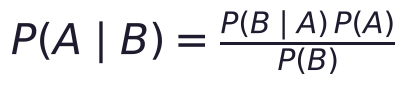
A fraud model flags 99% of fraudulent payments and wrongly flags 2% of genuine ones. Only 0.5% of payments are fraud. If a payment is flagged, how likely is it to be fraud?
Python
p_fraud, sens, fpr = 0.005, 0.99, 0.02
p_flag = sens * p_fraud + fpr * (1 - p_fraud) # law of total probability
p_fraud_given_flag = sens * p_fraud / p_flag
print(f"P(flag) = {p_flag:.4f} | P(fraud | flag) = {p_fraud_given_flag:.1%}")
n = 100_000; fraud = rng.random(n) < p_fraud
flag = np.where(fraud, rng.random(n) < sens, rng.random(n) < fpr)
print(f"simulated: {fraud[flag].mean():.1%} of flagged payments are fraud ({flag.sum():,} flags, {(fraud & flag).sum()} real fraud)")
Output
P(flag) = 0.0249 | P(fraud | flag) = 19.9%
simulated: 19.9% of flagged payments are fraud (2,485 flags, 495 real fraud)
Only about one flag in five is real fraud, because genuine payments vastly outnumber fraud (the base rate). This is why precision matters in imbalanced ML problems (lesson 21) and why naive Bayes classifiers work (lesson 20).
Random variables and expected value
A random variable assigns a number to each outcome. Its expected value is the probability-weighted average: the long-run mean.
Python
values = np.array([0, 500, 2000]); probs = np.array([0.80, 0.15, 0.05]) # customer spend next month
ev = (values * probs).sum(); var = ((values - ev) ** 2 * probs).sum()
print(f"E[spend] = ₹{ev:.0f} | sd = ₹{var ** 0.5:.0f}")
cost, uplift = 60, 0.25# campaign: costs ₹60, raises spend by 25%print(f"expected profit per customer from the campaign: ₹{ev * uplift - cost:.0f} → {'run it' if ev * uplift > cost else 'do not run it'}")
Output
E[spend] = ₹175 | sd = ₹455
expected profit per customer from the campaign: ₹-16 → do not run it
Expected value drives decisions: pricing, insurance, campaign ROI, and the "expected loss" in credit risk (PD × LGD × EAD).
Discrete distributions
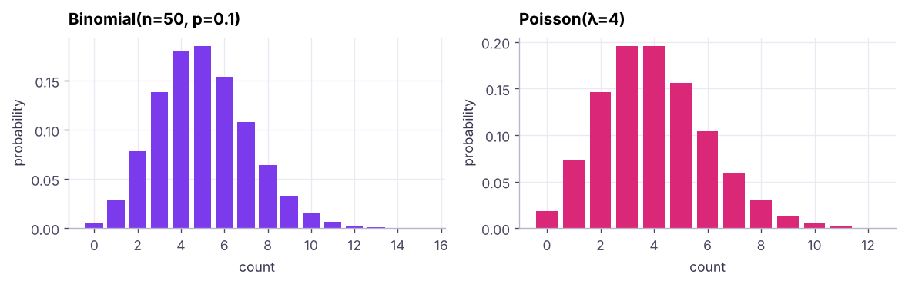
Binomial (number of conversions out of 50 visitors, p = 0.1) and Poisson (support tickets per hour, mean 4).
Distribution
Models
Parameters
Mean
Variance
Bernoulli
One yes/no trial (did this user convert?)
p
p
p(1 − p)
Binomial
Number of successes in n trials
n, p
np
np(1 − p)
Poisson
Count of events in an interval (calls/hour, defects/batch)
λ
λ
λ
Geometric
Trials until first success
p
1/p
(1 − p)/p²
Python
b = stats.binom(n=50, p=0.10)
print(f"P(exactly 5) = {b.pmf(5):.3f} | P(at most 2) = {b.cdf(2):.3f} | P(10 or more) = {b.sf(9):.4f} | mean {b.mean()} sd {b.std():.2f}")
po = stats.poisson(mu=4)
print(f"tickets/hour: P(0) = {po.pmf(0):.3f} | P(more than 8) = {po.sf(8):.4f} | 95th percentile = {po.ppf(0.95):.0f}")
ab = pd.read_csv("ab_test.csv"); ctrl = ab[ab.group == "A_control"]
print(f"A/B control: {ctrl.converted.sum()} conversions from {len(ctrl)} users, p̂ = {ctrl.converted.mean():.3f}")
Output
P(exactly 5) = 0.185 | P(at most 2) = 0.112 | P(10 or more) = 0.0245 | mean 5.0 sd 2.12
tickets/hour: P(0) = 0.018 | P(more than 8) = 0.0214 | 95th percentile = 8
A/B control: 198 conversions from 2000 users, p̂ = 0.099
scipy.stats methods: pmf/pdf (probability or density at a point), cdf (P(X ≤ x)), sf (P(X > x) = 1 − cdf), ppf (inverse cdf: percentiles), rvs (random samples).
Continuous distributions
For continuous variables, probability is the area under the density curve; P(X = exact value) is 0.
The normal distribution
Bell-shaped, symmetric, described by mean μ and standard deviation σ. Heights, measurement errors and, crucially, sample means (next lesson) are approximately normal.
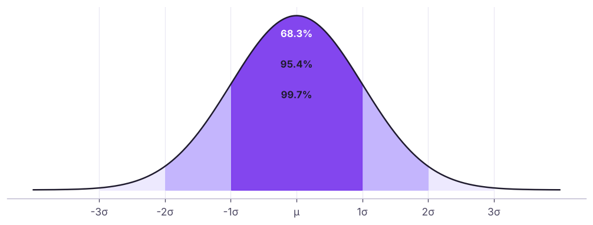
The empirical rule: about 68%, 95% and 99.7% of a normal distribution lie within 1, 2 and 3 standard deviations of the mean.
Python
d = pd.read_csv("delivery_times.csv"); pune = d[d.city == "Pune"].delivery_minutes
mu, sd = pune.mean(), pune.std()
nd = stats.norm(mu, sd)
print(f"Pune delivery: mean {mu:.1f} min, sd {sd:.1f}")
print(f"P(late, > 40 min) model {nd.sf(40):.1%} vs data {(pune > 40).mean():.1%}")
print(f"promise time covering 95% of orders: {nd.ppf(0.95):.1f} min | within ±1 sd: {((pune - mu).abs() <= sd).mean():.0%} of orders")
print("68-95-99.7 check:", [round(float(stats.norm.cdf(k) - stats.norm.cdf(-k)), 4) for k in (1, 2, 3)], "| z for 95% two-sided:", round(stats.norm.ppf(0.975), 3))
Output
Pune delivery: mean 31.7 min, sd 6.4
P(late, > 40 min) model 9.7% vs data 13.3%
promise time covering 95% of orders: 42.2 min | within ±1 sd: 68% of orders
68-95-99.7 check: [0.6827, 0.9545, 0.9973] | z for 95% two-sided: 1.96
The standard normal has μ = 0, σ = 1; any normal value converts with z = (x − μ)/σ. The number 1.96 (95% two-sided) appears in confidence intervals and tests.
Q-Q plots compare data quantiles with normal quantiles: points on the line mean "approximately normal". Pune delivery times look normal; HR income is right-skewed.
Python
for name, data in [("delivery (Pune)", pune), ("income", hr.monthly_income), ("log income", np.log(hr.monthly_income))]:
print(f"{name:16s} Shapiro-Wilk p = {stats.shapiro(data.sample(min(len(data), 500), random_state=0)).pvalue:.4f} | skew {stats.skew(data):.2f}")
Output
delivery (Pune) Shapiro-Wilk p = 0.1629 | skew -0.15
income Shapiro-Wilk p = 0.0000 | skew 1.02
log income Shapiro-Wilk p = 0.0000 | skew 0.28
A small p-value (< 0.05) suggests the data are not normal. With large samples, tiny departures become "significant", so rely on plots and skewness too.
Summary
Key takeaways
Probability rules: complement, addition, multiplication (independence), conditional P(A | B) ≠ P(B | A).
Bayes' theorem updates beliefs; low base rates make most alerts false positives.
Expected value = probability-weighted average, the basis of ROI and risk decisions.
Binomial (successes in n trials), Poisson (counts per interval), normal (measurements, sample means), exponential (waiting times); use scipy.statspmf/pdf, cdf, sf, ppf, rvs.
Empirical rule 68-95-99.7; z = (x − μ)/σ; check normality with Q-Q plots and skewness.
Quick quiz6 questions · tap an answer to check it
1. A fraud test is 99% sensitive with a 2% false-positive rate, and fraud is 0.5% of payments. Roughly what share of flagged payments are fraud?
Answer: C. The low base rate means most flags are genuine payments.
2. Which distribution models the number of support calls per hour?
Answer: B. Counts of events in a fixed interval.
3. For a binomial with n = 50 and p = 0.1, what is the mean?
Answer: B. Mean = np.
4. About what share of a normal distribution lies within ±2 standard deviations?
(1) Probability of at least one conversion from 20 visitors if p = 0.08. (2) A call centre averages 6 calls per 10 minutes; probability of more than 10 calls in 10 minutes. (3) Hyderabad delivery times: estimate P(> 45 min) with a normal model and compare with the data. (4) Simulate the Bayes fraud example with fraud at 2% instead of 0.5%. What changes?
Q: Explain Bayes' theorem with an example.
It updates a prior probability with new evidence. For a rare disease with an accurate test, a positive result can still be more likely a false positive because healthy people vastly outnumber sick ones.
Q: When would you use a Poisson distribution?
For counts of independent events in a fixed time or space with a constant average rate, such as orders per minute, defects per batch or calls per hour.
Q: What is the difference between pdf and cdf?
The pdf gives density at a point (probability for discrete pmf); the cdf gives the cumulative probability P(X ≤ x).
Statistics & Machine Learning · Lesson 3
Sampling, the Central Limit Theorem and Confidence Intervals
Learn how a sample tells us about a population. Population vs sample, sampling methods and biases, sampling distributions and standard error, the Central Limit Theorem by simulation, confidence intervals for means and proportions (z, t and bootstrap), and how to choose a sample size.
● Python classes 14–15 · ML class 1✦ SciPy 1.1x · statsmodels 0.1xIntermediate⏱ 110 min
By the end of this lesson you can
Distinguish population and sample, parameter and statistic, and name common sampling methods and biases
Explain sampling distributions and standard error
Demonstrate the Central Limit Theorem by simulation and state when it applies
Compute and interpret confidence intervals for a mean and a proportion, including the bootstrap
Estimate the sample size needed for a target margin of error
Population and sample
Term
Population
Sample
What
Everyone/everything of interest
The part you observe
Summary
Parameter (μ, σ, p)
Statistic (x̄, s, p̂)
Example
All 1,500 employees
100 surveyed employees
We almost never see the population (all customers, all future orders), so we estimate parameters from samples and state our uncertainty.
Sampling methods.
Python
import pandas as pd, numpy as np
from scipy import stats
hr = pd.read_csv("hr_employees.csv")
pop_mean, pop_rate = hr.monthly_income.mean(), (hr.attrition == "Yes").mean()
print(f"population: mean income {pop_mean:,.0f}, attrition {pop_rate:.1%}, N = {len(hr)}")
srs = hr.sample(150, random_state=1)
strat = hr.groupby("department", group_keys=False).sample(frac=0.1, random_state=1) # stratified 10%print(f"simple random n=150: mean {srs.monthly_income.mean():,.0f}, attrition {(srs.attrition == 'Yes').mean():.1%}")
print(f"stratified n={len(strat)}: mean {strat.monthly_income.mean():,.0f}; department shares kept:",
(strat.department.value_counts(normalize=True) - hr.department.value_counts(normalize=True)).abs().max().round(3) < 0.01)
Output
population: mean income 82,611, attrition 25.9%, N = 1500
simple random n=150: mean 85,587, attrition 21.3%
stratified n=149: mean 81,315; department shares kept: True
Watch outSampling bias beats sample size
A huge biased sample is worse than a small random one. Watch for selection bias (only app users surveyed), non-response bias (unhappy customers ignore surveys), survivorship bias (studying only companies that still exist) and time bias (a festive week is not a normal week).
Sampling distributions and standard error
Take many samples and compute the mean of each: those means form the sampling distribution. Its standard deviation is the standard error (SE).
Python
rng = np.random.default_rng(0)
inc = hr.monthly_income.to_numpy()
for n in (10, 40, 160, 640):
means = [rng.choice(inc, n).mean() for _ inrange(3000)]
print(f"n={n:4d}: sd of sample means {np.std(means):7,.0f} | formula σ/√n {inc.std() / np.sqrt(n):7,.0f}")
Output
n= 10: sd of sample means 9,854 | formula σ/√n 9,846
n= 40: sd of sample means 4,970 | formula σ/√n 4,923
n= 160: sd of sample means 2,492 | formula σ/√n 2,461
n= 640: sd of sample means 1,232 | formula σ/√n 1,231
Quadrupling the sample size halves the standard error: precision grows with √n, so doubling precision costs four times the data.
The Central Limit Theorem
CLT: for a large enough sample (rule of thumb n ≥ 30, more for very skewed data), the sampling distribution of the mean is approximately normal, whatever the shape of the population, with mean μ and SE σ/√n.
Income is right-skewed (left), yet the means of samples of 5, 30 and 100 employees become ever more normal and narrow.
The CLT is why z- and t-tests, confidence intervals and A/B tests work on non-normal business data such as revenue.
Confidence intervals
A 95% confidence interval is a range built by a method that captures the true parameter in 95% of repeated samples.
Python
sample = hr.sample(100, random_state=3)
x = sample.monthly_income
se = x.std() / np.sqrt(len(x)); tcrit = stats.t.ppf(0.975, df=len(x) - 1)
lo, hi = x.mean() - tcrit * se, x.mean() + tcrit * se
print(f"mean {x.mean():,.0f} | 95% CI {lo:,.0f} to {hi:,.0f} | t* = {tcrit:.3f} | true mean {pop_mean:,.0f} inside? {lo <= pop_mean <= hi}")
print("scipy:", [round(v) for v instats.t.interval(0.95, len(x) - 1, loc=x.mean(), scale=se)])
k = (sample.attrition == "Yes").sum(); n = len(sample); ph = k / n
z = stats.norm.ppf(0.975)
print(f"attrition p̂ = {ph:.2f}, 95% CI (Wald) {ph - z * np.sqrt(ph * (1 - ph) / n):.3f} to {ph + z * np.sqrt(ph * (1 - ph) / n):.3f}")
from statsmodels.stats.proportion import proportion_confint
print("Wilson CI (better for small n or extreme p):", [round(v, 3) for v inproportion_confint(k, n, method="wilson")])
Output
mean 82,653 | 95% CI 77,094 to 88,213 | t* = 1.984 | true mean 82,611 inside? True
scipy: [77094, 88213]
attrition p̂ = 0.32, 95% CI (Wald) 0.229 to 0.411
Wilson CI (better for small n or extreme p): [0.237, 0.417]
50 samples of 100 employees, each with its 95% CI. Most intervals (purple) contain the true mean; about 1 in 20 (pink) misses.
NoteWhat a 95% CI does not mean
It does not mean "there is a 95% probability that the true value is in this particular interval": the true value is fixed. It means the procedure captures the true value 95% of the time. In practice, say "we are 95% confident the average income is between … and …".
Wider interval when…
Narrower when…
Higher confidence (99% vs 95%)
Larger sample size
More variable data
Less variable data
Smaller sample
Lower confidence (90%)
Bootstrap confidence intervals
When there is no simple formula (median, ratios, percentiles), resample the sample with replacement many times and take percentiles of the statistic.
Python
boot = np.array([rng.choice(x.to_numpy(), len(x), replace=True) for _ inrange(5000)])
med = np.median(boot, axis=1)
print(f"sample median {x.median():,.0f} | 95% bootstrap CI {np.percentile(med, 2.5):,.0f} to {np.percentile(med, 97.5):,.0f}")
res = stats.bootstrap((x.to_numpy(),), np.median, confidence_level=0.95, n_resamples=5000, random_state=0, method="percentile")
print("scipy.stats.bootstrap:", [round(v) for v in (res.confidence_interval.low, res.confidence_interval.high)])
Output
sample median 82,666 | 95% bootstrap CI 68,750 to 90,542
scipy.stats.bootstrap: [68746, 89750]
Sample size planning
Required n for a margin of error E (half-width of the CI):
income within ±₹5,000: 149 employees | ±₹2,000: 931
survey proportion within ±5 points: 385 | ±3 points: 1068 | ±1 point: 9604
This is why opinion polls survey about 1,000 people (±3 points) and why A/B tests on small effects need tens of thousands of users (lesson 6).
Summary
Key takeaways
Parameters describe populations; statistics estimate them from samples. Random (and stratified) sampling avoids bias; size cannot fix bias.
The standard error σ/√n measures how much a statistic varies from sample to sample.
The CLT makes sample means approximately normal for large n, whatever the population shape.
CI for a mean: x̄ ± t·s/√n; for a proportion: p̂ ± z·√(p̂(1 − p̂)/n) (Wilson for small samples); bootstrap for anything else.
Plan sample size from the margin of error: halving the error needs four times the data.
Quick quiz6 questions · tap an answer to check it
1. What happens to the standard error when the sample size quadruples?
Answer: C. SE ∝ 1/√n.
2. What does the Central Limit Theorem say?
Answer: B. It underpins most tests on business data.
3. A 95% CI for mean spend is ₹820–₹910. Best interpretation?
Answer: A. A CI is about the parameter, not individual values.
4. Which makes a confidence interval narrower?
Answer: B. More data, more precision.
5. How do you get a CI for a median without a formula?
Answer: B. Works for almost any statistic.
6. Which bias occurs when only active app users answer a satisfaction survey?
Answer: A. The sample does not represent all customers.
ExercisePractice
(1) From ab_test.csv, compute a 95% CI for the conversion rate of each group. Do they overlap? (2) Bootstrap a 95% CI for the difference in mean order value between groups. (3) How many users per group would you need to estimate a conversion rate within ±1 point?
Show solution
Python
ab = pd.read_csv("ab_test.csv")
for g, d inab.groupby("group"): print(g, [round(v, 4) for v inproportion_confint(d.converted.sum(), len(d), method="wilson")])
a, b = ab[ab.group == "A_control"].order_value.to_numpy(), ab[ab.group == "B_new_checkout"].order_value.to_numpy()
diffs = [rng.choice(b, len(b)).mean() - rng.choice(a, len(a)).mean() for _ inrange(3000)]
print(np.percentile(diffs, [2.5, 97.5]))
print(n_for_prop(0.01, p=0.12))
Interview cornerQuestions you may be asked
Q: Explain the Central Limit Theorem to a non-technical manager.
If we average enough randomly chosen customers, those averages behave predictably (a bell curve) even when individual spending is wildly uneven, so we can say how confident we are in an average.
Q: What is the difference between standard deviation and standard error?
Standard deviation measures spread of individual values; standard error measures spread of a statistic (like the mean) across samples: SE = sd/√n.
Q: How would you choose a sample size for a survey?
Decide the margin of error and confidence level, estimate variability (use p = 0.5 for proportions if unknown), compute n, then inflate for expected non-response.
Statistics & Machine Learning · Lesson 4
Hypothesis Testing I: The Framework, p-values, z-tests and t-tests
Turn business questions into testable hypotheses. Null and alternative hypotheses, significance level, test statistics, p-values and critical values, one- vs two-tailed tests, Type I and II errors and power, then one-sample, two-sample (Welch) and paired t-tests and z-tests for proportions, on a delivery-time case study.
● ML classes 1–2✦ SciPy 1.1x · statsmodels 0.1xIntermediate⏱ 120 min
By the end of this lesson you can
Translate a business question into null and alternative hypotheses
Explain significance level, test statistic, p-value and critical value, and decide with both
Choose one- or two-tailed tests and describe Type I/II errors and power
Run and interpret one-sample, independent (Welch) and paired t-tests and a z-test for proportions
Report effect sizes and confidence intervals, not just p-values
From business question to hypothesis
Case. A quick-commerce company promises "delivery in 30 minutes". Operations claim Pune meets the promise on average. Is the average delivery time in Pune really 30 minutes, or is it slower? Is Hyderabad different from Pune?
A hypothesis test checks whether data are consistent with a default claim.
Term
Meaning
Delivery case
H₀ (null)
No effect / status quo; assumed true until evidence
μ_Pune = 30 min
H₁ (alternative)
What we want evidence for
μ_Pune > 30 min (one-tailed) or ≠ 30 (two-tailed)
α (significance level)
Accepted risk of a false alarm
0.05
Test statistic
Distance from H₀ in standard-error units
t = (x̄ − 30)/(s/√n)
p-value
P(data at least this extreme | H₀ true)
from the t distribution
Decision
p ≤ α → reject H₀; p > α → fail to reject H₀
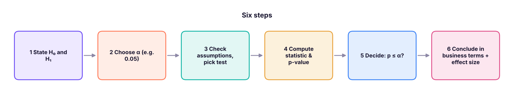
The hypothesis-testing procedure.
p-values and critical values
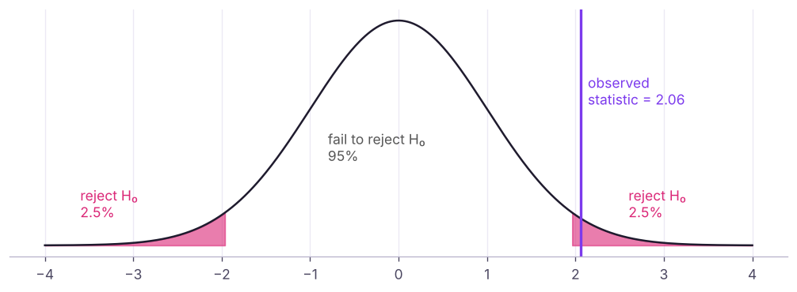
Two-tailed test at α = 0.05: the rejection regions are the 2.5% tails beyond ±1.96 (z). The p-value is the tail area beyond the observed statistic.
Python
print("critical values: two-tailed z ±", round(stats.norm.ppf(0.975), 3), "| one-tailed z", round(stats.norm.ppf(0.95), 3), "| two-tailed t(df=59) ±", round(stats.t.ppf(0.975, 59), 3))
for z in (1.2, 1.7, 2.06, 3.1): print(f"z = {z}: two-tailed p = {2 * stats.norm.sf(abs(z)):.4f} | one-tailed p = {stats.norm.sf(z):.4f}")
Output
critical values: two-tailed z ± 1.96 | one-tailed z 1.645 | two-tailed t(df=59) ± 2.001
z = 1.2: two-tailed p = 0.2301 | one-tailed p = 0.1151
z = 1.7: two-tailed p = 0.0891 | one-tailed p = 0.0446
z = 2.06: two-tailed p = 0.0394 | one-tailed p = 0.0197
z = 3.1: two-tailed p = 0.0019 | one-tailed p = 0.0010
Watch outWhat a p-value is not
It is not the probability that H₀ is true, and 1 − p is not the probability that H₁ is true. A large p-value does not prove H₀ ("absence of evidence is not evidence of absence"). A tiny p-value does not mean a large or important effect.
One- vs two-tailed
Two-tailed
One-tailed
H₁
μ ≠ 30 (any difference)
μ > 30 (only "slower")
α split
2.5% in each tail
5% in one tail
When
Default; direction unknown
Direction fixed before looking at data, and the other direction is irrelevant
Errors and power
H₀ true
H₀ false
Reject H₀
Type I error (false positive), probability α
Correct: power = 1 − β
Fail to reject
Correct
Type II error (false negative), probability β
Fire alarm analogy: a Type I error rings without a fire; a Type II error stays silent during a fire. Lower α means fewer false alarms but more misses unless you collect more data. Power (commonly 80%) grows with sample size, effect size and α.
One-sample t-test: does Pune meet 30 minutes?
Python
import pandas as pd
d = pd.read_csv("delivery_times.csv")
pune, hyd = d[d.city == "Pune"].delivery_minutes, d[d.city == "Hyderabad"].delivery_minutes
print(f"Pune: n={len(pune)}, mean {pune.mean():.2f}, sd {pune.std():.2f}")
t_two = stats.ttest_1samp(pune, 30)
t_one = stats.ttest_1samp(pune, 30, alternative="greater")
se = pune.std() / np.sqrt(len(pune))
print(f"t = {t_two.statistic:.3f}, df = {len(pune) - 1} | two-tailed p = {t_two.pvalue:.4f} | one-tailed (greater) p = {t_one.pvalue:.4f}")
print(f"by hand: t = ({pune.mean():.2f} − 30) / {se:.3f} = {(pune.mean() - 30) / se:.3f}")
ci = stats.t.interval(0.95, len(pune) - 1, loc=pune.mean(), scale=se)
print(f"95% CI for mean: {ci[0]:.2f} to {ci[1]:.2f} minutes (30 is {'outside' if not ci[0] <= 30 <= ci[1] else 'inside'})")
print(f"effect size (Cohen's d) = {(pune.mean() - 30) / pune.std():.2f}")
Output
Pune: n=60, mean 31.70, sd 6.39
t = 2.060, df = 59 | two-tailed p = 0.0439 | one-tailed (greater) p = 0.0219
by hand: t = (31.70 − 30) / 0.825 = 2.060
95% CI for mean: 30.05 to 33.35 minutes (30 is outside)
effect size (Cohen's d) = 0.27
Conclusion. At α = 0.05 we reject H₀: Pune's average delivery time (about 31.7 minutes) is statistically higher than the 30-minute promise (p ≈ 0.02 one-tailed). The difference is small (under 2 minutes, d ≈ 0.27), so the business question is whether 1–2 minutes matter to customers, not just whether p < 0.05.
Two-sample t-test: Pune vs Hyderabad
Python
print(f"Hyderabad: n={len(hyd)}, mean {hyd.mean():.2f}, sd {hyd.std():.2f}")
lev = stats.levene(pune, hyd); print(f"Levene test for equal variances p = {lev.pvalue:.3f} → {'unequal' if lev.pvalue < 0.05 else 'equal'} variances")
w = stats.ttest_ind(hyd, pune, equal_var=False) # Welch's t-test: safe defaultprint(f"Welch t = {w.statistic:.3f}, p = {w.pvalue:.4f}, difference = {hyd.mean() - pune.mean():.2f} min")
pooled = np.sqrt(((len(pune) - 1) * pune.var() + (len(hyd) - 1) * hyd.var()) / (len(pune) + len(hyd) - 2))
print(f"Cohen's d = {(hyd.mean() - pune.mean()) / pooled:.2f}")
Output
Hyderabad: n=55, mean 33.81, sd 7.60
Levene test for equal variances p = 0.047 → unequal variances
Welch t = 1.601, p = 0.1123, difference = 2.11 min
Cohen's d = 0.30
Conclusion. p ≈ 0.11 > 0.05: we fail to reject H₀. The data do not show a significant difference between the cities (Hyderabad is about 2 minutes slower in this sample, but that could be chance). Use Welch's test (equal_var=False) by default: it does not assume equal variances and loses almost nothing when they are equal.
Paired t-test: before and after
Use a paired test when the same units are measured twice (same riders before/after training, same stores before/after a layout change).
Python
rng = np.random.default_rng(5)
before = rng.normal(34, 5, 30).round(1)
after = (before - rng.normal(1.5, 1.5, 30)).round(1) # simulated route-training effect
pt = stats.ttest_rel(before, after)
it = stats.ttest_ind(before, after, equal_var=False)
print(f"mean improvement {np.mean(before - after):.2f} min | paired p = {pt.pvalue:.4f} | (wrong) independent p = {it.pvalue:.4f}")
Output
mean improvement 1.17 min | paired p = 0.0003 | (wrong) independent p = 0.3342
Pairing removes rider-to-rider variation, so the same improvement is detected far more clearly.
z-test for proportions
Python
from statsmodels.stats.proportion import proportions_ztest
hr = pd.read_csv("hr_employees.csv")
ot = hr[hr.overtime == "Yes"].attrition.eq("Yes"); no = hr[hr.overtime == "No"].attrition.eq("Yes")
stat, p = proportions_ztest([ot.sum(), no.sum()], [len(ot), len(no)])
print(f"attrition: overtime {ot.mean():.1%} (n={len(ot)}) vs no overtime {no.mean():.1%} (n={len(no)}) | z = {stat:.2f}, p = {p:.2e}")
stat1, p1 = proportions_ztest(hr.attrition.eq("Yes").sum(), len(hr), value=0.20, alternative="larger")
print(f"is company attrition above the 20% industry benchmark? z = {stat1:.2f}, p = {p1:.2e}")
Output
attrition: overtime 36.7% (n=433) vs no overtime 21.6% (n=1067) | z = 6.07, p = 1.26e-09
is company attrition above the 20% industry benchmark? z = 5.24, p = 7.89e-08
Choosing a test (means)
Situation
Test
Python
One mean vs a target, σ unknown
One-sample t
stats.ttest_1samp
Two independent groups
Welch's t
stats.ttest_ind(..., equal_var=False)
Same units twice
Paired t
stats.ttest_rel
One or two proportions
z-test
statsmodels proportions_ztest
Non-normal small samples
Mann-Whitney U / Wilcoxon (next lesson)
stats.mannwhitneyu, stats.wilcoxon
3+ groups
ANOVA (next lesson)
stats.f_oneway
Assumptions for t-tests: independent observations, roughly normal data or large samples (CLT), and for the pooled version equal variances.
Reporting
Pune deliveries averaged 31.7 minutes (95% CI 30.1–33.4, n = 60), significantly above the 30-minute promise (one-sample t = 2.06, one-tailed p = 0.022). The gap is small (d = 0.27). Recommendation: monitor the share of orders above 40 minutes (13%) rather than the average.
Report the estimate, CI, test, p-value, effect size and business meaning.
Summary
Key takeaways
H₀ is the default (no effect); H₁ is what you want evidence for; fix α (usually 0.05) and the tails before looking.
p-value = probability of data this extreme if H₀ were true; reject H₀ when p ≤ α (equivalently when the statistic passes the critical value).
Type I (false positive, α) vs Type II (false negative, β); power = 1 − β grows with n and effect size.
Always report effect size and a confidence interval: statistical significance is not business significance.
Quick quiz6 questions · tap an answer to check it
1. The p-value is 0.03 and α = 0.05. What do you conclude?
Answer: A. p ≤ α.
2. Which is a Type I error?
Answer: A. A false positive.
3. Which test compares the same riders before and after training?
Answer: B. Measurements are paired by rider.
4. Why prefer Welch's t-test for two groups?
Answer: A.equal_var=False.
5. p = 0.40. What can you say?
Answer: B. Absence of evidence is not evidence of absence.
6. What increases the power of a test?
Answer: B. Power = probability of detecting a real effect.
ExercisePractice
(1) Test whether Hyderabad's mean delivery time exceeds 30 minutes. (2) Test whether employees who left had lower monthly income than those who stayed (one-tailed Welch). Report the difference and d. (3) Test whether the share of overtime workers differs between Sales and IT.
Q: Explain a p-value to a business stakeholder.
If there were truly no difference, how surprising would our data be? A p-value of 0.01 means a result this extreme would happen only 1% of the time by chance alone.
Q: What is the difference between statistical and practical significance?
Statistical significance says an effect is unlikely to be zero; practical significance asks whether it is large enough to matter (effect size, cost, revenue).
Q: How do you choose α?
By the cost of errors: 0.05 by convention; lower (0.01) when false positives are expensive (medical, financial launches); sometimes higher for early exploration.
Statistics & Machine Learning · Lesson 5
Hypothesis Testing II: Chi-Square, ANOVA, Non-Parametric Tests and Correlation Tests
Test relationships between categories with chi-square tests, compare three or more groups with one-way ANOVA and Tukey post-hoc tests, use non-parametric alternatives (Mann-Whitney, Wilcoxon, Kruskal-Wallis) when assumptions fail, test correlations, and control false discoveries when running many tests.
● ML classes 1 and 3 · Python class 15✦ SciPy 1.1x · statsmodels 0.1xIntermediate⏱ 110 min
By the end of this lesson you can
Run chi-square tests of independence and goodness of fit and read expected counts
Compare several group means with one-way ANOVA and locate differences with Tukey HSD
Choose parametric vs non-parametric tests and run Mann-Whitney, Wilcoxon and Kruskal-Wallis
Test correlations with Pearson and Spearman
Adjust for multiple comparisons (Bonferroni, Benjamini-Hochberg)
Which test? A decision map
Choosing a test from the type of variables and the number of groups.
Parametric (assumes ~normal)
Non-parametric (ranks; fewer assumptions)
One-sample / paired t
Wilcoxon signed-rank
Independent t (Welch)
Mann-Whitney U
One-way ANOVA
Kruskal-Wallis
Pearson correlation
Spearman correlation
Parametric tests are more powerful when their assumptions hold; non-parametric tests are safer for small, skewed samples, ordinal data and outliers.
Chi-square test of independence
Case. A retailer surveyed 600 customers: is the preferred shopping channel (App, Store, Website) related to age group?
Python
import pandas as pd, numpy as np
from scipy import stats
c = pd.read_csv("channel_survey.csv")
obs = pd.crosstab(c.age_group, c.preferred_channel)
print(obs, "\n")
print((pd.crosstab(c.age_group, c.preferred_channel, normalize="index") * 100).round(1))
res = stats.chi2_contingency(obs)
print(f"\nχ² = {res.statistic:.2f}, df = {res.dof}, p = {res.pvalue:.2e}")
print("expected counts if independent:\n", pd.DataFrame(res.expected_freq, index=obs.index, columns=obs.columns).round(1))
n = obs.values.sum(); cramers_v = np.sqrt(res.statistic / (n * (min(obs.shape) - 1)))
print(f"Cramér's V = {cramers_v:.2f} (effect size: 0.1 small, 0.3 medium, 0.5 large)")
The test compares observed counts with the counts expected if age and channel were independent. p < 0.001, so channel preference depends on age: 18–25-year-olds favour the app (49%), customers over 41 favour stores and the website. Cramér's V ≈ 0.17 shows a modest association.
Standardised residuals show which cells drive the result: positive = more than expected.
Assumptions: independent observations and expected counts of at least 5 in (almost) every cell; otherwise combine categories or use Fisher's exact test (stats.fisher_exact for 2 × 2).
Goodness of fit
Does an observed distribution match an expected one?
Case. 120 volunteers were randomly assigned to Keto, Low-fat or Mediterranean diets for 8 weeks. Do average weight losses differ?
Running three t-tests inflates the false-positive rate (1 − 0.95³ ≈ 14%). ANOVA tests all means at once: H₀: μ₁ = μ₂ = μ₃.
Python
d = pd.read_csv("diet_study.csv")
print(d.groupby("diet").weight_loss_kg.agg(["count", "mean", "std"]).round(2))
groups = [g.weight_loss_kg for _, g ind.groupby("diet")]
print("Levene equal variances p =", round(stats.levene(*groups).pvalue, 3), "| Shapiro p per group:", [round(float(stats.shapiro(g).pvalue), 3) for g in groups])
f = stats.f_oneway(*groups)
print(f"F = {f.statistic:.2f}, p = {f.pvalue:.2e}")
grand = d.weight_loss_kg.mean()
ss_between = sum(len(g) * (g.mean() - grand) ** 2for g in groups); ss_total = ((d.weight_loss_kg - grand) ** 2).sum()
print(f"η² (share of variance explained by diet) = {ss_between / ss_total:.2f}")
Output
count mean std
diet
Keto 40 4.65 1.49
Low-fat 40 2.75 1.78
Mediterranean 40 4.03 1.50
Levene equal variances p = 0.615 | Shapiro p per group: [0.655, 0.698, 0.036]
F = 14.74, p = 1.96e-06
η² (share of variance explained by diet) = 0.20
ANOVA splits total variation into between-group and within-group parts; F = (between variance) ÷ (within variance). A large F means group means differ more than random noise would suggest.
Weight loss by diet with group means: Keto and Mediterranean beat Low-fat.
Post-hoc: which groups differ?
Python
from statsmodels.stats.multicomp import pairwise_tukeyhsd
print(pairwise_tukeyhsd(d.weight_loss_kg, d.diet, alpha=0.05))
Tukey's HSD compares every pair while keeping the overall error at 5%. Keto and Mediterranean both beat Low-fat; Keto vs Mediterranean is not significant.
Two-way ANOVA (two factors and their interaction) uses statsmodels.formula.api.ols("y ~ C(a) * C(b)") with anova_lm.
Non-parametric alternatives
Python
kw = stats.kruskal(*groups); print(f"Kruskal-Wallis (diets): H = {kw.statistic:.2f}, p = {kw.pvalue:.2e}")
hr = pd.read_csv("hr_employees.csv")
left, stay = hr[hr.attrition == "Yes"].monthly_income, hr[hr.attrition == "No"].monthly_income
print(f"income medians: left {left.median():,.0f} vs stayed {stay.median():,.0f} | Mann-Whitney p = {stats.mannwhitneyu(left, stay).pvalue:.2e}")
sat_ot = hr[hr.overtime == "Yes"].job_satisfaction; sat_no = hr[hr.overtime == "No"].job_satisfaction
print(f"job satisfaction (ordinal 1–4), overtime vs not: Mann-Whitney p = {stats.mannwhitneyu(sat_ot, sat_no).pvalue:.3f}")
rng = np.random.default_rng(1); before = rng.lognormal(3, .5, 20); after = before * rng.uniform(.75, 1.05, 20)
print("Wilcoxon signed-rank (paired, skewed):", round(stats.wilcoxon(before, after).pvalue, 4))
Output
Kruskal-Wallis (diets): H = 23.29, p = 8.78e-06
income medians: left 67,917 vs stayed 77,750 | Mann-Whitney p = 3.81e-06
job satisfaction (ordinal 1–4), overtime vs not: Mann-Whitney p = 0.191
Wilcoxon signed-rank (paired, skewed): 0.001
Mann-Whitney compares whether values in one group tend to be larger than in the other (often described as comparing medians). It suits skewed income data and ordinal ratings.
Testing correlations
Python
for a, b in [("age", "monthly_income"), ("distance_from_home_km", "job_satisfaction"), ("years_at_company", "monthly_income")]:
pr, sp = stats.pearsonr(hr[a], hr[b]), stats.spearmanr(hr[a], hr[b])
print(f"{a:22s} vs {b:16s} Pearson r {pr.statistic:+.3f} (p {pr.pvalue:.3g}) | Spearman ρ {sp.statistic:+.3f} (p {sp.pvalue:.3g})")
print("Department vs attrition: χ² p =", round(stats.chi2_contingency(pd.crosstab(hr.department, hr.attrition)).pvalue, 3))
Output
age vs monthly_income Pearson r +0.135 (p 1.52e-07) | Spearman ρ +0.108 (p 2.95e-05)
distance_from_home_km vs job_satisfaction Pearson r +0.008 (p 0.764) | Spearman ρ +0.007 (p 0.776)
years_at_company vs monthly_income Pearson r +0.679 (p 1.63e-203) | Spearman ρ +0.577 (p 7.98e-134)
Department vs attrition: χ² p = 0.196
With 1,500 rows, even r = 0.1 can be "significant": look at the size of r, not only the p-value.
Many tests: the multiple-comparison problem
Test 100 segments where nothing really changed, at α = 0.05, and about five will look "significant" by chance.
Python
from statsmodels.stats.multitest import multipletests
rng = np.random.default_rng(42)
null_p = [stats.ttest_ind(rng.normal(0, 1, 50), rng.normal(0, 1, 50)).pvalue for _ inrange(100)] # 100 segments with NO real effect
real_p = [stats.ttest_ind(rng.normal(0, 1, 50), rng.normal(0.8, 1, 50)).pvalue for _ inrange(5)] # 5 segments with a real effect
pvals = np.array(null_p + real_p); truth = np.array([False] * 100 + [True] * 5)
for name, sig in [("raw p < 0.05", pvals < 0.05), ("Bonferroni", multipletests(pvals, 0.05, "bonferroni")[0]), ("Benjamini-Hochberg", multipletests(pvals, 0.05, "fdr_bh")[0])]:
print(f"{name:20s} significant {sig.sum():3d} | true effects found {(sig & truth).sum()} of 5 | false positives {(sig & ~truth).sum()}")
Output
raw p < 0.05 significant 12 | true effects found 5 of 5 | false positives 7
Bonferroni significant 3 | true effects found 3 of 5 | false positives 0
Benjamini-Hochberg significant 6 | true effects found 5 of 5 | false positives 1
Bonferroni (α ÷ number of tests) controls the chance of any false positive but is strict; Benjamini-Hochberg controls the false discovery rate and keeps more power. Use them for dashboards that test many segments, A/B tests with many metrics, and feature screening.
Summary
Key takeaways
Chi-square tests whether two categorical variables are independent (expected counts ≥ 5); report Cramér's V and residuals.
ANOVA compares 3+ means in one test (F = between/within variance); follow with Tukey HSD; report η².
Non-parametric tests (Mann-Whitney, Wilcoxon, Kruskal-Wallis, Spearman) use ranks for skewed, ordinal or small data.
Test correlations with Pearson (linear) or Spearman (monotonic); large n makes tiny r significant.
Many tests → adjust p-values (Bonferroni, Benjamini-Hochberg).
Quick quiz6 questions · tap an answer to check it
1. Which test checks whether preferred channel depends on age group?
Answer: B. Both variables are categorical.
2. Why use ANOVA instead of several t-tests for 3 groups?
Answer: A. ANOVA tests all means together at α.
3. ANOVA gives p < 0.001 for three diets. What next?
Answer: B. ANOVA only says at least one mean differs.
4. Which test compares two independent groups of skewed incomes?
Answer: B. A rank-based alternative to the t-test.
5. What does the Benjamini-Hochberg method control?
Answer: B. It is less strict than Bonferroni.
6. What is a chi-square assumption?
Answer: A. Use Fisher's exact test for small tables.
ExercisePractice (hr_employees.csv)
(1) Is overtime related to department? (chi-square + Cramér's V). (2) Does mean monthly income differ across departments (ANOVA + Tukey)? (3) Repeat (2) with Kruskal-Wallis. (4) Is education level related to attrition?
Show solution
Python
t = pd.crosstab(hr.department, hr.overtime); r = stats.chi2_contingency(t); print(r.pvalue, np.sqrt(r.statistic / (t.values.sum() * (min(t.shape) - 1))))
gs = [g.monthly_income for _, g inhr.groupby("department")]; print(stats.f_oneway(*gs))
print(pairwise_tukeyhsd(hr.monthly_income, hr.department))
print(stats.kruskal(*gs))
print(stats.chi2_contingency(pd.crosstab(hr.education, hr.attrition)).pvalue)
Interview cornerQuestions you may be asked
Q: When would you use a non-parametric test?
Small samples that are clearly non-normal, ordinal data (ratings), or heavy outliers; for large samples the CLT usually makes parametric tests fine.
Q: What does a chi-square test tell you and what does it not?
Whether two categorical variables are associated; not the direction, strength (use Cramér's V) or causation.
Q: Explain ANOVA's F-statistic.
The ratio of variation between group means to variation within groups; large values mean group differences exceed what noise explains.
Statistics & Machine Learning · Lesson 6
A/B Testing and Experimentation: Design, Power, Analysis and Pitfalls
Run product experiments the way data teams at e-commerce and fintech companies do. Choose a metric and guardrails, size the test with power analysis, randomise, analyse conversion and revenue with z-tests, t-tests and bootstrap intervals, check sample-ratio mismatch, avoid peeking and novelty effects, and write the decision memo, using a new-checkout experiment.
● ML class 2 (case study)✦ statsmodels 0.1x · SciPy 1.1xIntermediate⏱ 120 min
By the end of this lesson you can
Design an experiment with a hypothesis, primary metric, guardrail metrics and randomisation unit
Compute the required sample size with power analysis and a minimum detectable effect
Analyse conversion (two-proportion z-test) and revenue per user (Welch t-test and bootstrap)
Check sample-ratio mismatch and recognise peeking, novelty and network effects
Write a launch/no-launch recommendation with uncertainty and business impact
What is an A/B test?
A randomised controlled experiment: users are randomly split into control (A) and treatment (B); the only systematic difference is the change you test, so differences in outcomes are caused by the change (up to chance, which statistics quantifies).
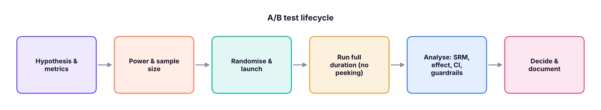
The experiment lifecycle.
Case. An online store tests a new one-page checkout (B) against the current checkout (A). 4,000 users were split 50/50.
Hypothesis: the new checkout increases the purchase conversion rate.
Primary metric: conversion = purchasers ÷ users. Secondary: revenue per user, average order value. Guardrails: refund rate, page load time, support tickets.
Design choice
Good practice
Randomisation unit
User (not session or page view), so one person sees one version
Split
50/50 maximises power
Duration
At least one full business cycle (1–2 weeks, including weekends); fixed in advance
Metric
Defined before launch; one primary metric
Population
Who is eligible (new users only? all platforms?)
Sample size and power
Before launching: how many users do we need to detect the smallest effect worth acting on (the minimum detectable effect, MDE)?
Python
import numpy as np, pandas as pd
from scipy import stats
from statsmodels.stats.power import NormalIndPower
from statsmodels.stats.proportion import proportion_effectsize
base = 0.10for target in (0.11, 0.12, 0.13):
h = proportion_effectsize(target, base) # Cohen's h
n = NormalIndPower().solve_power(effect_size=h, alpha=0.05, power=0.8, ratio=1, alternative="two-sided")
print(f"detect {base:.0%} → {target:.0%} (+{(target - base) / base:.0%} relative): {int(np.ceil(n)):,} users per group")
Output
detect 10% → 11% (+10% relative): 14,745 users per group
detect 10% → 12% (+20% relative): 3,835 users per group
detect 10% → 13% (+30% relative): 1,769 users per group
Small lifts need very large samples. With 2,000 users per group, this test can reliably detect a lift from about 10% to 13%, not smaller ones.
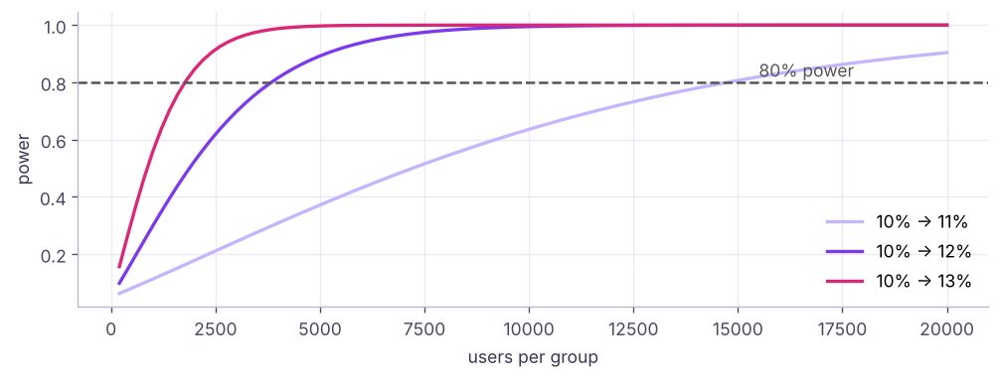
Power curves: the chance of detecting a true lift grows with sample size and effect size.
Analysis step 1: sanity checks
Python
ab = pd.read_csv("ab_test.csv")
counts = ab.group.value_counts().sort_index(); print(counts.to_dict())
srm = stats.chisquare(counts.values) # expected 50/50print(f"sample-ratio mismatch test p = {srm.pvalue:.3f} → {'OK' if srm.pvalue > 0.01 else 'INVESTIGATE: randomisation or logging problem'}")
print("duplicate users:", ab.user_id.duplicated().sum(), "| missing:", ab.isna().sum().sum())
Output
{'A_control': 2000, 'B_new_checkout': 2000}
sample-ratio mismatch test p = 1.000 → OK
duplicate users: 0 | missing: 0
A sample-ratio mismatch (SRM) (for example 52/48 when you planned 50/50, with p < 0.01) signals a bug in assignment or tracking; do not trust results until it is explained.
Analysis step 2: conversion rate
Python
from statsmodels.stats.proportion import proportions_ztest, confint_proportions_2indep
g = ab.groupby("group").agg(users=("user_id", "size"), buyers=("converted", "sum"))
g["conversion"] = g.buyers / g.users
print(g)
z, p = proportions_ztest(g.buyers.values[::-1], g.users.values[::-1]) # B vs A
lo, hi = confint_proportions_2indep(g.buyers.iloc[1], g.users.iloc[1], g.buyers.iloc[0], g.users.iloc[0], compare="diff")
pa, pb = g.conversion.iloc[0], g.conversion.iloc[1]
print(f"absolute lift {100 * (pb - pa):.2f} pts (95% CI {100 * lo:.2f} to {100 * hi:.2f}) | relative lift {(pb - pa) / pa:.1%} | z = {z:.2f}, p = {p:.5f}")
Output
users buyers conversion
group
A_control 2000 198 0.0990
B_new_checkout 2000 273 0.1365
absolute lift 3.75 pts (95% CI 1.75 to 5.75) | relative lift 37.9% | z = 3.68, p = 0.00023
Analysis step 3: revenue per user and order value
Python
a, b = ab[ab.group == "A_control"], ab[ab.group == "B_new_checkout"]
for name, col, fa, fb in [("revenue per user", "order_value", a, b), ("average order value (buyers)", "order_value", a[a.converted == 1], b[b.converted == 1])]:
t = stats.ttest_ind(fb[col], fa[col], equal_var=False)
print(f"{name:30s} A {fa[col].mean():8.1f} | B {fb[col].mean():8.1f} | diff {fb[col].mean() - fa[col].mean():7.1f} | Welch p = {t.pvalue:.4f}")
rng = np.random.default_rng(0)
boot = [rng.choice(b.order_value.values, len(b)).mean() - rng.choice(a.order_value.values, len(a)).mean() for _ inrange(5000)]
print(f"bootstrap 95% CI for revenue-per-user difference: {np.percentile(boot, 2.5):.1f} to {np.percentile(boot, 97.5):.1f}")
Output
revenue per user A 137.5 | B 202.8 | diff 65.3 | Welch p = 0.0000
average order value (buyers) A 1389.3 | B 1485.6 | diff 96.4 | Welch p = 0.0082
bootstrap 95% CI for revenue-per-user difference: 35.5 to 94.9
Revenue per user mixes conversion and order size and has many zeros and a long tail; Welch's t-test (thanks to the CLT) and the bootstrap both work at this sample size.
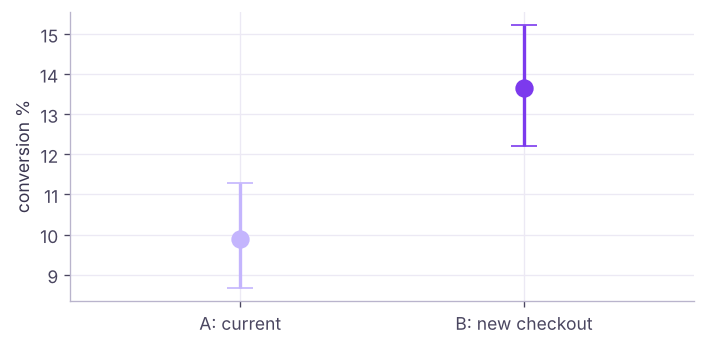
Conversion rate with 95% confidence intervals for each variant.
Analysis step 4: business impact
Python
monthly_users = 300_000
extra_buyers = monthly_users * (pb - pa)
extra_rev = monthly_users * (b.order_value.mean() - a.order_value.mean())
print(f"at {monthly_users:,} users/month: about {extra_buyers:,.0f} extra orders and ₹{extra_rev / 1e5:,.1f} lakh extra revenue per month")
print(f"conservative (lower CI bound of conversion lift): {monthly_users * lo:,.0f} extra orders")
Output
at 300,000 users/month: about 11,250 extra orders and ₹195.8 lakh extra revenue per month
conservative (lower CI bound of conversion lift): 5,263 extra orders
Pitfalls
Pitfall
What goes wrong
Fix
Peeking
Checking daily and stopping at the first p < 0.05 inflates false positives to 20–30%
Fix the sample size; or use sequential tests / always-valid p-values
Too many metrics
Some will be "significant" by chance
One primary metric; adjust others (lesson 5)
Novelty / primacy effects
Users react to change itself, then revert
Run longer; analyse by week
SRM
Broken randomisation or logging
Chi-square check before analysis
Network effects
Treated users affect control users (marketplaces, social)
Cluster or geo randomisation
Simpson's paradox
Mix of segments differs between periods
Randomise; compare within segments
Underpowered tests
"No effect" just means "too small a test"
Power analysis first; report CIs
HARKing
Choosing the hypothesis after seeing results
Pre-register the plan
Python
rng = np.random.default_rng(11); false_wins = 0for sim inrange(400): # A/A tests: there is NO real difference
xa, xb = rng.random(4000) < 0.10, rng.random(4000) < 0.10for day inrange(1, 15): # peek every "day" (≈285 users per group per day)
n = day * 285ifproportions_ztest([xa[:n].sum(), xb[:n].sum()], [n, n])[1] < 0.05: false_wins += 1; breakprint(f"stopping at the first significant daily peek: {false_wins / 400:.0%} false positives (should be 5%)")
Output
stopping at the first significant daily peek: 20% false positives (should be 5%)
Beyond the classic test
CUPED / regression adjustment: use pre-experiment behaviour as a covariate to cut variance (and required sample size) by 20–50%.
Bayesian A/B testing: reports "probability that B beats A" and expected loss; intuitive for stakeholders.
Multi-armed bandits: shift traffic to the winning variant during the test (good for short campaigns, worse for clean inference).
Quasi-experiments when you cannot randomise: difference-in-differences, synthetic control, regression discontinuity, propensity matching.
Experiment: new one-page checkout, 4,000 users, 50/50, no sample-ratio mismatch.
Result: conversion rose from 9.9% to 13.7% (+3.75 points, 95% CI about +1.7 to +5.8; p < 0.001). Revenue per user rose from about ₹138 to ₹203, and buyers' average order value also rose.
Guardrails: check refunds, load time and support tickets before rollout.
Decision: launch B to all users, with a 5% holdout for four weeks to confirm the effect lasts.
Summary
Key takeaways
Randomisation makes A/B tests causal; define the hypothesis, one primary metric, guardrails and the duration before launch.
Power analysis sets the sample size for a minimum detectable effect; small lifts need large samples.
Check sample-ratio mismatch first; analyse conversion with a two-proportion z-test and revenue with Welch's t-test or the bootstrap; report CIs and business impact.
Avoid peeking, metric fishing and underpowered tests; consider CUPED, Bayesian methods and quasi-experiments where appropriate.
Quick quiz6 questions · tap an answer to check it
1. Why randomise users into A and B?
Answer: A. Randomisation balances all other factors on average.
2. What does a power analysis give you before the test?
Answer: B. Typical settings: α = 0.05, power = 0.8.
3. The planned split was 50/50 but you observe 53/47 with SRM p < 0.001. What do you do?
Answer: B. SRM invalidates naive analysis.
4. Why is stopping as soon as p < 0.05 ("peeking") a problem?
Answer: A. Use fixed horizons or sequential methods.
5. Which test suits comparing conversion rates of A and B?
Answer: B. Conversion is a proportion.
6. A test with 300 users per group shows no significant difference. Best conclusion?
Answer: B. Absence of evidence is not evidence of absence.
ExercisePractice
(1) Compute the users per group needed to detect a lift from 13.7% to 15% conversion. (2) Analyse average order value among buyers with a Mann-Whitney test as well. (3) Simulate an A/A test 1,000 times with a fixed horizon and confirm about 5% false positives. (4) Draft a one-paragraph memo for the case where the result had been p = 0.20.
Show solution
Python
print(NormalIndPower().solve_power(proportion_effectsize(0.15, 0.137), alpha=0.05, power=0.8))
print(stats.mannwhitneyu(b[b.converted == 1].order_value, a[a.converted == 1].order_value))
fp = np.mean([proportions_ztest([(rng.random(4000) < .1).sum(), (rng.random(4000) < .1).sum()], [4000, 4000])[1] < .05for _ inrange(1000)]); print(fp)
# Memo: "No significant difference (p = 0.20); CI ranges from −x to +y points, so we cannot rule out a meaningful lift. Extend the test to N users or test a bolder change."
Interview cornerQuestions you may be asked
Q: How would you design an A/B test for a new recommendation widget?
State the hypothesis and primary metric (e.g. revenue per user), guardrails (latency, returns), randomise by user, size it with power analysis, run full weeks, check SRM, analyse with CIs, and decide with business impact.
Q: Your test is significant on day 3. Do you stop?
No: stopping early inflates false positives and novelty effects can fade; finish the planned duration or use a sequential design.
Q: What if you cannot randomise?
Use quasi-experimental methods: difference-in-differences with a comparison group, synthetic control, regression discontinuity or matching, and state the assumptions.
Statistics & Machine Learning · Lesson 7
Introduction to Machine Learning: Types, Business Framing and the ML Lifecycle
What machine learning is and is not, how it differs from rules and statistics, supervised vs unsupervised vs reinforcement learning, regression vs classification vs clustering, turning a business problem into an ML problem, the end-to-end ML lifecycle (CRISP-DM to MLOps), linear vs non-linear models and link functions, and where GenAI fits.
● ML classes 3–4✦ scikit-learn 1.7+ · 2026 practiceBeginner⏱ 100 min
By the end of this lesson you can
Define machine learning and distinguish it from rule-based systems and classical statistics
Classify problems as supervised (regression, classification), unsupervised (clustering, dimensionality reduction) or reinforcement learning
Translate a business question into target, features, unit of prediction, metric and decision
Describe each stage of the ML lifecycle and common failure points
Explain linear vs non-linear models, link functions, and when not to use ML
What is machine learning?
"A computer program is said to learn from experience E with respect to some task T and performance measure P if its performance at T, as measured by P, improves with experience E." (Tom Mitchell)
Instead of writing rules by hand, we give the computer examples (data) and let an algorithm learn the rules (a model) that map inputs to outputs.
Traditional programming vs machine learning.
Statistics
Machine learning
Main goal
Inference: understand relationships, test hypotheses
Prediction: accurate outputs on new data
Typical question
"Does overtime increase attrition, and by how much?"
"Which employees are likely to leave next quarter?"
Model choice
Interpretable, with assumptions
Whatever predicts best (with interpretability as needed)
Validation
p-values, confidence intervals
Held-out test data, cross-validation
They overlap heavily: linear and logistic regression belong to both.
Types of machine learning
The main families of machine learning.
Problem
Target type
Example
Algorithms (this track)
Regression
Number
House price, delivery time, demand
Linear, Ridge/Lasso, trees, boosting
Classification
Category
Churn yes/no, loan default, spam
Logistic, KNN, trees, RF, boosting, SVM, NB
Clustering
None
Customer segments
K-means, hierarchical, DBSCAN
Dimensionality reduction
None
Compress 50 features to 5
PCA
Time-series forecasting
Number over time
Next month's sales
Seasonal naive, ETS, ARIMA, ML with lags
Recommendation / ranking
Ranked list
Products to show
Collaborative filtering, learning to rank
Python
import pandas as pd
h = pd.read_csv("house_prices.csv"); tc = pd.read_csv("telecom_churn.csv")
print("Regression target:", "price_lakh", "| examples:", h.price_lakh.head(3).tolist(), "| features:", [c for c in h.columns if c notin ("house_id", "price_lakh")])
print("Classification target: churn", tc.churn.value_counts().to_dict(), "| features:", [c for c in tc.columns if c notin ("customer_id", "churn")])
Vocabulary: a row is an observation/sample; input columns are features (X, predictors, independent variables); the column to predict is the target (y, label, dependent variable); the learned function is the model; using it on new data is inference/prediction.
From business problem to ML problem
Framing comes before algorithms.
Question
Churn example
What decision will the prediction change?
Which 10% of customers receive a ₹200 retention offer
Unit of prediction
One customer, scored monthly
Target definition
Cancelled within 30 days after the scoring date
Features (only information available at prediction time)
Tenure, contract, charges, support calls in the previous 90 days
Success metric
Recall in the top 10%, net profit of the campaign
Baseline
Current rule: target month-to-month customers with 3+ calls
Constraints
Explainability for the retention team, privacy, weekly batch scoring
Watch outData leakage
Using information that would not be available at prediction time (for example "number of cancellation calls" recorded after the customer decided to leave) gives brilliant test scores and useless production models. Define a clear cut-off date for features and a later window for the label.
When not to use ML
Simple rules work; there is little data or no labels; mistakes are unacceptable and must be explained exactly; the pattern changes faster than you can retrain; or nobody will act on the predictions. Always compare with a simple baseline.
The ML lifecycle
CRISP-DM extended with MLOps: an iterative cycle, not a straight line.
Test-set metrics, error analysis, fairness, business value
metrics, SHAP
Deployment
Batch scoring or API, integration with apps
FastAPI, Docker, cloud ML platforms
Monitoring
Data drift, performance decay, retraining
MLflow, Evidently, dashboards
In practice, most time goes to framing, data preparation and deployment, not to choosing algorithms.
Linear vs non-linear models and link functions
A linear model predicts with a weighted sum of features:
Generalised linear models pass that linear score through a link function so the output fits the target type:
Target
Model
Link (inverse)
Output
Any real number
Linear regression
Identity
ŷ = score
Probability (0–1)
Logistic regression
Logit ⇄ sigmoid 1/(1 + e^(−score))
P(y = 1)
Count (0, 1, 2…)
Poisson regression
Log ⇄ exp(score)
Expected count
The same linear score through three link functions: identity (regression), sigmoid (classification probability) and exp (counts).
Non-linear models (decision trees, random forests, gradient boosting, KNN, neural networks) capture thresholds and interactions automatically, usually at the cost of interpretability.
A linear model draws one straight boundary; a non-linear model can bend around the data.
Overfitting and generalisation (preview)
A model must work on new data. Memorising the training set (overfitting) fails in production; being too simple (underfitting) misses real patterns. We therefore always evaluate on data the model has not seen (lessons 8 and 15).
Where does GenAI fit?
Large language models are trained with self-supervised learning on huge text corpora, then adapted with instruction tuning and reinforcement learning from human feedback. In analytics they complement classical ML: LLMs read and write text, code and SQL; classical models remain best for structured, tabular prediction (churn, credit risk, demand), where gradient boosting usually wins. The GenAI track covers LLMs, RAG and agents.
Summary
Key takeaways
ML learns rules from data; statistics focuses on inference, ML on prediction, with much overlap.
Frame first: decision, unit, target and time windows, leak-free features, metric, baseline.
Lifecycle: business → data → preparation → modelling → evaluation → deployment → monitoring, iteratively.
Linear models use link functions (identity, sigmoid, exp); non-linear models capture thresholds and interactions.
Quick quiz6 questions · tap an answer to check it
1. Predicting next month's sales in rupees is…
Answer: A. The target is a number.
2. Grouping customers into segments without labels is…
Answer: B. No target column.
3. What is data leakage?
Answer: A. It inflates test scores.
4. Which link function does logistic regression use to output a probability?
Answer: B. It maps any score to 0–1.
5. Which stage often takes the most time in real ML projects?
Answer: B. Data work dominates.
6. When might you NOT use ML?
Answer: A. Start with a baseline.
ExerciseFrame these problems
For each, state the ML type, target, unit, two leak-free features, the metric and the action: (1) predicting loan default at application; (2) forecasting daily units for each store; (3) grouping 5,000 products by sales pattern; (4) flagging suspicious card transactions in real time.
Show solution
(1) Classification; default within 12 months; applicant; income, debt-to-income; recall/precision at the approval threshold and expected loss; approve/decline/price. (2) Regression/forecasting; units per store-day; store-day; lagged sales, calendar/holidays; MAPE/WAPE; stock orders. (3) Clustering; none; product; weekly sales profile, price; silhouette + business sense; assortment strategy. (4) Classification (imbalanced); fraud label; transaction; amount vs customer average, merchant risk; precision/recall at alert capacity; block or step-up authentication.
Interview cornerQuestions you may be asked
Q: Explain machine learning to a non-technical person.
Instead of writing rules ourselves, we show the computer many past examples with the right answers, and it learns patterns it can apply to new cases, like an employee learning from experience.
Q: Supervised vs unsupervised learning?
Supervised learning uses labelled examples to predict a target; unsupervised learning finds structure such as groups or compressed representations without labels.
Q: How do you start an ML project?
Clarify the business decision and success metric, define the target and prediction time, check data availability and leakage, set a simple baseline, then iterate on models.
Statistics & Machine Learning · Lesson 8
The scikit-learn Workflow: Train/Test Split, Baselines, Pipelines and Saving Models
Learn the standard machine-learning workflow in scikit-learn. The estimator API (fit, predict, transform), splitting data into train, validation and test sets with stratification and time order, baselines, ColumnTransformer and Pipeline to avoid leakage, comparing models, and saving and loading a trained pipeline.
● ML class 4✦ scikit-learn 1.7+Intermediate⏱ 110 min
By the end of this lesson you can
Use the fit / predict / predict_proba / transform / score API consistently
Split data into train and test (stratified, time-based) and explain why the test set is touched once
Build dummy baselines and compare real models against them
Combine preprocessing and a model in a Pipeline with ColumnTransformer
Save, load and use a trained pipeline on new data
The estimator API
Every scikit-learn model follows the same pattern, which makes swapping algorithms easy.
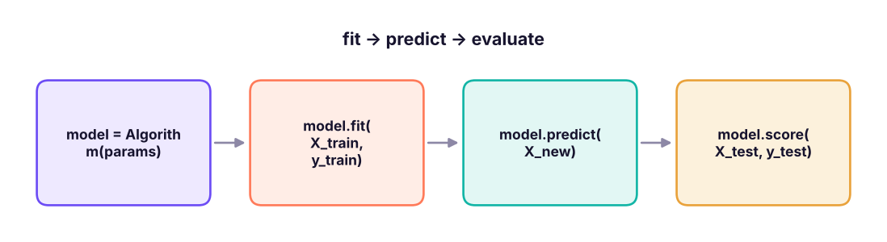
One consistent interface for every estimator.
Method
Available on
Does
fit(X, y)
Every estimator
Learns parameters from training data
predict(X)
Models
Predicted labels or values
predict_proba(X)
Most classifiers
Class probabilities
transform(X)
Transformers (scalers, encoders, PCA)
Converts features using fitted parameters
fit_transform(X)
Transformers
Fit then transform (training data only!)
score(X, y)
Models
Default metric (accuracy or R²)
get_params() / set_params()
All
Hyperparameters
X is a 2-D table of features (DataFrame or array, shape n_samples × n_features); y is a 1-D target.
Train/test split
We judge a model on data it has never seen. Hold out a test set before doing anything else.
Python
import pandas as pd, numpy as np
from sklearn.model_selection import train_test_split
tc = pd.read_csv("telecom_churn.csv")
X = tc.drop(columns=["customer_id", "churn", "total_charges"]) # total_charges ≈ tenure × monthly: redundant
y = (tc["churn"] == "Yes").astype(int)
X_train, X_test, y_train, y_test = train_test_split(X, y, test_size=0.2, stratify=y, random_state=42)
print(X_train.shape, X_test.shape, f"churn rate train {y_train.mean():.3f} | test {y_test.mean():.3f}")
Typical data splits. The test set is a final exam: use it once, at the end.
Option
Use
test_size=0.2
Hold out 20%
stratify=y
Keep the class balance the same in both sets (classification)
random_state=42
Reproducible split
Time-based split
For time series and anything predicted in the future: train on the past, test on the most recent period
Group split (GroupShuffleSplit)
Keep all rows of a customer/store in one set
Watch outNever tune on the test set
If you try many models and keep the one with the best test score, the test score is no longer an unbiased estimate. Choose with cross-validation on the training set (lesson 15); look at the test set once.
Baselines
A model is only useful if it beats a simple baseline.
Python
from sklearn.dummy import DummyClassifier, DummyRegressor
from sklearn.metrics import accuracy_score, recall_score
base = DummyClassifier(strategy="most_frequent").fit(X_train, y_train)
pred = base.predict(X_test)
print(f"always 'no churn': accuracy {accuracy_score(y_test, pred):.3f} | recall of churners {recall_score(y_test, pred):.3f}")
rule = ((X_test.contract == "Month-to-month") & (X_test.tenure_months <= 12)).astype(int) # business rule from the EDAprint(f"rule 'new month-to-month': accuracy {accuracy_score(y_test, rule):.3f} | recall {recall_score(y_test, rule):.3f}")
Save the whole pipeline, note the library versions (sklearn.__version__), and keep a model card (data, date, metrics, intended use). Load models only from sources you trust: joblib/pickle files can run code.
The workflow, end to end
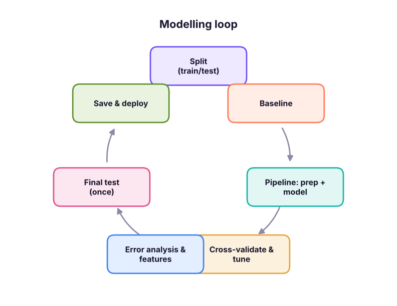
The modelling loop you will repeat in every lesson of this track.
Summary
Key takeaways
Every estimator uses fit, then predict/predict_proba or transform; X is 2-D, y is 1-D.
Split first (stratified for classification, by time for forecasting); the test set is used once.
Always compare with a baseline (DummyClassifier, DummyRegressor, or a business rule).
ColumnTransformer + Pipeline apply the right preprocessing to each column type and prevent leakage.
Save the fitted pipeline with joblib and document versions and metrics.
Quick quiz6 questions · tap an answer to check it
1. Why use stratify=y in train_test_split?
Answer: A. Important for imbalanced classes.
2. Where should a StandardScaler learn its mean and standard deviation?
Answer: B. Fitting on all data leaks test information.
3. A churn model has 74% accuracy and churn is 26%. What can you say?
Answer: B. Compare with a baseline.
4. What does ColumnTransformer do?
Answer: A. e.g. scale numbers, one-hot encode categories.
5. Which split suits forecasting next month's demand?
Answer: B. Random splits leak the future into training.
6. What should you save for deployment?
Answer: B. One object turns raw data into predictions.
ExercisePractice
(1) Build a pipeline for hr_employees.csv that predicts attrition with logistic regression; compare it with a dummy baseline using ROC-AUC. (2) Add job_title as a categorical feature: does AUC change? (3) Save and reload the pipeline and score two made-up employees.
Show solution
Python
hr = pd.read_csv("hr_employees.csv")
y2 = (hr.attrition == "Yes").astype(int); X2 = hr.drop(columns=["emp_id", "attrition", "hire_date"])
nums = X2.select_dtypes("number").columns.tolist(); cats = [c for c in X2.columns if c notin nums]
p2 = Pipeline([("prep", ColumnTransformer([("n", StandardScaler(), nums), ("c", OneHotEncoder(handle_unknown="ignore"), cats)])), ("m", LogisticRegression(max_iter=2000))])
a, b, c, d = train_test_split(X2, y2, test_size=.2, stratify=y2, random_state=0)
print(roc_auc_score(d, p2.fit(a, c).predict_proba(b)[:, 1]), roc_auc_score(d, DummyClassifier().fit(a, c).predict_proba(b)[:, 1]))
Interview cornerQuestions you may be asked
Q: Why do we need a train/test split?
To estimate how the model performs on new, unseen data; training performance is optimistic because the model has seen those examples.
Q: What is a pipeline and why use one?
A chain of preprocessing steps and a model trained and applied as one object; it prevents leakage, simplifies tuning and makes deployment reliable.
Q: What is the difference between fit_transform and transform?fit_transform learns parameters (e.g. mean, categories) and applies them, used on training data; transform applies already-learned parameters, used on validation, test and new data.
Statistics & Machine Learning · Lesson 9
Data Preprocessing and Feature Engineering for ML
Prepare features that models can learn from. Imputation strategies, outlier handling, encoding categorical variables (one-hot, ordinal, target encoding), scaling (standard, min-max, robust), transformations (log, Box-Cox/Yeo-Johnson), binning, interactions and polynomial features, date and text features, and feature selection, all inside leak-free pipelines.
● ML class 6✦ scikit-learn 1.7+Intermediate⏱ 120 min
By the end of this lesson you can
Impute missing values with simple, group-aware and model-based strategies and add missing indicators
Encode nominal and ordinal categories correctly, including high-cardinality columns
Choose a scaler and know which algorithms need scaling
Engineer features from numbers, dates, text and domain knowledge
Select features with filter, wrapper and embedded methods without leaking test data
Why preprocessing matters
Algorithms only see numbers. How you represent the data often matters more than which algorithm you choose ("better data beats fancier models").
The preprocessing toolbox, applied inside a pipeline.
Missing values
Python
import pandas as pd, numpy as np
from sklearn.impute import SimpleImputer, KNNImputer
from sklearn.experimental import enable_iterative_imputer # noqa: F401from sklearn.impute import IterativeImputer
h = pd.read_csv("house_prices.csv")
num = h[["area_sqft", "bedrooms", "bathrooms", "age_years", "price_lakh"]]
mask = num.area_sqft.isna(); print("missing area:", mask.sum())
for name, imp in [("median", SimpleImputer(strategy="median")), ("KNN (5 neighbours)", KNNImputer(n_neighbors=5)), ("iterative (regression)", IterativeImputer(random_state=0))]:
filled = pd.DataFrame(imp.fit_transform(num), columns=num.columns)
print(f"{name:24s} imputed areas: mean {filled.loc[mask, 'area_sqft'].mean():7.0f}, sd {filled.loc[mask, 'area_sqft'].std():6.0f}")
print("SimpleImputer(add_indicator=True) adds a column:", SimpleImputer(strategy="median", add_indicator=True).fit(num[["area_sqft"]]).get_feature_names_out().tolist())
Output
missing area: 25
median imputed areas: mean 1240, sd 0
KNN (5 neighbours) imputed areas: mean 1396, sd 294
iterative (regression) imputed areas: mean 1384, sd 310
SimpleImputer(add_indicator=True) adds a column: ['area_sqft', 'missingindicator_area_sqft']
The median fills every gap with one value (sd 0); KNN and iterative imputers use the other columns (bedrooms, price), so they produce realistic, varied values. In real projects compare strategies with cross-validation, and never use the target to impute features at prediction time.
Encoding categorical variables
Python
from sklearn.preprocessing import OneHotEncoder, OrdinalEncoder, TargetEncoder
hr = pd.read_csv("hr_employees.csv")
print(hr.education.unique().tolist(), hr.department.nunique(), "departments |", hr.job_title.nunique(), "job titles")
oh = OneHotEncoder(handle_unknown="ignore", sparse_output=False).fit(hr[["department"]])
print("one-hot:", oh.get_feature_names_out().tolist())
order = [["Diploma", "Bachelor's", "Master's", "PhD"]]
present = [e for e in order[0] if e inset(hr.education)]
oe = OrdinalEncoder(categories=[present]).fit(hr[["education"]])
print("ordinal:", dict(zip(present, oe.transform(pd.DataFrame({"education": present})).ravel())))
y = (hr.attrition == "Yes").astype(int)
te = TargetEncoder(target_type="binary", random_state=0).fit(hr[["job_title"]], y)
print("target encoding (smoothed attrition rate per job title, first 4):", dict(zip(te.categories_[0][:4], te.encodings_[0][:4].round(3))))
print("frequency encoding:", hr.job_title.map(hr.job_title.value_counts(normalize=True)).round(3).head(3).tolist())
One column per category; handle_unknown="ignore"; drop="first" for linear models if needed
Ordinal
Ordered categories (education, size S/M/L)
Give the order explicitly
Target encoding
High-cardinality nominal (job title, city, merchant)
Uses the target: must be cross-fitted (sklearn's TargetEncoder does this)
Frequency / count
High cardinality
Simple, leak-free
Hashing, embeddings
Very high cardinality (IDs, text)
Fixed size; embeddings in deep learning
Watch outLabel encoding nominal data
Mapping cities to 0, 1, 2… tells linear models and KNN that "Pune (2) > Delhi (1)", a false order. Use one-hot encoding for nominal variables (tree models tolerate ordinal codes better).
Scaling
Python
from sklearn.preprocessing import StandardScaler, MinMaxScaler, RobustScaler
inc = hr[["monthly_income"]]
out = pd.DataFrame({"raw": inc.monthly_income})
for name, sc in [("standard", StandardScaler()), ("minmax", MinMaxScaler()), ("robust", RobustScaler())]: out[name] = sc.fit_transform(inc).ravel()
print(out.describe().loc[["mean", "std", "min", "50%", "max"]].round(2))
Output
raw standard minmax robust
mean 82610.67 -0.00 0.24 0.18
std 31145.80 1.00 0.17 0.71
min 39167.00 -1.40 0.00 -0.81
50% 74708.50 -0.25 0.20 0.00
max 218417.00 4.36 1.00 3.28
Scaler
Result
Use
StandardScaler
mean 0, sd 1
Default for linear models, SVM, PCA, neural networks
MinMaxScaler
range 0–1
Bounded inputs (neural networks, images)
RobustScaler
median 0, IQR 1
Data with outliers
Needs scaling: KNN, K-means, SVM, PCA, regularised linear/logistic regression, neural networks, gradient descent. Does not: decision trees, random forests, gradient boosting (they split on thresholds).
Transformations
Log and Yeo-Johnson transforms make right-skewed income closer to symmetric.
Log transforms help linear models with multiplicative effects (prices, incomes) and can be applied to the target too (TransformedTargetRegressor). Binning (KBinsDiscretizer, pd.cut) trades detail for robustness and interpretability.
Feature engineering
Good features encode domain knowledge the algorithm cannot easily find.
The three methods disagree. That is normal: they measure different things. Random-forest (impurity) importances also favour continuous features with many distinct values, so check them with permutation importance (lesson 27).
Method
How
Pros / cons
Filter
Score each feature (correlation, chi-square, mutual information)
Fast; ignores interactions
Wrapper
Search subsets with a model (RFE, forward selection)
Strong; slow, risk of overfitting
Embedded
Selection during training (Lasso L1, tree importances)
Efficient; model-specific
Do feature selection inside cross-validation (in the pipeline) so the test data never influences which features are chosen.
Answer: C. Trees split on thresholds, unaffected by scale.
3. Why must target encoding be cross-fitted?
Answer: A. sklearn's TargetEncoder handles this internally.
4. What does RobustScaler use?
Answer: B. Robust to outliers.
5. Where should feature selection happen?
Answer: B. Otherwise test information leaks into the choice.
6. Which is an interaction feature?
Answer: B. It combines two features.
ExercisePractice (house_prices.csv)
(1) Engineer price_per_sqft, rooms = bedrooms + bathrooms, is_new = age_years <= 5. Which correlate most with price? (Careful: price_per_sqft uses the target, so it cannot be a feature!) (2) Build a pipeline with KNN imputation, one-hot city, standard scaling and Ridge regression; report 5-fold R². (3) Try a log-transformed target with TransformedTargetRegressor.
Q: How do you handle categorical variables with 1,000 levels?
Target encoding (cross-fitted), frequency encoding, grouping rare levels into "Other", hashing, or learned embeddings; tree-based libraries like CatBoost handle them natively.
Q: Normalisation vs standardisation?
Normalisation (min-max) rescales to 0–1; standardisation centres to mean 0 and sd 1. Use standardisation by default; min-max for bounded inputs.
Q: Give an example of a feature you engineered that helped.
Use STAR: e.g. "days since last purchase" and "spend in the last 30 days vs previous 30" for churn, which raised recall in the top decile from X to Y.
Statistics & Machine Learning · Lesson 10
Linear Regression: Fitting, Interpreting, Assumptions and Diagnostics
Predict a number and explain it. Simple and multiple linear regression with ordinary least squares, interpreting coefficients, dummy variables and log targets, R², adjusted R², RMSE and MAE, the LINE assumptions and residual diagnostics, multicollinearity and VIF, outliers and influence, with statsmodels for inference and scikit-learn for prediction on the house-price data.
● Python class 16 · ML class 4✦ statsmodels 0.1x · scikit-learn 1.7+Intermediate⏱ 130 min
By the end of this lesson you can
Fit simple and multiple linear regression with statsmodels and scikit-learn
Interpret intercepts, slopes, dummy variables and log-transformed coefficients
Evaluate models with R², adjusted R², MAE, RMSE and MAPE on test data
Check linearity, independence, normality and equal variance of residuals
Detect multicollinearity with VIF and influential points with Cook's distance
Simple linear regression
Find the straight line that best predicts y from x:
Ordinary least squares (OLS) chooses β₀ and β₁ to minimise the sum of squared residuals, where a residual is actual − predicted.
Python
import pandas as pd, numpy as np
import statsmodels.formula.api as smf
h = pd.read_csv("house_prices.csv").dropna(subset=["area_sqft"])
pps = h.price_lakh * 1e5 / h.area_sqft # price per sq ft
h = h[pps.between(pps.median() / 3, pps.median() * 3)] # drop 4 impossible prices (data-entry errors found in EDA)print(len(h), "houses")
m1 = smf.ols("price_lakh ~ area_sqft", data=h).fit()
print(m1.params.round(4).to_dict(), "| R² =", round(m1.rsquared, 3))
b0, b1 = m1.params
print(f"price ≈ {b0:.2f} + {b1:.4f} × area → each extra 100 sq ft adds about ₹{100 * b1:.1f} lakh")
print("prediction for 1,500 sq ft:", round(m1.predict(pd.DataFrame({"area_sqft": [1500]}))[0], 1), "lakh")
Output
1171 houses
{'Intercept': -7.0873, 'area_sqft': 0.0696} | R² = 0.827
price ≈ -7.09 + 0.0696 × area → each extra 100 sq ft adds about ₹7.0 lakh
prediction for 1,500 sq ft: 97.3 lakh
The least-squares line and the residuals (vertical distances) it minimises, for 40 sample houses.
Change in predicted price for +1 unit of the feature, holding the others constant
std err
Uncertainty of the coefficient
t, P>|t|
Test of H₀: coefficient = 0
[0.025 0.975]
95% confidence interval
C(city)[T.X]
Dummy variable: difference from the reference city (the first alphabetically)
Python
coef = m2.params; ci = m2.conf_int()
for f in ["area_sqft", "age_years", "distance_to_center_km", "parking"]:
print(f"{f:22s} {coef[f]:+8.3f} lakh per unit (95% CI {ci.loc[f, 0]:+.3f} to {ci.loc[f, 1]:+.3f}), p = {m2.pvalues[f]:.3g}")
ref = sorted(h.city.unique())[0]
print(f"city effects vs {ref}:", {k.split('T.')[1][:-1]: round(v, 1) for k, v incoef.items() ifk.startswith("C(city)")})
Output
area_sqft +0.069 lakh per unit (95% CI +0.067 to +0.070), p = 0
age_years -0.422 lakh per unit (95% CI -0.473 to -0.371), p = 2.69e-53
distance_to_center_km -0.199 lakh per unit (95% CI -0.271 to -0.127), p = 7.76e-08
parking +0.510 lakh per unit (95% CI -0.446 to +1.466), p = 0.296
city effects vs Bengaluru: {'Chennai': -24.3, 'Hyderabad': -15.7, 'Pune': -20.1}
Coefficients are associations conditional on the other features, not proof that renovating (changing age) would cause that price change.
Log target: percentage effects
Prices are right-skewed and effects are often multiplicative. Modelling log(price) turns coefficients into approximate percentage effects.
Python
m3 = smf.ols("np.log(price_lakh) ~ np.log(area_sqft) + bedrooms + bathrooms + age_years + distance_to_center_km + parking + C(city)", data=h).fit()
print(f"elasticity: +1% area → +{m3.params['np.log(area_sqft)']:.2f}% price | each year of age → {100 * (np.exp(m3.params['age_years']) - 1):+.2f}% | R² (log scale) {m3.rsquared:.3f}")
Output
elasticity: +1% area → +1.12% price | each year of age → -0.66% | R² (log scale) 0.927
largest Cook's distances: [0.011 0.009 0.009] | threshold 4/n = 0.0034
city area_sqft bedrooms price_lakh
464 Bengaluru 1780.0 3 162.4
113 Hyderabad 1430.0 2 66.8
863 Pune 470.0 1 37.3
Investigate influential points: data errors should be fixed; genuine extremes may need robust methods (Huber regression) or separate treatment.
scikit-learn version
Python
from sklearn.linear_model import LinearRegression
from sklearn.compose import make_column_transformer
from sklearn.preprocessing import OneHotEncoder
from sklearn.pipeline import make_pipeline
feats = ["area_sqft", "bedrooms", "bathrooms", "age_years", "distance_to_center_km", "parking", "city"]
pipe = make_pipeline(make_column_transformer((OneHotEncoder(drop="first"), ["city"]), remainder="passthrough"), LinearRegression())
pipe.fit(train[feats], train.price_lakh)
print(f"sklearn test R² {pipe.score(test[feats], test.price_lakh):.3f} (same model as statsmodels: {np.isclose(pipe.score(test[feats], test.price_lakh), r2_score(test.price_lakh, p_test))})")
Output
sklearn test R² 0.936 (same model as statsmodels: True)
Use statsmodels for inference (p-values, CIs, diagnostics) and scikit-learn for prediction pipelines, cross-validation and deployment.
Summary
Key takeaways
OLS minimises squared residuals; coefficients are the change in y per unit of x, holding other features constant.
Dummy variables compare categories with a reference; log targets give percentage effects.
Evaluate on test data with MAE, RMSE, MAPE and R²; adjusted R² penalises extra features.
Check LINE assumptions with residual plots, Q-Q plots, Breusch-Pagan and Durbin-Watson; use robust standard errors or transformations when needed.
VIF detects multicollinearity; Cook's distance finds influential points. Coefficients show association, not causation.
Quick quiz6 questions · tap an answer to check it
1. What does OLS minimise?
Answer: B. Hence "least squares".
2. The coefficient of age_years is −0.6. Interpretation?
Answer: A. Conditional association, in target units.
3. Residuals fan out as fitted values grow. Which assumption is violated?
Answer: C. Try log(y) or robust standard errors.
4. What does a VIF of 12 indicate?
Answer: A. Coefficients become unstable.
5. Test R² is 0.90 and train R² is 0.91. What does that suggest?
Answer: A. Similar scores on unseen data are good news.
6. Why use a log target for prices?
Answer: A. It also stabilises variance.
ExercisePractice
(1) Add area_sqft:C(city) interaction: does the price per sq ft differ by city? (2) Compare test MAE of the plain and log-target models (back-transform with np.exp). (3) Remove the feature with the highest VIF and compare adjusted R². (4) Plot actual vs predicted on the test set.
Q: What are the assumptions of linear regression?
Linearity, independence of errors, normality of residuals (for inference), equal variance of residuals, and no perfect multicollinearity.
Q: R² vs adjusted R²?
R² never decreases when you add features; adjusted R² penalises the number of features, so it can drop when a feature adds little.
Q: How do you interpret a coefficient in a log-log model?
As an elasticity: a 1% change in x is associated with a β% change in y.
Statistics & Machine Learning · Lesson 11
Gradient Descent: How Models Learn (Built from Scratch in NumPy)
Understand the optimisation engine behind linear regression, logistic regression and neural networks. Cost functions, gradients and the update rule, implementing batch gradient descent for linear regression in NumPy, the learning rate, feature scaling, stochastic and mini-batch variants, convergence checks, and comparison with the closed-form OLS solution and scikit-learn's SGDRegressor.
● ML class 5✦ NumPy 2 · scikit-learn 1.7+Intermediate⏱ 110 min
By the end of this lesson you can
Define a cost function (MSE) and explain what its gradient tells us
Implement batch gradient descent for linear regression with NumPy
Choose a learning rate and diagnose divergence and slow convergence with cost curves
Explain why feature scaling speeds up gradient descent
Compare batch, stochastic and mini-batch gradient descent and use SGDRegressor
Learning = minimising a cost
A model has parameters (weights). Learning means finding the weights that make a cost function as small as possible. For linear regression the usual cost is the mean squared error:
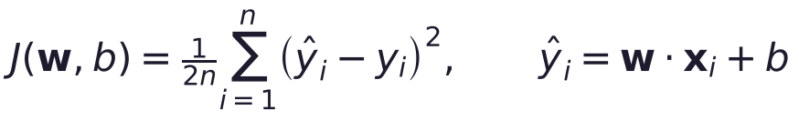
(The ½ simply makes the derivative tidier.) OLS has a formula for the minimum, but most models (logistic regression, neural networks) do not, so we search for it.
The idea: walk downhill
Imagine standing on a foggy hillside: feel the slope under your feet and step downhill; repeat until the ground is flat. The gradient is the slope; we step in the opposite direction.
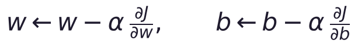
α is the learning rate (step size). For linear regression the gradients are:
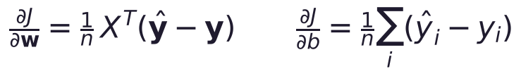
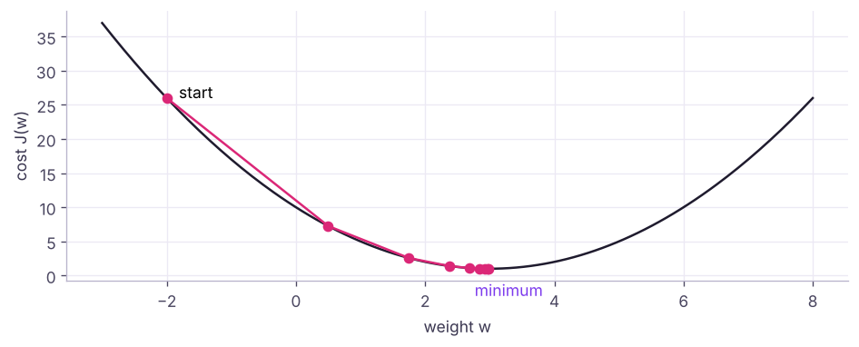
Gradient descent on a one-parameter cost curve: each step moves against the slope; steps shrink as the slope flattens near the minimum.
Implementation in NumPy
Python
import pandas as pd
h = pd.read_csv("house_prices.csv").dropna(subset=["area_sqft"])
pps = h.price_lakh * 1e5 / h.area_sqft; h = h[pps.between(pps.median() / 3, pps.median() * 3)]
feats = ["area_sqft", "bedrooms", "bathrooms", "age_years", "distance_to_center_km"]
X_raw = h[feats].to_numpy(float); y = h.price_lakh.to_numpy(float)
mu, sd = X_raw.mean(axis=0), X_raw.std(axis=0); X = (X_raw - mu) / sd # standardise featuresdefgradient_descent(X, y, lr=0.1, epochs=300):
n, p = X.shape; w, b = np.zeros(p), 0.0; history = []
for _ inrange(epochs):
y_hat = X @ w + b
err = y_hat - y
history.append((err ** 2).mean() / 2) # cost J
w -= lr * (X.T @ err) / n # gradient step for weights
b -= lr * err.mean() # gradient step for biasreturn w, b, history
w, b, hist = gradient_descent(X, y)
print("cost: start", round(hist[0], 1), "→ after 10", round(hist[9], 1), "→ end", round(hist[-1], 2))
print("weights (per 1 sd of each feature):", dict(zip(feats, w.round(2).tolist())), "| bias", round(b, 2))
Output
cost: start 3604.0 → after 10 592.8 → end 72.59
weights (per 1 sd of each feature): {'area_sqft': 26.94, 'bedrooms': 1.29, 'bathrooms': -0.48, 'age_years': -3.81, 'distance_to_center_km': -1.12} | bias 79.25
Check against the exact OLS solution
Python
X1 = np.c_[np.ones(len(X)), X]
theta = np.linalg.lstsq(X1, y, rcond=None)[0] # closed form (normal equation)print("OLS bias", theta[0].round(2), "weights", theta[1:].round(2))
print("max difference from gradient descent:", np.abs(theta[1:] - w).max().round(4))
w_orig = w / sd; b_orig = b - (w_orig * mu).sum() # convert back to original unitsprint(f"per sq ft: {w_orig[0]:.4f} lakh (≈ ₹{w_orig[0] * 1e5:,.0f}) | per year of age: {w_orig[3]:.3f} lakh")
Output
OLS bias 79.25 weights [26.98 1.16 -0.38 -3.81 -1.12]
max difference from gradient descent: 0.1303
per sq ft: 0.0677 lakh (≈ ₹6,769) | per year of age: -0.442 lakh
Gradient descent reached the same answer as the exact formula. The normal equation θ = (XᵀX)⁻¹Xᵀy is fine for a few thousand features, but gradient descent scales to millions of rows and parameters and to models without closed-form solutions.
The learning rate
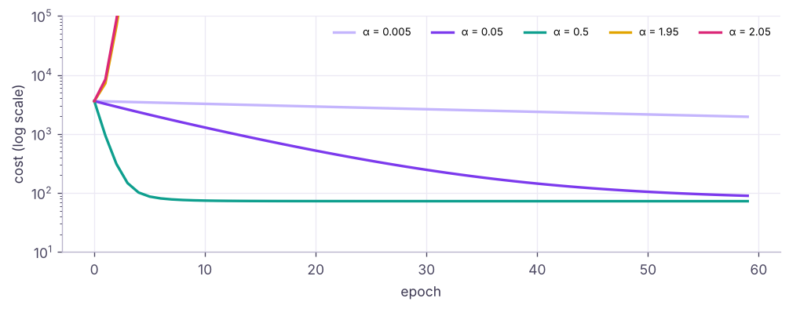
Cost curves for different learning rates: too small is slow, a good rate converges quickly, too large diverges.
Symptom
Cause
Fix
Cost falls very slowly
α too small
Increase α (×3 steps: 0.001, 0.003, 0.01…)
Cost goes up or oscillates, becomes NaN
α too large
Decrease α
Cost flattens high
Stuck / underfitting / unscaled features
Scale features, more epochs, better model
Plot the cost every time: it should go down and flatten.
Why scale features?
Python
best = ((X1 @ theta - y) ** 2).mean() / 2# the lowest possible cost (OLS)withnp.errstate(all="ignore"):
for name, Xs, lr in [("raw features", X_raw, 1e-7), ("raw features", X_raw, 1e-6), ("standardised", X, 0.1)]:
_, _, hh = gradient_descent(Xs, y, lr=lr, epochs=300)
gap = "diverged"ifnotnp.isfinite(hh[-1]) or hh[-1] > 1e6 elsef"{100 * (hh[-1] / best - 1):.1f}% above the optimum"print(f"{name:13s} lr={lr:<6} cost after 300 epochs: {gap}")
Output
raw features lr=1e-07 cost after 300 epochs: 14.0% above the optimum
raw features lr=1e-06 cost after 300 epochs: 13.3% above the optimum
standardised lr=0.1 cost after 300 epochs: 0.0% above the optimum
With raw features, area (hundreds to thousands) and bedrooms (1–5) differ hugely in scale, so the cost surface is a long narrow valley: a learning rate small enough for area is far too small for bedrooms. Standardising makes the valley round, so one learning rate suits all weights.
Batch, stochastic and mini-batch
Variant
Gradient from
Pros
Cons
Batch GD
All n rows each step
Smooth, exact
Slow for big data
Stochastic GD (SGD)
One random row
Fast updates, escapes shallow minima
Noisy
Mini-batch GD
32–1,024 rows
Best of both; GPU friendly
Batch size to tune
Python
defminibatch_gd(X, y, lr=0.05, epochs=20, batch=32, seed=0):
rng = np.random.default_rng(seed); n, p = X.shape; w, b = np.zeros(p), 0.0; costs = []
for _ inrange(epochs):
idx = rng.permutation(n)
for start inrange(0, n, batch):
j = idx[start:start + batch]; err = X[j] @ w + b - y[j]
w -= lr * X[j].T @ err / len(j); b -= lr * err.mean()
costs.append(((X @ w + b - y) ** 2).mean() / 2)
return w, b, costs
wm, bm, cm = minibatch_gd(X, y)
print("mini-batch cost per epoch:", [round(float(c), 1) for c in cm[:5]], "...", round(float(cm[-1]), 2), "| weights close to OLS:", np.allclose(wm, theta[1:], atol=0.5))
Output
mini-batch cost per epoch: [170.3, 79.1, 74.1, 73.5, 73.0] ... 72.62 | weights close to OLS: True
Deep learning uses mini-batch gradient descent with improved optimisers: momentum (keeps velocity), RMSProp and Adam (adaptive learning rates per parameter), plus learning-rate schedules.
scikit-learn: SGDRegressor
Python
from sklearn.linear_model import SGDRegressor, LinearRegression
from sklearn.pipeline import make_pipeline
from sklearn.preprocessing import StandardScaler
from sklearn.model_selection import train_test_split
Xtr, Xte, ytr, yte = train_test_split(h[feats], y, test_size=0.2, random_state=0)
sgd = make_pipeline(StandardScaler(), SGDRegressor(learning_rate="invscaling", eta0=0.01, max_iter=2000, tol=1e-6, random_state=0)).fit(Xtr, ytr)
ols = make_pipeline(StandardScaler(), LinearRegression()).fit(Xtr, ytr)
print(f"test R²: SGDRegressor {sgd.score(Xte, yte):.4f} | LinearRegression {ols.score(Xte, yte):.4f} | SGD epochs used {sgd[-1].n_iter_}")
Output
test R²: SGDRegressor 0.8513 | LinearRegression 0.8514 | SGD epochs used 23
SGDRegressor/SGDClassifier also support partial_fit for data that arrives in streams or does not fit in memory, and penalties (L2, L1, elastic net) for regularisation.
Where gradient descent appears
Logistic regression (minimising log loss, lesson 13), neural networks and LLMs (backpropagation computes gradients for billions of weights, lesson 26), gradient boosting (fits each new tree to the gradient of the loss, lesson 19), and matrix factorisation in recommenders.
Summary
Key takeaways
Learning = minimising a cost function; gradient descent repeatedly steps against the gradient: w ← w − α·∂J/∂w.
For linear regression: gradient = Xᵀ(ŷ − y)/n; it converges to the same solution as OLS.
The learning rate controls step size: too small is slow, too large diverges; always plot the cost.
Scale features so one learning rate suits all weights.
Batch, stochastic and mini-batch variants trade accuracy of each step for speed; Adam and momentum power deep learning.
Quick quiz6 questions · tap an answer to check it
1. In the update w ← w − α·∂J/∂w, what is α?
Answer: A. It is a hyperparameter you choose.
2. The cost increases every epoch and becomes NaN. Most likely cause?
Answer: B. Steps overshoot the minimum.
3. Why standardise features before gradient descent?
Answer: A. Scaling makes one learning rate work for all weights.
4. What does mini-batch gradient descent use for each update?
Answer: C. Common sizes: 32–512.
5. Gradient descent and the normal equation on the same linear regression should give…
Answer: A. Both minimise the same convex cost.
6. Which algorithm fits each new tree to the gradient of the loss?
Answer: B. Hence the name.
ExercisePractice
(1) Add an early-stopping rule: stop when the cost improves by less than 0.001. How many epochs are needed at α = 0.1? (2) Implement gradient descent for a model with only area_sqft and plot the fitted line. (3) Try mini-batch sizes 8, 64 and 512 and compare the final cost after 10 epochs.
Show solution
Python
defgd_early(X, y, lr=0.1, tol=1e-3, max_epochs=10_000):
n, p = X.shape; w, b = np.zeros(p), 0.0; prev = np.inf
for e inrange(max_epochs):
err = X @ w + b - y; cost = (err ** 2).mean() / 2if prev - cost < tol: return w, b, e
prev = cost; w -= lr * X.T @ err / n; b -= lr * err.mean()
return w, b, max_epochs
print(gd_early(X, y)[2])
w1, b1, _ = gradient_descent(X[:, [0]], y)
for bs in (8, 64, 512): print(bs, minibatch_gd(X, y, batch=bs, epochs=10)[2][-1])
Interview cornerQuestions you may be asked
Q: Explain gradient descent intuitively.
Start with random weights, compute how wrong the model is, find the direction that reduces the error fastest (the negative gradient), take a small step, and repeat until the error stops falling.
Q: Batch vs stochastic gradient descent?
Batch uses all data per step (stable, slow); stochastic uses one example (fast, noisy); mini-batch is the practical compromise.
Q: Can gradient descent get stuck?
For convex costs like linear and logistic regression there is one global minimum. For neural networks it can land in local minima or saddle points; momentum, Adam and random restarts help.
Statistics & Machine Learning · Lesson 12
Overfitting, Polynomial Regression and Regularisation (Ridge, Lasso, Elastic Net)
See overfitting and underfitting happen, learn the bias-variance trade-off with polynomial regression, and control model complexity with L2 (Ridge), L1 (Lasso) and Elastic Net penalties, including choosing the penalty strength with cross-validation, feature selection with Lasso, and learning curves.
● ML class 6✦ scikit-learn 1.7+Intermediate⏱ 110 min
By the end of this lesson you can
Recognise underfitting and overfitting from train vs test errors and plots
Explain the bias-variance trade-off and how model complexity affects it
Fit polynomial regression and control its degree
Apply Ridge, Lasso and Elastic Net and tune alpha with RidgeCV/LassoCV
Use learning and validation curves to decide between more data and a different model
Underfitting and overfitting
Polynomial models of degree 1, 4 and 15 on the same noisy data. Degree 1 underfits, degree 4 fits well, degree 15 chases noise.
Underfitting
Good fit
Overfitting
Training error
High
Low
Very low
Test error
High
Low
High
Cause
Model too simple, missing features
Model too complex, too little data, leakage
Fix
More features, more flexible model, less regularisation
More data, simpler model, regularisation, feature selection, early stopping
The bias-variance trade-off
Bias is the error from wrong assumptions (a line for a curve). Variance is the error from sensitivity to the particular training sample. Total expected error = bias² + variance + irreducible noise.
Python
from sklearn.metrics import mean_squared_error
x_test = rng.uniform(0, 1, 500); y_test = np.sin(2 * np.pi * x_test) + rng.normal(0, .25, 500)
for d in (1, 2, 3, 4, 6, 9, 12, 15):
m = make_pipeline(PolynomialFeatures(d), StandardScaler(), LinearRegression()).fit(x[:, None], y)
tr = mean_squared_error(y, m.predict(x[:, None])); te = mean_squared_error(y_test, m.predict(x_test[:, None]))
print(f"degree {d:2d}: train MSE {tr:7.3f} | test MSE {te:10.3f}")
Output
degree 1: train MSE 0.271 | test MSE 0.284
degree 2: train MSE 0.271 | test MSE 0.285
degree 3: train MSE 0.057 | test MSE 0.082
degree 4: train MSE 0.053 | test MSE 0.085
degree 6: train MSE 0.042 | test MSE 0.137
degree 9: train MSE 0.041 | test MSE 0.118
degree 12: train MSE 0.034 | test MSE 5.285
degree 15: train MSE 0.023 | test MSE 3.548
As complexity grows, training error keeps falling while test error falls then rises: the sweet spot is in between.
Regularisation
Instead of choosing fewer features by hand, add a penalty on large coefficients to the cost:
Elastic Net mixes both (l1_ratio). Larger α means stronger shrinkage, simpler models, more bias and less variance. Always scale features first, so the penalty treats them fairly.
Python
for name, model in [("no penalty", LinearRegression()), ("Ridge α=0.01", Ridge(alpha=0.01)), ("Lasso α=0.001", Lasso(alpha=0.001, max_iter=100000))]:
m = make_pipeline(PolynomialFeatures(15), StandardScaler(), model).fit(x[:, None], y)
coefs = m[-1].coef_
print(f"degree-15 {name:12s} test MSE {mean_squared_error(y_test, m.predict(x_test[:, None])):9.3f} | largest |coef| {np.abs(coefs).max():12.1f} | zero coefs {(np.abs(coefs) < 1e-8).sum():2d} of {len(coefs)}")
Output
degree-15 no penalty test MSE 3.548 | largest |coef| 9560.9 | zero coefs 0 of 16
degree-15 Ridge α=0.01 test MSE 0.113 | largest |coef| 2.2 | zero coefs 1 of 16
degree-15 Lasso α=0.001 test MSE 0.089 | largest |coef| 4.1 | zero coefs 12 of 16
The same degree-15 model becomes well behaved once its coefficients are penalised. Lasso sets some coefficients exactly to zero (automatic feature selection); Ridge shrinks all of them smoothly and handles correlated features well.
Coefficient paths: as α grows, Ridge shrinks every coefficient gradually while Lasso drops features to exactly zero one by one.
linear (degree 2) CV RMSE 7.21 | test RMSE 7.72 | non-zero coefs 51 of 54
RidgeCV CV RMSE 7.20 | test RMSE 7.75 | α = 0.788 | non-zero coefs 53 of 54
LassoCV CV RMSE 7.08 | test RMSE 7.64 | α = 0.07792 | non-zero coefs 25 of 54
ElasticNet CV RMSE 7.41 | test RMSE 8.05 | non-zero coefs 45 of 54
With about 900 training rows and 54 polynomial features, all models perform similarly here; Lasso reaches the same accuracy with far fewer terms. Regularisation matters most when features are many relative to rows, or strongly correlated.
Learning curves: more data or a better model?
Learning curves for a degree-2 Ridge model on house prices: the training and validation errors converge as data grows, so more data would help little; a more flexible model or better features would help more.
Learning-curve pattern
Diagnosis
Action
Both errors high and close
High bias (underfitting)
More features, more complex model
Big gap: low train, high validation
High variance (overfitting)
More data, regularisation, simpler model
Gap closing as data grows
Variance falling
Collect more data
Regularisation beyond linear models
Model
Regularisation knobs
Logistic regression
C = 1/α (smaller C = stronger penalty), penalty="l1"/"l2"/"elasticnet"
Decision trees
max_depth, min_samples_leaf, pruning (ccp_alpha)
Random forests / boosting
Tree depth, number of trees, learning rate, subsampling
Neural networks
Weight decay (L2), dropout, early stopping, data augmentation
KNN
Larger k = smoother
Summary
Key takeaways
Underfitting: high error everywhere (bias). Overfitting: low training error, high test error (variance).
Polynomial features add flexibility; the degree controls the bias-variance trade-off.
Ridge (L2) shrinks coefficients; Lasso (L1) zeroes some (feature selection); Elastic Net combines them. Scale features first.
Pick α by cross-validation (RidgeCV, LassoCV, GridSearchCV).
Learning curves tell you whether more data or a different model will help.
Quick quiz6 questions · tap an answer to check it
1. Training error 2%, test error 25%. Diagnosis?
Answer: B. The model memorised the training data.
2. Which penalty can set coefficients exactly to zero?
Answer: B. L1 performs feature selection.
3. What happens as α increases in Ridge regression?
Answer: A. Stronger penalty = simpler model.
4. Why scale features before regularisation?
Answer: A. Otherwise large-unit features are under-penalised.
5. In logistic regression in scikit-learn, a smaller C means…
Answer: A. C is the inverse of α.
6. Learning curves show training and validation errors both high and close together. What helps?
Answer: B. This is high bias.
ExercisePractice
(1) Plot validation curves (validation_curve) of Ridge alpha for the house data. (2) Fit LogisticRegressionCV with L1 penalty on the HR attrition data: which features survive? (3) Compare degree 1, 2 and 3 polynomial Ridge models with 5-fold CV.
Show solution
Python
from sklearn.model_selection import validation_curve
from sklearn.linear_model import LogisticRegressionCV
al = np.logspace(-3, 3, 13)
tr_, va_ = validation_curve(poly(Ridge()), Xtr, ytr, param_name="ridge__alpha", param_range=al, cv=5, scoring="neg_root_mean_squared_error")
yb = (hr.attrition == "Yes").astype(int)
lr1 = LogisticRegressionCV(penalty="l1", solver="saga", Cs=10, cv=5, max_iter=5000).fit(StandardScaler().fit_transform(Xh), yb)
print(Xh.columns[lr1.coef_[0] != 0].tolist())
for d in (1, 2, 3): print(d, cross_val_score(make_pipeline(PolynomialFeatures(d, include_bias=False), StandardScaler(), Ridge(1)), Xtr, ytr, cv=5, scoring="r2").mean())
Interview cornerQuestions you may be asked
Q: Explain the bias-variance trade-off.
Simple models have high bias (systematic error) and low variance; complex models have low bias but high variance (sensitivity to the training sample). We choose complexity that minimises total error on new data.
Q: L1 vs L2 regularisation?
L2 shrinks coefficients towards zero and handles correlated features; L1 can set coefficients exactly to zero, selecting features; Elastic Net combines both.
Q: How do you detect overfitting?
Compare training and validation/test performance (large gap), use cross-validation, and inspect learning curves.
Statistics & Machine Learning · Lesson 13
Logistic Regression: Probabilities, Odds Ratios and Credit-Risk Scoring
Classify with probabilities. The sigmoid and log-odds, maximum likelihood and log loss, fitting logistic regression with statsmodels (inference, odds ratios) and scikit-learn (pipelines, regularisation), thresholds and decisions, multiclass logistic regression, and scoring new applicants in the Bank Loans case study.
● Python class 16 · ML class 4✦ statsmodels 0.1x · scikit-learn 1.7+Intermediate⏱ 120 min
By the end of this lesson you can
Explain why linear regression fails for binary targets and how the sigmoid fixes it
Interpret coefficients as log-odds and odds ratios
Fit, evaluate and regularise logistic regression in statsmodels and scikit-learn
Choose a probability threshold from business costs
Score new applicants and explain a prediction
The case: who will default?
A bank has 700 past borrowers with a known outcome (default = 1 if they failed to repay) and 150 new applicants with unknown outcomes. Features: age, education level (ed 1–5), years with current employer (employ), years at current address (address), income (thousands), debt-to-income ratio % (debtinc), credit-card debt and other debt (thousands).
Python
import pandas as pd, numpy as np
b = pd.read_csv("bank_loans.csv")
known, new = b[b.default.notna()].copy(), b[b.default.isna()].copy()
known["default"] = known.default.astype(int)
print(len(known), "labelled |", len(new), "new applicants | default rate", round(known.default.mean(), 3))
print(known.groupby("default")[["age", "employ", "address", "income", "debtinc", "creddebt", "othdebt"]].mean().round(2))
Defaulters are younger, have shorter employment and address histories, and much higher debt-to-income ratios.
Why not linear regression?
A straight line predicts values below 0 and above 1, which are not probabilities. Logistic regression passes a linear score through the sigmoid:
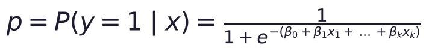
Equivalently, the log-odds (logit) is linear in the features:
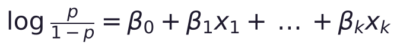
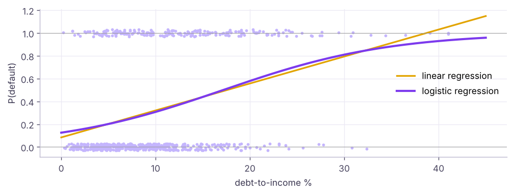
Linear regression vs logistic regression on default vs debt-to-income: the sigmoid keeps predictions between 0 and 1.
Fitting and interpreting with statsmodels
Logistic regression is fitted by maximum likelihood: choose coefficients that make the observed outcomes most probable, equivalently minimising log loss (cross-entropy).
Python
import statsmodels.formula.api as smf
m = smf.logit("default ~ age + ed + employ + address + income + debtinc + creddebt + othdebt", data=known).fit(disp=0)
print(m.summary2().tables[1][["Coef.", "Std.Err.", "P>|z|"]].round(4))
print(f"pseudo R² (McFadden) {m.prsquared:.3f} | log-likelihood {m.llf:.1f}")
For example, the odds ratio of about 0.85 for employ means each extra year with the current employer multiplies the odds of default by 0.85 (about 15% lower odds), holding the other variables constant. The odds ratio of about 1.38 for creddebt means each extra unit of card debt (₹1,000s) multiplies the odds by 1.38, and each extra point of debt-to-income raises the odds by about 11%. Age, education, income and other debt are not significant once the others are included.
NoteOdds are not probabilities
Odds = p / (1 − p). A probability of 0.2 is odds of 0.25 ("1 to 4"). An odds ratio describes a multiplicative change in odds; the change in probability depends on where you start.
A reduced model keeps the significant predictors (a common credit-scoring practice: fewer, stable variables):
predict uses a 0.5 threshold, but the right cut-off depends on costs. Suppose a missed defaulter costs the bank ₹50,000 and rejecting a good customer loses ₹10,000 of profit.
When missing a defaulter is five times as costly as rejecting a good customer, the best threshold is well below 0.5. Lesson 14 formalises this with precision, recall and ROC curves.
Scoring new applicants
Python
final = make_pipeline(StandardScaler(), LogisticRegression(C=1, max_iter=1000)).fit(X, y) # refit on all labelled data
new["p_default"] = final.predict_proba(new[feats])[:, 1].round(3)
best_t = th.loc[th["cost_₹_lakh"].idxmin(), "threshold"]
new["decision"] = np.where(new.p_default >= best_t, "decline / review", "approve")
print(new.decision.value_counts().to_dict())
print(new.sort_values("p_default", ascending=False)[["customer_id", "age", "employ", "debtinc", "creddebt", "p_default", "decision"]].head(5).to_string(index=False))
Each contribution is a coefficient × the applicant's standardised value: positive values push towards default. This additive explanation is a big reason banks like logistic regression (and regulators require explanations of adverse decisions).
Multiclass logistic regression
With more than two classes, scikit-learn fits a multinomial (softmax) model automatically: one score per class, converted to probabilities that sum to 1.
Python
from sklearn.datasets import load_iris
iris = load_iris(as_frame=True)
mc = make_pipeline(StandardScaler(), LogisticRegression(max_iter=1000)).fit(iris.data, iris.target)
print(mc.predict_proba(iris.data.iloc[[0, 60, 120]]).round(3), "| classes:", iris.target_names.tolist())
Logistic regression models log-odds as linear in the features and maps them to probabilities with the sigmoid; it is fitted by maximum likelihood (log loss).
e^β is an odds ratio: > 1 raises, < 1 lowers the odds per unit, holding other features constant.
Choose the probability threshold from business costs, not by default 0.5.
Coefficient × standardised value gives a transparent explanation of each prediction.
Quick quiz6 questions · tap an answer to check it
1. What does the sigmoid function do?
Answer: A. 1 / (1 + e^(−z)).
2. An odds ratio of 1.38 for card debt means…
Answer: A. Multiplicative change in odds.
3. Which loss does logistic regression minimise?
Answer: B. Equivalent to maximising the likelihood.
4. Missing a defaulter costs 5× more than rejecting a good customer. The best threshold is probably…
Answer: A. Flag more applicants to avoid expensive misses.
5. In scikit-learn, LogisticRegression(C=0.01) means…
Answer: A. C is the inverse of the penalty strength.
6. Why do banks favour logistic regression for credit scoring?
Answer: A. Explainability is a regulatory requirement.
ExercisePractice
(1) Fit a logistic regression for HR attrition with overtime, job_satisfaction, years_at_company and monthly_income. Report odds ratios. (2) What is the predicted probability for an employee with overtime, satisfaction 1, 1 year at the company and ₹50,000 income? (3) Find the threshold that maximises F1 on a validation split.
Q: Why is it called regression if it classifies?
It regresses the log-odds on the features; classification happens when you apply a threshold to the predicted probability.
Q: How do you interpret a logistic regression coefficient?
A one-unit increase in the feature changes the log-odds by β, i.e. multiplies the odds by e^β, holding other features constant.
Q: What are the assumptions of logistic regression?
Independent observations, a linear relationship between features and log-odds, little multicollinearity, no extreme outliers, and enough events per variable.
Statistics & Machine Learning · Lesson 14
Classification Metrics: Confusion Matrix, Precision, Recall, ROC, PR and Business Value
Measure classifiers properly. The confusion matrix, accuracy and why it misleads, precision, recall, specificity, F1 and F-beta, ROC curves and AUC, precision-recall curves, log loss and calibration, lift and gains charts, choosing thresholds by cost or capacity, and multiclass averaging, using the telecom churn model.
● ML class 7✦ scikit-learn 1.7+Intermediate⏱ 110 min
By the end of this lesson you can
Build and read a confusion matrix and compute accuracy, precision, recall, specificity and F1
Plot and interpret ROC and precision-recall curves and their AUCs
Check probability calibration and log loss
Choose thresholds by cost, capacity (top-k) or target recall, and present gains/lift
Use macro, weighted and micro averages for multiclass problems
The confusion matrix
Python
import pandas as pd, numpy as np
from sklearn.model_selection import train_test_split
from sklearn.compose import ColumnTransformer
from sklearn.preprocessing import StandardScaler, OneHotEncoder
from sklearn.pipeline import Pipeline
from sklearn.linear_model import LogisticRegression
from sklearn.metrics import confusion_matrix, accuracy_score, precision_score, recall_score, f1_score, fbeta_score, classification_report
tc = pd.read_csv("telecom_churn.csv")
X = tc.drop(columns=["customer_id", "churn", "total_charges"]); y = (tc.churn == "Yes").astype(int)
Xtr, Xte, ytr, yte = train_test_split(X, y, test_size=0.3, stratify=y, random_state=1)
pre = ColumnTransformer([("n", StandardScaler(), ["senior_citizen", "tenure_months", "monthly_charges", "support_calls"]), ("c", OneHotEncoder(), ["contract", "internet_service", "payment_method"])])
model = Pipeline([("pre", pre), ("lr", LogisticRegression(max_iter=1000))]).fit(Xtr, ytr)
proba = model.predict_proba(Xte)[:, 1]; pred = (proba >= 0.5).astype(int)
tn, fp, fn, tp = confusion_matrix(yte, pred).ravel()
print(pd.DataFrame([[tn, fp], [fn, tp]], index=["actual: stay", "actual: churn"], columns=["pred: stay", "pred: churn"]))
Accuracy barely beats the "nobody churns" baseline, while recall shows the model misses more than half of the churners at the default 0.5 threshold.
Which metric matters?
Example
Recall
Cancer screening, fraud, churn (missing a positive is costly)
Precision
Spam filter (do not hide real mail), expensive interventions
Balance (F1)
Both errors matter similarly
Specificity
Avoiding false alarms for the majority
Threshold-free view: ROC and PR curves
Left: the ROC curve plots recall (TPR) against the false-positive rate at every threshold. Right: the precision-recall curve focuses on the positive class, more informative when positives are rare.
Python
print(f"ROC-AUC {roc_auc_score(yte, proba):.3f} | average precision (PR-AUC) {average_precision_score(yte, proba):.3f} | churn base rate {yte.mean():.3f}")
Output
ROC-AUC 0.822 | average precision (PR-AUC) 0.602 | churn base rate 0.258
ROC-AUC is the probability that a randomly chosen churner gets a higher score than a randomly chosen stayer (0.5 = random, 1 = perfect). It does not depend on the threshold or on class balance. Average precision summarises the PR curve; its random baseline equals the positive rate, so it reveals weakness on rare classes that ROC-AUC can hide.
Probability quality: log loss and calibration
If the model says 30%, do about 30% of those customers churn?
Calibration curve: points near the diagonal mean predicted probabilities can be trusted as probabilities.
Python
from sklearn.metrics import log_loss, brier_score_loss
print(f"log loss {log_loss(yte, proba):.3f} (always predicting the base rate: {log_loss(yte, np.full(len(yte), ytr.mean())):.3f}) | Brier score {brier_score_loss(yte, proba):.3f}")
Output
log loss 0.436 (always predicting the base rate: 0.571) | Brier score 0.142
Calibration matters when probabilities feed decisions (expected loss = P(default) × amount). Tree ensembles and SVMs are often poorly calibrated; fix with CalibratedClassifierCV (isotonic or sigmoid).
Calling the top 10% reaches 2.8 times as many churners as random calls (the lift in the first decile), and the top 30% of scores contain about two-thirds of all churners. Gains and lift tables are how marketing and collections teams read models.
By target recall
Python
target = 0.80
i = np.where(rec >= target)[0][-1]
print(f"to catch {target:.0%} of churners use threshold {pthr[min(i, len(pthr) - 1)]:.3f} → precision {prec[i]:.3f}")
Output
to catch 80% of churners use threshold 0.245 → precision 0.465
Multiclass metrics
Python
from sklearn.datasets import load_wine
from sklearn.ensemble import RandomForestClassifier
w = load_wine(); Xa, Xb, ya, yb = train_test_split(w.data, w.target, test_size=0.4, stratify=w.target, random_state=0)
pw = RandomForestClassifier(200, random_state=0).fit(Xa, ya).predict(Xb)
print(confusion_matrix(yb, pw))
for avg in ("macro", "weighted", "micro"): print(f"{avg:8s} F1 {f1_score(yb, pw, average=avg):.3f}")
Output
[[23 1 0]
[ 1 28 0]
[ 0 0 19]]
macro F1 0.975
weighted F1 0.972
micro F1 0.972
Macro averages classes equally (rare classes count as much as common ones); weighted weights by class size; micro pools all decisions (equals accuracy for single-label problems).
Summary
Key takeaways
Confusion matrix: TP, FP, FN, TN. Accuracy misleads on imbalanced data; compare with the majority baseline.
Precision = how many flagged are right; recall = how many positives are caught; F1/F-beta balance them.
ROC-AUC ranks quality independent of threshold; PR-AUC (average precision) is better for rare positives.
Check log loss and calibration when probabilities drive decisions.
Choose thresholds by cost, capacity (top-k, gains, lift) or target recall; use macro/weighted averages for multiclass.
Quick quiz6 questions · tap an answer to check it
1. Fraud is 1% of transactions. A model that predicts "not fraud" for everything has accuracy…
Answer: C. That is why accuracy misleads on imbalanced data.
2. Recall answers which question?
Answer: A. TP / (TP + FN).
3. A spam filter must not hide real emails. Which metric should be high?
Answer: A. False positives (real mail marked spam) are costly.
4. ROC-AUC = 0.80 means…
Answer: A. It measures ranking quality.
5. Which curve is more informative when positives are very rare?
Answer: B. PR focuses on the positive class.
6. The retention team can call only 10% of customers. What should you report?
Answer: A. Evaluate where decisions are actually made.
ExercisePractice
(1) Train a random forest on the same split and compare ROC-AUC, average precision and lift in the top decile with logistic regression. (2) Calibrate the forest with CalibratedClassifierCV and compare Brier scores. (3) Find the threshold that maximises F2.
Q: Precision vs recall: give an example where each matters more.
Recall for disease screening or fraud (missing a case is costly); precision for spam filtering or expensive manual reviews (false alarms are costly).
Q: Why can a model with 95% accuracy be bad?
With 95% negatives, predicting all negatives gives 95% accuracy and catches no positives; look at recall, precision, PR-AUC and the confusion matrix.
Q: How do you choose a classification threshold?
From business costs and constraints: expected profit, team capacity (top-k), or a required recall/precision, validated on held-out data.
Statistics & Machine Learning · Lesson 15
Cross-Validation and Hyperparameter Tuning: K-Fold, GridSearchCV, RandomizedSearchCV and Optuna
Estimate performance reliably and tune models without fooling yourself. Hold-out vs k-fold, stratified, grouped and time-series cross-validation, cross_validate with several metrics, GridSearchCV and RandomizedSearchCV over pipelines, nested cross-validation, Bayesian optimisation with Optuna, and the common leakage traps.
● ML classes 6–7✦ scikit-learn 1.7+ · Optuna 4Intermediate⏱ 110 min
By the end of this lesson you can
Explain why one train/test split is noisy and how k-fold cross-validation helps
Choose stratified, group and time-series splitters for the problem
Tune pipeline hyperparameters with GridSearchCV and RandomizedSearchCV and read cv_results_
Use nested cross-validation for an unbiased estimate of a tuned model
Recognise and prevent leakage during validation
One split is noisy
Python
import pandas as pd, numpy as np
from sklearn.model_selection import train_test_split, cross_val_score, cross_validate, StratifiedKFold, KFold, GridSearchCV, RandomizedSearchCV
from sklearn.pipeline import make_pipeline, Pipeline
from sklearn.preprocessing import StandardScaler
from sklearn.linear_model import LogisticRegression
from sklearn.metrics import roc_auc_score
b = pd.read_csv("bank_loans.csv").dropna(subset=["default"])
feats = ["age", "ed", "employ", "address", "income", "debtinc", "creddebt", "othdebt"]
X, y = b[feats], b.default.astype(int)
pipe = make_pipeline(StandardScaler(), LogisticRegression(max_iter=1000))
aucs = []
for seed inrange(20):
Xa, Xb, ya, yb = train_test_split(X, y, test_size=0.25, stratify=y, random_state=seed)
aucs.append(roc_auc_score(yb, pipe.fit(Xa, ya).predict_proba(Xb)[:, 1]))
print(f"20 different random splits: test AUC from {min(aucs):.3f} to {max(aucs):.3f} (mean {np.mean(aucs):.3f})")
Output
20 different random splits: test AUC from 0.745 to 0.865 (mean 0.801)
With 700 rows, the test score depends a lot on which rows land in the test set. Cross-validation averages over several splits.
K-fold cross-validation
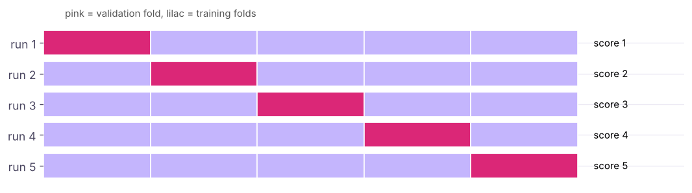
5-fold cross-validation: each fold is the validation set once; the score is the average of 5 runs.
Python
cv = StratifiedKFold(n_splits=5, shuffle=True, random_state=0)
scores = cross_val_score(pipe, X, y, cv=cv, scoring="roc_auc")
print("fold AUCs:", scores.round(3), f"| mean {scores.mean():.3f} ± {scores.std():.3f}")
res = cross_validate(pipe, X, y, cv=cv, scoring=["roc_auc", "accuracy", "recall", "precision"], return_train_score=True)
print({k: round(float(v.mean()), 3) for k, v inres.items() if"time"notin k})
Report the mean and spread. Compare train and validation scores to spot overfitting.
Splitter
Use
KFold
Regression, shuffled independent rows
StratifiedKFold
Classification: keeps class balance per fold (default for classifiers)
GroupKFold
Several rows per customer/patient/store: a group never appears in both train and validation
TimeSeriesSplit
Time order: always train on the past, validate on the future
RepeatedStratifiedKFold
Small data: repeat k-fold with different shuffles
LeaveOneOut
Tiny datasets (expensive)
Time-series cross-validation
Python
from sklearn.model_selection import TimeSeriesSplit
from sklearn.ensemble import HistGradientBoostingRegressor
from sklearn.metrics import mean_absolute_error
d = pd.read_csv("daily_sales.csv", parse_dates=["date"])
f = pd.DataFrame({"dow": d.date.dt.dayofweek, "month": d.date.dt.month, "t": np.arange(len(d)), "lag7": d.units_sold.shift(7), "lag14": d.units_sold.shift(14)}).dropna()
yt = d.units_sold.loc[f.index]
for i, (tr, va) inenumerate(TimeSeriesSplit(n_splits=4, test_size=90).split(f)):
m = HistGradientBoostingRegressor(random_state=0).fit(f.iloc[tr], yt.iloc[tr])
print(f"fold {i + 1}: train to {d.date[f.index[tr[-1]]].date()} ({len(tr)} days) → validate {d.date[f.index[va[0]]].date()}–{d.date[f.index[va[-1]]].date()} | MAE {mean_absolute_error(yt.iloc[va], m.predict(f.iloc[va])):.1f}")
shuffled = cross_val_score(HistGradientBoostingRegressor(random_state=0), f, yt, cv=KFold(5, shuffle=True, random_state=0), scoring="neg_mean_absolute_error").mean()
print(f"shuffled KFold MAE {-shuffled:.1f}: optimistic, because it trains on the future")
Output
fold 1: train to 2025-01-05 (1087 days) → validate 2025-01-06–2025-04-05 | MAE 24.3
fold 2: train to 2025-04-05 (1177 days) → validate 2025-04-06–2025-07-04 | MAE 30.8
fold 3: train to 2025-07-04 (1267 days) → validate 2025-07-05–2025-10-02 | MAE 14.9
fold 4: train to 2025-10-02 (1357 days) → validate 2025-10-03–2025-12-31 | MAE 13.1
shuffled KFold MAE 12.8: optimistic, because it trains on the future
Hyperparameters
Parameters are learned from data (coefficients, tree splits). Hyperparameters are set before training (C, number of neighbours, tree depth, learning rate). We choose them by cross-validation.
Pipeline step names prefix parameters (knn__n_neighbors). refit=True (default) retrains the best configuration on all training data, so gs can predict directly.
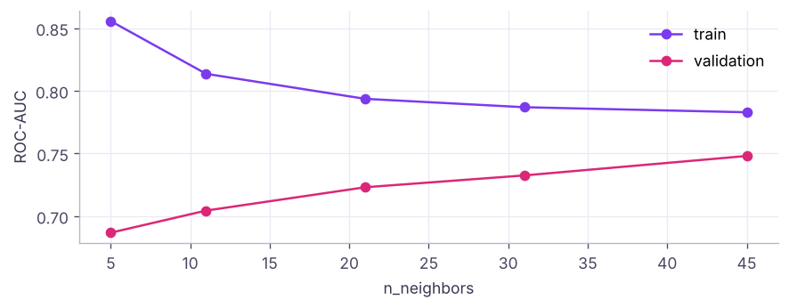
Validation AUC by number of neighbours: small k overfits (train ≫ validation), large k smooths.
RandomizedSearchCV
Grids grow exponentially (5 values × 5 parameters = 3,125 fits per fold). Random search samples a fixed number of combinations and often finds equally good settings much faster.
best RF: {'max_depth': 5, 'max_features': 'sqrt', 'min_samples_leaf': 24, 'n_estimators': 170} | CV AUC 0.776 | test AUC 0.847
logistic C = 0.441 | CV AUC 0.783 | test AUC 0.864
Simple, well-regularised logistic regression is hard to beat on this small, mostly linear credit dataset: a useful reminder to always include simple models in the comparison.
Optuna (and scikit-optimize, Hyperopt) learns from earlier trials which regions look promising, and prunes bad trials early: the usual choice for gradient boosting and deep learning.
Nested cross-validation
The best CV score from a search is slightly optimistic: it was chosen as the maximum of many tries. Nested CV wraps the search in an outer loop for an unbiased estimate.
One split is noisy; k-fold CV averages several splits; report mean ± spread.
Use stratified folds for classification, groups for repeated entities, and time-series splits for temporal data.
Hyperparameters are tuned by CV: GridSearchCV (small spaces), RandomizedSearchCV (large spaces), Optuna (efficient Bayesian search).
Nested CV gives an unbiased estimate of a tuned model; the test set is still used only once.
Keep every data-dependent step inside the pipeline to avoid leakage.
Quick quiz6 questions · tap an answer to check it
1. Why use cross-validation instead of one train/test split?
Answer: A. Especially important for small datasets.
2. Which splitter for daily sales forecasting?
Answer: B. Validation must come after training in time.
3. How do you name a hyperparameter of a pipeline step called "knn" in GridSearchCV?
Answer: B. Step name, two underscores, parameter.
4. When is RandomizedSearchCV preferable to GridSearchCV?
Answer: A. Often as good, much cheaper.
5. What does nested cross-validation estimate?
Answer: A. Inner loop tunes, outer loop evaluates.
6. Scaling the full dataset before cross-validation causes…
Answer: A. Put the scaler in the pipeline.
ExercisePractice
(1) Tune C and penalty (l1, l2) for logistic regression on the bank data with GridSearchCV (solver liblinear). (2) Use GroupKFold on the superstore data so that all lines of one customer stay together, predicting whether a line is loss-making. (3) Plot the CV AUC for max_depth 1–15 of a decision tree.
Show solution
Python
g = GridSearchCV(make_pipeline(StandardScaler(), LogisticRegression(solver="liblinear")), {"logisticregression__C": np.logspace(-3, 2, 12), "logisticregression__penalty": ["l1", "l2"]}, cv=cv, scoring="roc_auc").fit(Xtr, ytr)
print(g.best_params_, g.best_score_)
from sklearn.model_selection import GroupKFold
from sklearn.tree import DecisionTreeClassifier
s = pd.read_csv("superstore_sales.csv"); Xs = pd.get_dummies(s[["sales", "quantity", "discount", "category", "region"]]); ys = (s.profit < 0).astype(int)
print(cross_val_score(DecisionTreeClassifier(max_depth=5), Xs, ys, groups=s.customer_id, cv=GroupKFold(5), scoring="roc_auc").mean())
print([round(cross_val_score(DecisionTreeClassifier(max_depth=k, random_state=0), X, y, cv=cv, scoring="roc_auc").mean(), 3) for k inrange(1, 16)])
Interview cornerQuestions you may be asked
Q: Explain k-fold cross-validation.
Split the training data into k folds; train on k − 1 and validate on the remaining one, k times; average the scores. It uses all data for both training and validation and reduces variance of the estimate.
Q: Grid search vs random search vs Bayesian optimisation?
Grid tries every combination (exhaustive, expensive); random samples combinations (efficient in high dimensions); Bayesian optimisation models the score surface to choose promising settings next.
Q: How would you validate a churn model that will score customers monthly?
Time-based validation: train on earlier months and validate on later months, mimicking deployment; also group by customer to avoid leakage.
Statistics & Machine Learning · Lesson 16
K-Nearest Neighbours: Classifier and Regressor (Bank Loans Case Study)
The simplest learning algorithm: predict from the most similar past examples. Distance metrics, choosing k, why scaling is essential, weighted voting, the curse of dimensionality, KNN for classification and regression, tuning with GridSearchCV, and the full Bank Loans case study from the live class with metrics and scoring of new applicants.
● ML class 7✦ scikit-learn 1.7+Intermediate⏱ 100 min
By the end of this lesson you can
Explain how KNN classifies and regresses using distances to neighbours
Compute Euclidean, Manhattan and Minkowski distances and know why scaling matters
Choose k and weighting with cross-validation and explain the bias-variance effect of k
Run the Bank Loans case study end to end with a pipeline and GridSearchCV
Describe KNN's strengths, weaknesses and the curse of dimensionality
The idea
"Tell me who your neighbours are, and I'll tell you who you are." To predict a new point, find the k most similar labelled points and let them vote (classification) or average their values (regression). There is no training beyond storing the data, so KNN is a lazy, instance-based learner.
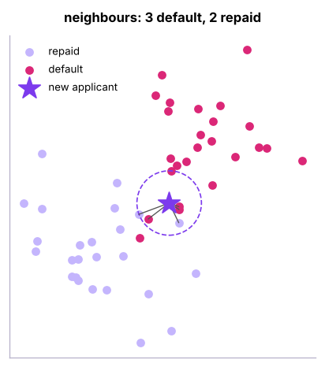
KNN with k = 5: the new applicant (star) is classified by the majority of its five nearest neighbours.
Distances
Minkowski distance generalises both (p=2 Euclidean, p=1 Manhattan). Cosine distance suits text and embeddings; Hamming suits binary features.
age ed employ address income debtinc creddebt othdebt
mean 37.4 1.9 6.3 5.3 49.5 10.0 1.7 3.3
std 10.6 1.0 5.9 5.0 24.9 6.5 1.7 3.4
max 55.0 5.0 24.0 22.0 172.4 41.0 12.3 43.0
Income ranges up to 170 while ed ranges 1–5: unscaled, income dominates every distance and education is ignored. Standardise (or min-max scale) before KNN.
Choosing k
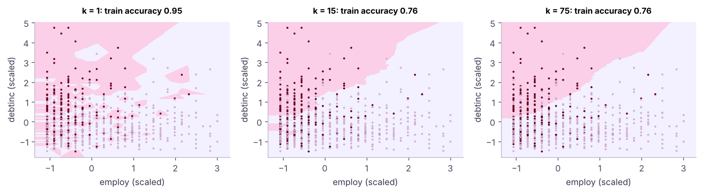
Decision boundaries for k = 1, 15 and 75 on two standardised features: small k overfits with jagged islands; large k oversmooths.
Small k
Large k
Flexible, low bias, high variance (overfits)
Smooth, high bias, low variance (underfits)
k = 1 memorises training data (100% train accuracy)
k = n predicts the majority class everywhere
Rules of thumb: start near √n, prefer odd k for binary problems (no ties), and choose by cross-validation. weights="distance" lets closer neighbours count more.
Case study: Bank Loans
Business problem: decide which of 150 new loan applicants to approve, using 700 past customers with known outcomes.
Python
from sklearn.model_selection import train_test_split, GridSearchCV, StratifiedKFold
from sklearn.metrics import roc_auc_score, classification_report, confusion_matrix, accuracy_score
X, y = known[feats], known.default
Xtr, Xte, ytr, yte = train_test_split(X, y, test_size=0.3, stratify=y, random_state=42)
raw = KNeighborsClassifier(15).fit(Xtr, ytr); scaled = make_pipeline(StandardScaler(), KNeighborsClassifier(15)).fit(Xtr, ytr)
print(f"k=15 without scaling: AUC {roc_auc_score(yte, raw.predict_proba(Xte)[:, 1]):.3f} | with scaling: AUC {roc_auc_score(yte, scaled.predict_proba(Xte)[:, 1]):.3f}")
Output
k=15 without scaling: AUC 0.757 | with scaling: AUC 0.765
Scaling helps only a little here, because the large-range features (income, debt-to-income) happen to be informative anyway. When a large-range feature is irrelevant (for example a customer ID number or a postcode), unscaled KNN can fail completely.
Python
pipe = make_pipeline(StandardScaler(), KNeighborsClassifier())
grid = {"kneighborsclassifier__n_neighbors": list(range(3, 62, 4)), "kneighborsclassifier__weights": ["uniform", "distance"], "kneighborsclassifier__metric": ["euclidean", "manhattan"]}
gs = GridSearchCV(pipe, grid, cv=StratifiedKFold(5, shuffle=True, random_state=0), scoring="roc_auc", n_jobs=-1).fit(Xtr, ytr)
print("best:", {k.split("__")[1]: v for k, v ings.best_params_.items()}, f"| CV AUC {gs.best_score_:.3f}")
p = gs.predict_proba(Xte)[:, 1]
print(f"test AUC {roc_auc_score(yte, p):.3f} | accuracy at 0.5 {accuracy_score(yte, p >= .5):.3f}")
print(confusion_matrix(yte, p >= 0.5))
print(classification_report(yte, p >= 0.5, target_names=["repaid", "default"], digits=3))
t = 0.3# lower threshold: missing a defaulter is costlierprint(f"threshold {t}:"); print(confusion_matrix(yte, p >= t)); print(classification_report(yte, p >= t, target_names=["repaid", "default"], digits=3))
On this small, roughly linear credit problem, logistic regression is as good or better, and far easier to explain. KNN shines when the boundary is irregular and the data are dense.
Scoring new applicants and explaining with neighbours
Python
best = gs.best_estimator_.fit(X, y)
new_apps["p_default"] = best.predict_proba(new_apps[feats])[:, 1].round(3)
print(new_apps.p_default.describe().round(3).to_dict())
app = new_apps.sort_values("p_default", ascending=False).iloc[0]
dist_, idx = best[-1].kneighbors(best[0].transform(app[feats].to_frame().T.astype(float)), n_neighbors=5)
print(f"{app.customer_id}: P(default) {app.p_default:.2f}. Its 5 most similar past customers:")
print(known.iloc[idx[0]][feats + ["default"]].to_string(index=False))
KNN explanations are concrete: here, all five of the most similar past customers defaulted.
KNN regression
Python
from sklearn.neighbors import KNeighborsRegressor
from sklearn.metrics import mean_absolute_error
h = pd.read_csv("house_prices.csv").dropna(subset=["area_sqft"])
hf = ["area_sqft", "bedrooms", "bathrooms", "age_years", "distance_to_center_km"]
Htr, Hte, htr, hte = train_test_split(h[hf], h.price_lakh, test_size=0.2, random_state=0)
for k in (1, 5, 15, 40):
m = make_pipeline(StandardScaler(), KNeighborsRegressor(k, weights="distance")).fit(Htr, htr)
print(f"k = {k:2d}: test MAE {mean_absolute_error(hte, m.predict(Hte)):.2f} lakh")
Output
k = 1: test MAE 16.40 lakh
k = 5: test MAE 12.57 lakh
k = 15: test MAE 12.96 lakh
k = 40: test MAE 12.42 lakh
Strengths, weaknesses and the curse of dimensionality
Strengths
Weaknesses
Simple, intuitive, no training
Slow predictions on large data (must search all points)
Naturally multiclass; non-linear boundaries
Needs scaling; sensitive to irrelevant features
Explanations by example
Struggles in high dimensions
Works for regression too
Memory: stores the whole training set
Python
rng = np.random.default_rng(0)
for dims in (2, 10, 100, 1000):
pts_ = rng.uniform(size=(500, dims)); d = np.linalg.norm(pts_[1:] - pts_[0], axis=1)
print(f"{dims:4d} dimensions: nearest/farthest distance ratio {d.min() / d.max():.2f}")
Output
2 dimensions: nearest/farthest distance ratio 0.01
10 dimensions: nearest/farthest distance ratio 0.30
100 dimensions: nearest/farthest distance ratio 0.73
1000 dimensions: nearest/farthest distance ratio 0.90
In high dimensions every point is almost equally far from every other (the ratio approaches 1), so "nearest" stops meaning "similar". Reduce dimensions (feature selection, PCA) first. For millions of vectors (embeddings in RAG systems, GenAI track), approximate nearest-neighbour indexes (FAISS, HNSW) make search fast.
Summary
Key takeaways
KNN predicts from the k most similar labelled examples: majority vote or (weighted) average.
Distances: Euclidean, Manhattan, Minkowski, cosine; always scale features first.
Small k overfits, large k underfits; tune k, weights and metric with cross-validation.
Bank Loans: a scaled, tuned KNN reaches a decent AUC, and logistic regression is as good and more interpretable on this data.
KNN suffers from slow prediction and the curse of dimensionality; approximate nearest-neighbour search powers vector databases.
Quick quiz6 questions · tap an answer to check it
1. What does KNN do during training?
Answer: A. Work happens at prediction time.
2. Why must features be scaled for KNN?
Answer: A. Income would swamp education level.
3. What happens with k = 1?
Answer: A. Training accuracy is 100%.
4. Which distance is Minkowski with p = 1?
Answer: B. Sum of absolute differences.
5. What is the curse of dimensionality for KNN?
Answer: A. Reduce dimensions first.
6. How does weights="distance" change predictions?
Answer: A. Weights are 1/distance.
ExercisePractice
(1) Use KNN to predict churn on telecom_churn.csv (one-hot + scale) and tune k with GridSearchCV; compare AUC with logistic regression. (2) Plot test MAE against k (1–50) for KNN regression on house prices. (3) Find the 5 nearest neighbours of a new house (1,400 sq ft, 3 bed, 2 bath, 8 years, 6 km).
Show solution
Python
from sklearn.compose import ColumnTransformer
from sklearn.preprocessing import OneHotEncoder
tc = pd.read_csv("telecom_churn.csv"); Xc = tc.drop(columns=["customer_id", "churn", "total_charges"]); yc = (tc.churn == "Yes").astype(int)
pre = ColumnTransformer([("n", StandardScaler(), ["senior_citizen", "tenure_months", "monthly_charges", "support_calls"]), ("c", OneHotEncoder(), ["contract", "internet_service", "payment_method"])])
g = GridSearchCV(make_pipeline(pre, KNeighborsClassifier()), {"kneighborsclassifier__n_neighbors": range(5, 120, 10)}, cv=5, scoring="roc_auc").fit(Xc, yc); print(g.best_params_, g.best_score_)
maes = [mean_absolute_error(hte, make_pipeline(StandardScaler(), KNeighborsRegressor(k)).fit(Htr, htr).predict(Hte)) for k inrange(1, 51)]
m = make_pipeline(StandardScaler(), KNeighborsRegressor(5)).fit(h[hf], h.price_lakh)
print(m.predict(pd.DataFrame([[1400, 3, 2, 8, 6]], columns=hf)))
Interview cornerQuestions you may be asked
Q: How does KNN work and how do you choose k?
It finds the k closest training points by a distance metric and votes or averages; choose k (and weighting, metric) by cross-validation, balancing overfitting (small k) and oversmoothing (large k).
Q: What are the disadvantages of KNN?
Slow and memory-heavy predictions, sensitivity to scaling and irrelevant features, poor performance in high dimensions, and imbalanced classes skew votes.
Q: How would you speed up nearest-neighbour search on millions of points?
KD-trees or ball trees for low dimensions, and approximate nearest-neighbour indexes (HNSW, FAISS, ScaNN) for high-dimensional embeddings.
Statistics & Machine Learning · Lesson 17
Decision Trees: Splits, Impurity, Pruning and Interpretable Rules
Learn the model behind random forests and gradient boosting. How trees split data with Gini impurity, entropy and variance reduction, growing and visualising a tree, reading it as business rules, controlling overfitting with depth, minimum leaf size and cost-complexity pruning, regression trees, feature importance and the strengths and weaknesses of single trees.
● ML track (added)✦ scikit-learn 1.7+Intermediate⏱ 110 min
By the end of this lesson you can
Explain recursive binary splitting and compute Gini impurity and entropy by hand
Train, plot and read a decision tree classifier as IF-THEN rules
Control overfitting with max_depth, min_samples_leaf and ccp_alpha pruning
Build a regression tree and explain its step-shaped predictions
Describe tree feature importance and the instability of single trees
How a tree decides
A decision tree asks a sequence of yes/no questions about the features. Each question splits the data into two purer groups; leaves give the prediction (majority class or average value). It is a flowchart learned from data.
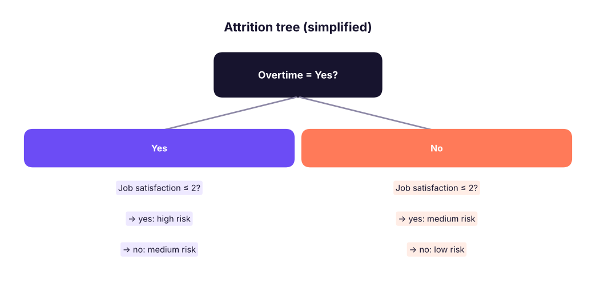
A decision tree is a learned flowchart of questions.
Measuring purity
At each node the algorithm tries every feature and threshold and picks the split that most reduces impurity.
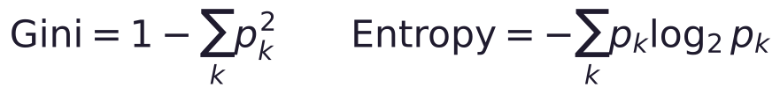
Python
import numpy as np, pandas as pd
defgini(p): p = np.asarray(p); return1 - (p ** 2).sum()
defentropy(p): p = np.asarray([x for x in p if x > 0]); returnfloat(-(p * np.log2(p)).sum()) + 0.0for dist in ([0.5, 0.5], [0.8, 0.2], [1.0, 0.0]): print(dist, "Gini", round(gini(dist), 3), "| entropy", round(entropy(dist), 3))
hr = pd.read_csv("hr_employees.csv"); hr["left"] = (hr.attrition == "Yes").astype(int)
defsplit_gain(df, mask):
parent = gini([1 - df.left.mean(), df.left.mean()])
l, r = df[mask], df[~mask]
child = sum(len(s) / len(df) * gini([1 - s.left.mean(), s.left.mean()]) for s in (l, r))
return parent - child
for name, mask in [("overtime == Yes", hr.overtime == "Yes"), ("job_satisfaction <= 2", hr.job_satisfaction <= 2), ("years_at_company <= 1", hr.years_at_company <= 1), ("department == Sales", hr.department == "Sales")]:
print(f"{name:24s} Gini decrease {split_gain(hr, mask):.4f}")
The split with the largest decrease (information gain) wins; then the process repeats inside each child (recursive binary splitting) until a stopping rule is met. Regression trees use variance (MSE) reduction instead.
Training and reading a tree
Python
from sklearn.tree import DecisionTreeClassifier, export_text, plot_tree
from sklearn.model_selection import train_test_split
from sklearn.metrics import roc_auc_score, accuracy_score
X = pd.get_dummies(hr[["age", "years_at_company", "monthly_income", "job_satisfaction", "distance_from_home_km", "performance_rating", "overtime", "department"]], drop_first=True).astype(float)
y = hr.left
Xtr, Xte, ytr, yte = train_test_split(X, y, test_size=0.3, stratify=y, random_state=0)
small = DecisionTreeClassifier(max_depth=3, min_samples_leaf=40, random_state=0).fit(Xtr, ytr)
print(export_text(small, feature_names=list(X.columns), show_weights=True, decimals=1))
print(f"test AUC {roc_auc_score(yte, small.predict_proba(Xte)[:, 1]):.3f} | accuracy {accuracy_score(yte, small.predict(Xte)):.3f}")
An unrestricted tree keeps splitting until leaves are pure: perfect on training data, poor on new data. Notice also that attrition is hard to predict from these few HR fields (the best test AUC is only about 0.6). That is common with people data: many reasons for leaving (a new offer, a manager, family) are not in the database. A good analyst says so rather than overselling the model.
Hyperparameter
Effect
max_depth
Maximum number of questions on a path
min_samples_split
A node needs this many rows to split
min_samples_leaf
Every leaf keeps at least this many rows (smooths probabilities)
max_leaf_nodes
Cap on the number of leaves
ccp_alpha
Cost-complexity pruning: removes branches that add little
Importance = total impurity decrease contributed by each feature (normalised to sum to 1). It is quick but biased towards continuous features with many possible split points; check with permutation importance (lesson 27).
Regression trees
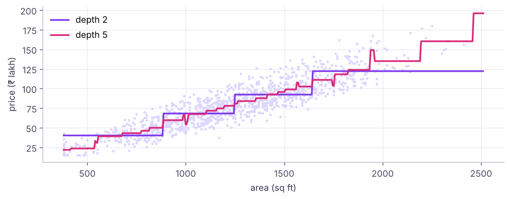
A regression tree predicts the average price in each leaf, giving step-shaped predictions (depth 2 vs depth 5).
Python
from sklearn.metrics import mean_absolute_error
hf = ["area_sqft", "bedrooms", "bathrooms", "age_years", "distance_to_center_km", "parking"]
Htr, Hte, htr, hte = train_test_split(pd.get_dummies(h[hf + ["city"]]).astype(float), h.price_lakh, test_size=0.2, random_state=0)
for d in (3, 6, 10, None):
t = DecisionTreeRegressor(max_depth=d, min_samples_leaf=5, random_state=0).fit(Htr, htr)
print(f"depth {str(d):4s} test MAE {mean_absolute_error(hte, t.predict(Hte)):.2f} lakh")
Output
depth 3 test MAE 10.12 lakh
depth 6 test MAE 8.10 lakh
depth 10 test MAE 7.62 lakh
depth None test MAE 7.64 lakh
Trees cannot extrapolate: a house bigger than any in the training data gets the price of the largest leaf.
Strengths and weaknesses
Strengths
Weaknesses
Easy to explain as rules; visual
Unstable: small data changes give a different tree
No scaling needed; handles mixed types
Overfits without limits
Captures non-linearity and interactions automatically
Step-shaped, no extrapolation
Fast to train and predict
Single trees are usually less accurate than ensembles
Python
for seed inrange(3):
Xs, _, ys, _ = train_test_split(Xtr, ytr, train_size=0.8, random_state=seed)
t = DecisionTreeClassifier(max_depth=2, random_state=0).fit(Xs, ys)
print(f"sample {seed}: root split on '{X.columns[t.tree_.feature[0]]}' at {t.tree_.threshold[0]:.1f}, second-level splits on {[X.columns[f] for f in t.tree_.feature[1:] if f >= 0]}")
Output
sample 0: root split on 'overtime_Yes' at 0.5, second-level splits on ['distance_from_home_km', 'years_at_company']
sample 1: root split on 'overtime_Yes' at 0.5, second-level splits on ['job_satisfaction', 'years_at_company']
sample 2: root split on 'job_satisfaction' at 2.5, second-level splits on ['distance_from_home_km', 'age']
Instability is exactly what random forests exploit: average many different trees and the noise cancels out (next lesson).
Summary
Key takeaways
Trees split recursively on the feature/threshold that most reduces impurity (Gini, entropy) or variance (regression).
Small trees are readable IF-THEN rules; unrestricted trees overfit badly.
Control complexity with max_depth, min_samples_leaf and ccp_alpha pruning, chosen by cross-validation.
Impurity-based importance is quick but biased; trees need no scaling but cannot extrapolate.
Single trees are unstable; ensembles (random forests, boosting) fix this.
Quick quiz6 questions · tap an answer to check it
1. What is the Gini impurity of a node with 50% stay and 50% leave?
Answer: B. 1 − (0.5² + 0.5²) = 0.5, the maximum for two classes.
2. An unrestricted tree has train AUC 1.0 and test AUC 0.6. Why?
Answer: A. Limit depth or prune.
3. Do decision trees need feature scaling?
Answer: B. Monotonic transformations do not change splits.
4. What does min_samples_leaf=40 do?
Answer: A. It smooths predictions and reduces overfitting.
5. Why can't a regression tree predict prices above the training maximum?
Answer: A. No extrapolation.
6. Which weakness of single trees do random forests address?
Answer: A. Averaging many trees reduces variance.
ExercisePractice
(1) Train a tree on the telecom churn data with depth 3 and write its rules as three bullet points for the retention team. (2) Tune max_depth and min_samples_leaf with GridSearchCV. (3) Compare the test AUC of the pruned tree with logistic regression.
Q: How does a decision tree choose a split?
It evaluates candidate thresholds on every feature and picks the one with the largest impurity reduction (Gini or entropy for classification, variance for regression), then repeats recursively.
Q: Gini vs entropy?
Both measure impurity and usually give similar trees; Gini is slightly faster, entropy comes from information theory.
Q: How do you prevent a tree from overfitting?
Limit depth, require minimum samples per leaf/split, cap leaves, prune with cost-complexity, or use ensembles.
Statistics & Machine Learning · Lesson 18
Ensembles I: Bagging and Random Forests
Combine many models to beat one. The wisdom of crowds, bootstrap aggregating (bagging), random forests with feature subsampling, out-of-bag evaluation, the key hyperparameters, feature importance (impurity vs permutation), extra trees, voting and stacking ensembles, applied to telecom churn.
● ML track (added)✦ scikit-learn 1.7+Intermediate⏱ 100 min
By the end of this lesson you can
Explain why averaging many diverse models reduces variance
Build bagging and random-forest models and use out-of-bag scores
Tune n_estimators, max_features, max_depth and min_samples_leaf
Compare impurity-based and permutation feature importance
Combine different models with voting and stacking
Why ensembles work
If each of many independent models is right 65% of the time, a majority vote of them is right far more often. Errors cancel when models make different mistakes.
Python
import numpy as np, pandas as pd
from scipy.stats import binom
for n in (1, 5, 25, 101):
print(f"{n:3d} independent voters, each 65% accurate → majority correct {binom.sf(n // 2, n, 0.65):.3f}")
Output
1 independent voters, each 65% accurate → majority correct 0.650
5 independent voters, each 65% accurate → majority correct 0.765
25 independent voters, each 65% accurate → majority correct 0.940
101 independent voters, each 65% accurate → majority correct 0.999
Real models are correlated (trained on the same data), so the gain is smaller. The trick is to make trees diverse.
Bagging: bootstrap aggregating
Train each tree on a bootstrap sample (rows drawn with replacement, same size as the data), then average predictions (regression) or vote (classification). Each bootstrap sample leaves out about 37% of rows: the out-of-bag (OOB) rows act as a free validation set.
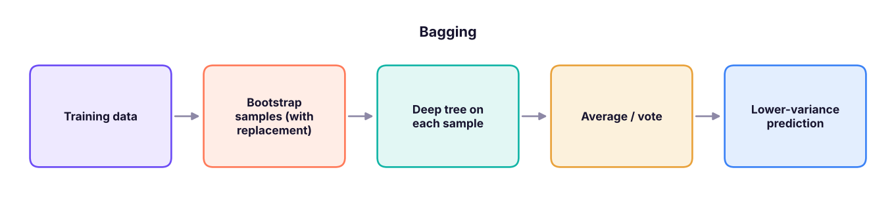
Bagging: many bootstrap samples, one deep tree each, averaged predictions.
Random forests
A random forest = bagging + a random subset of features considered at each split (max_features). This decorrelates the trees further: a dominant feature cannot sit at the top of every tree.
Python
from sklearn.model_selection import train_test_split, cross_val_score, StratifiedKFold
from sklearn.tree import DecisionTreeClassifier
from sklearn.ensemble import BaggingClassifier, RandomForestClassifier, ExtraTreesClassifier
from sklearn.linear_model import LogisticRegression
from sklearn.metrics import roc_auc_score
tc = pd.read_csv("telecom_churn.csv")
X = pd.get_dummies(tc.drop(columns=["customer_id", "churn", "total_charges"]), drop_first=True).astype(float); y = (tc.churn == "Yes").astype(int)
Xtr, Xte, ytr, yte = train_test_split(X, y, test_size=0.3, stratify=y, random_state=1)
models = {"single deep tree": DecisionTreeClassifier(random_state=0),
"bagged trees (300)": BaggingClassifier(DecisionTreeClassifier(), n_estimators=300, random_state=0, n_jobs=-1),
"random forest (300)": RandomForestClassifier(300, random_state=0, n_jobs=-1),
"random forest, leaf ≥ 20": RandomForestClassifier(300, min_samples_leaf=20, random_state=0, n_jobs=-1),
"extra trees, leaf ≥ 20": ExtraTreesClassifier(300, min_samples_leaf=20, random_state=0, n_jobs=-1)}
for name, m inmodels.items():
m.fit(Xtr, ytr)
print(f"{name:26s} train AUC {roc_auc_score(ytr, m.predict_proba(Xtr)[:, 1]):.3f} | test AUC {roc_auc_score(yte, m.predict_proba(Xte)[:, 1]):.3f}")
Output
single deep tree train AUC 1.000 | test AUC 0.630
bagged trees (300) train AUC 1.000 | test AUC 0.763
random forest (300) train AUC 1.000 | test AUC 0.771
random forest, leaf ≥ 20 train AUC 0.847 | test AUC 0.820
extra trees, leaf ≥ 20 train AUC 0.836 | test AUC 0.815
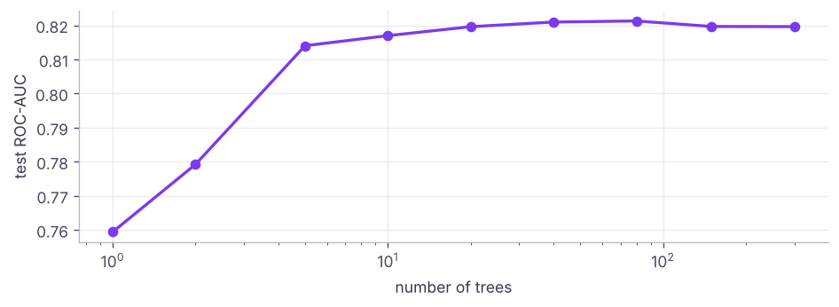
Test AUC as trees are added: performance improves quickly then plateaus; more trees never overfit, they only cost time.
Out-of-bag evaluation
Python
rf = RandomForestClassifier(500, min_samples_leaf=20, oob_score=True, random_state=0, n_jobs=-1).fit(Xtr, ytr)
from sklearn.metrics import roc_auc_score as auc
print(f"OOB accuracy {rf.oob_score_:.3f} | OOB AUC {auc(ytr, rf.oob_decision_function_[:, 1]):.3f} | test AUC {auc(yte, rf.predict_proba(Xte)[:, 1]):.3f}")
OOB scores approximate test performance without a separate validation set, which is handy for quick tuning.
Key hyperparameters
Parameter
Typical values
Effect
n_estimators
200–1,000
More trees = more stable; plateau
max_features
"sqrt" (classification), 0.3–1.0 (regression)
Lower = more diverse, less correlated trees
max_depth / min_samples_leaf
None / 1–50
Leaf size smooths probabilities; key for noisy data
max_samples
0.5–1.0
Bootstrap sample size (faster, more diverse)
class_weight
"balanced", "balanced_subsample"
Imbalanced classes
n_jobs=-1
Use all CPU cores
Python
from sklearn.model_selection import RandomizedSearchCV
from scipy.stats import randint, uniform
cv = StratifiedKFold(5, shuffle=True, random_state=0)
search = RandomizedSearchCV(RandomForestClassifier(300, random_state=0, n_jobs=-1),
{"max_features": uniform(0.1, 0.8), "min_samples_leaf": randint(1, 60), "max_depth": [None, 4, 8, 12]},
n_iter=20, cv=cv, scoring="roc_auc", random_state=0).fit(Xtr, ytr)
print({k: (round(float(v), 3) ifisinstance(v, float) else v) for k, v insearch.best_params_.items()}, f"| CV AUC {search.best_score_:.3f} | test AUC {auc(yte, search.predict_proba(Xte)[:, 1]):.3f}")
lr = LogisticRegression(max_iter=2000).fit(Xtr, ytr); print(f"logistic regression test AUC {auc(yte, lr.predict_proba(Xte)[:, 1]):.3f}")
Output
{'max_depth': 4, 'max_features': 0.37, 'min_samples_leaf': 21} | CV AUC 0.794 | test AUC 0.819
logistic regression test AUC 0.822
On this dataset the relationships are close to additive, so a tuned forest and logistic regression perform similarly. Forests pull ahead when there are strong interactions and thresholds.
Feature importance
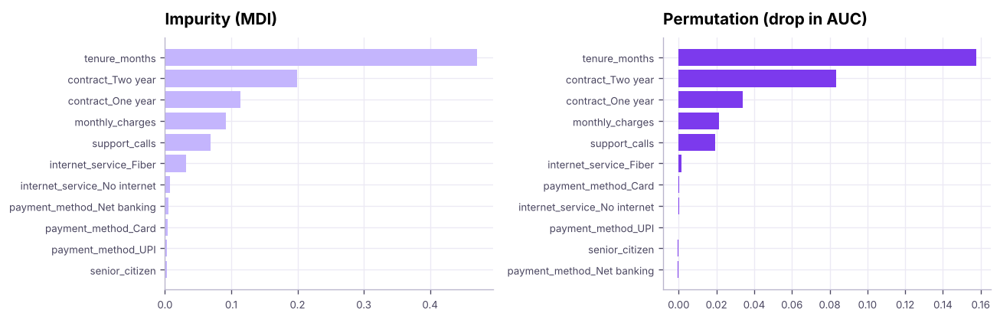
Impurity importance (left) vs permutation importance on the test set (right). Permutation importance measures how much AUC drops when a feature is shuffled.
Both rank tenure and contract first, but impurity importance (computed on training data) gives continuous features with many possible split points, such as monthly charges, a bigger share; permutation importance on held-out data reflects real predictive value. Neither shows the direction of an effect; use partial dependence or SHAP for that (lesson 27).
Random forest regression
Python
from sklearn.ensemble import RandomForestRegressor
from sklearn.metrics import mean_absolute_error
h = pd.read_csv("house_prices.csv").dropna(subset=["area_sqft"]); h = h[h.price_lakh.between(5, 300)]
Xh = pd.get_dummies(h.drop(columns=["house_id", "price_lakh"]), drop_first=True).astype(float)
a, bq, c, d = train_test_split(Xh, h.price_lakh, test_size=0.2, random_state=0)
rfr = RandomForestRegressor(500, min_samples_leaf=2, max_features=0.6, random_state=0, n_jobs=-1).fit(a, c)
print(f"random forest test MAE {mean_absolute_error(d, rfr.predict(bq)):.2f} lakh | R² {rfr.score(bq, d):.3f}")
Output
random forest test MAE 7.39 lakh | R² 0.912
Voting and stacking
Different model families make different errors, so combining them can help.
Python
from sklearn.ensemble import VotingClassifier, StackingClassifier, HistGradientBoostingClassifier
from sklearn.pipeline import make_pipeline
from sklearn.preprocessing import StandardScaler
from sklearn.neighbors import KNeighborsClassifier
base = [("lr", make_pipeline(StandardScaler(), LogisticRegression(max_iter=2000))), ("rf", RandomForestClassifier(300, min_samples_leaf=20, random_state=0, n_jobs=-1)),
("knn", make_pipeline(StandardScaler(), KNeighborsClassifier(75)))]
vote = VotingClassifier(base, voting="soft").fit(Xtr, ytr)
stack = StackingClassifier(base, final_estimator=LogisticRegression(), cv=5).fit(Xtr, ytr)
for name, m in [("soft voting", vote), ("stacking", stack)]: print(f"{name:12s} test AUC {auc(yte, m.predict_proba(Xte)[:, 1]):.3f}")
Output
soft voting test AUC 0.823
stacking test AUC 0.824
Soft voting averages predicted probabilities; stacking trains a meta-model on the base models' out-of-fold predictions. Gains are usually small and add complexity; Kaggle winners love them, production teams use them sparingly.
Summary
Key takeaways
Ensembles average diverse models so errors cancel; bagging trains each model on a bootstrap sample.
Random forests add random feature subsets at each split to decorrelate trees; more trees never overfit.
Tune max_features, min_samples_leaf and depth; use OOB scores for quick validation.
Prefer permutation importance on held-out data to impurity importance; neither gives direction.
Voting and stacking combine different model families for small extra gains.
Quick quiz6 questions · tap an answer to check it
1. What is a bootstrap sample?
Answer: A. About 63% of unique rows appear in each.
2. What extra randomness does a random forest add to bagging?
Answer: A. It decorrelates the trees.
3. What happens if you keep adding trees to a random forest?
Answer: A. Unlike boosting rounds.
4. What are out-of-bag rows used for?
Answer: A. No separate validation set needed.
5. Why prefer permutation importance?
Answer: A. Compute it on test or validation data.
6. What does stacking do?
Answer: A. Often a small gain.
ExercisePractice
(1) Fit a random forest on the bank loans data and compare its 5-fold AUC with logistic regression. (2) Plot OOB error vs max_features. (3) Train a RandomForestRegressor on house prices and plot predicted vs actual.
Show solution
Python
b = pd.read_csv("bank_loans.csv").dropna(subset=["default"]); fb = ["age", "ed", "employ", "address", "income", "debtinc", "creddebt", "othdebt"]
for m in (RandomForestClassifier(500, min_samples_leaf=10, random_state=0), make_pipeline(StandardScaler(), LogisticRegression(max_iter=1000))):
print(type(m).__name__, cross_val_score(m, b[fb], b.default.astype(int), cv=cv, scoring="roc_auc").mean())
for mf in (0.1, 0.3, 0.5, 0.8, 1.0): print(mf, 1 - RandomForestClassifier(300, max_features=mf, oob_score=True, random_state=0).fit(Xtr, ytr).oob_score_)
plt.scatter(d, rfr.predict(bq), s=5); plt.plot([0, 300], [0, 300])
Interview cornerQuestions you may be asked
Q: How does a random forest reduce overfitting compared with a single tree?
Each tree sees a different bootstrap sample and random feature subsets, so trees make different errors; averaging them reduces variance while keeping low bias.
Q: Bagging vs boosting?
Bagging trains models independently in parallel on bootstrap samples and averages them (reduces variance); boosting trains models sequentially, each correcting the previous errors (reduces bias).
Q: How do you get feature importance from a random forest, and what is the caveat?
Impurity-based importance from training splits (biased toward high-cardinality features) or permutation importance on held-out data (more reliable); neither shows the direction of the effect.
Statistics & Machine Learning · Lesson 19
Ensembles II: Gradient Boosting, XGBoost, LightGBM and CatBoost
The algorithm family that wins most tabular-data problems. Boosting intuition (AdaBoost to gradient boosting), fitting trees to residuals by hand, learning rate and number of trees, early stopping, scikit-learn's HistGradientBoosting, XGBoost and LightGBM APIs and key hyperparameters, categorical features and CatBoost, and a tuned comparison on churn and house prices.
● ML track (added)✦ XGBoost 3.x · LightGBM 4.x · scikit-learn 1.7+Advanced⏱ 120 min
By the end of this lesson you can
Explain sequential boosting and how gradient boosting fits trees to residuals (gradients)
Implement a few boosting rounds by hand to see the mechanism
Tune learning rate, number of trees, depth, subsampling and regularisation with early stopping
Use HistGradientBoosting, XGBoost and LightGBM with native categorical handling
Decide when boosting is worth its extra complexity
Boosting: learn from mistakes
Bagging trains trees independently and averages them (reduces variance). Boosting trains small trees sequentially: each new tree focuses on what the current ensemble gets wrong (reduces bias).
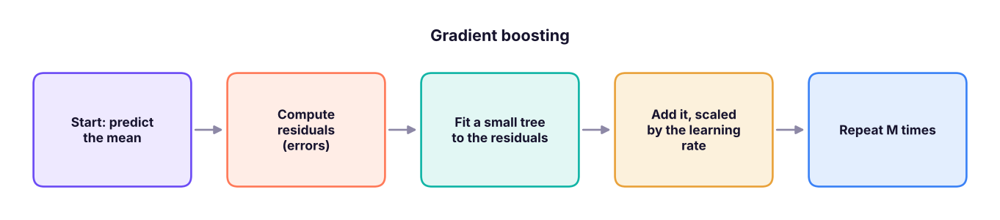
Gradient boosting adds trees one at a time, each correcting the remaining error.
AdaBoost (1995) reweights misclassified rows so the next learner focuses on them.
Gradient boosting (Friedman, 2001) fits each new tree to the negative gradient of the loss; for squared error, that is simply the residual.
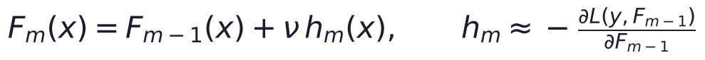
Boosting by hand
Python
import numpy as np, pandas as pd
from sklearn.tree import DecisionTreeRegressor
from sklearn.model_selection import train_test_split
from sklearn.metrics import mean_absolute_error
h = pd.read_csv("house_prices.csv").dropna(subset=["area_sqft"]); h = h[h.price_lakh.between(5, 300)]
Xh = pd.get_dummies(h.drop(columns=["house_id", "price_lakh"]), drop_first=True).astype(float); yh = h.price_lakh
Xtr, Xte, ytr, yte = train_test_split(Xh, yh, test_size=0.2, random_state=0)
lr, pred_tr, pred_te = 0.3, np.full(len(ytr), ytr.mean()), np.full(len(yte), ytr.mean())
print(f"round 0 (mean only): test MAE {mean_absolute_error(yte, pred_te):.2f}")
for m inrange(1, 31):
resid = ytr - pred_tr # negative gradient of squared error
tree = DecisionTreeRegressor(max_depth=3, random_state=0).fit(Xtr, resid)
pred_tr += lr * tree.predict(Xtr); pred_te += lr * tree.predict(Xte)
if m in (1, 2, 5, 10, 30): print(f"round {m:2d}: test MAE {mean_absolute_error(yte, pred_te):.2f}")
Output
round 0 (mean only): test MAE 25.00
round 1: test MAE 19.07
round 2: test MAE 15.39
round 5: test MAE 10.61
round 10: test MAE 8.01
round 30: test MAE 6.95
Thirty shallow trees, each correcting the last, beat a single deep tree.
The learning rate and number of trees
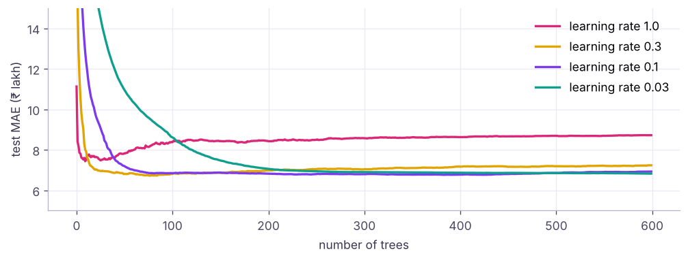
Validation error by boosting round for different learning rates: small rates need more trees but often reach lower error; too many rounds can overfit.
Unlike random forests, boosting can overfit with too many rounds. Use a small learning rate (0.01–0.1) with early stopping on a validation set.
scikit-learn HistGradientBoosting
The fast, modern implementation in scikit-learn (inspired by LightGBM): bins features into histograms, handles missing values and categorical features natively, supports early stopping.
Python
from sklearn.ensemble import HistGradientBoostingClassifier
from sklearn.metrics import roc_auc_score
tc = pd.read_csv("telecom_churn.csv")
Xc = tc.drop(columns=["customer_id", "churn", "total_charges"]); yc = (tc.churn == "Yes").astype(int)
for col in ["contract", "internet_service", "payment_method"]: Xc[col] = Xc[col].astype("category")
Xa, Xb, ya, yb = train_test_split(Xc, yc, test_size=0.3, stratify=yc, random_state=1)
hgb = HistGradientBoostingClassifier(learning_rate=0.05, max_iter=1000, max_depth=None, max_leaf_nodes=15, min_samples_leaf=40, l2_regularization=1.0,
categorical_features="from_dtype", early_stopping=True, validation_fraction=0.15, n_iter_no_change=30, random_state=0).fit(Xa, ya)
print(f"HistGradientBoosting: stopped after {hgb.n_iter_} trees | test AUC {roc_auc_score(yb, hgb.predict_proba(Xb)[:, 1]):.3f}")
Output
HistGradientBoosting: stopped after 87 trees | test AUC 0.806
import lightgbm as lgb
lg = lgb.LGBMClassifier(n_estimators=2000, learning_rate=0.03, num_leaves=15, min_child_samples=40, subsample=0.8, subsample_freq=1, colsample_bytree=0.8, reg_lambda=1.0, random_state=0, verbose=-1)
lg.fit(Xa_tr, ya_tr, eval_set=[(Xa_va, ya_va)], eval_metric="auc", callbacks=[lgb.early_stopping(100, verbose=False)])
print(f"LightGBM {lgb.__version__}: best iteration {lg.best_iteration_} | test AUC {roc_auc_score(yb, lg.predict_proba(Xb)[:, 1]):.3f}")
Output
LightGBM 4.7.0: best iteration 11 | test AUC 0.809
Early stopping chose very few trees for XGBoost and LightGBM here: with 2,000 training rows and a simple signal, validation AUC peaks early. On larger datasets the best iteration is typically in the hundreds or thousands.
LightGBM grows trees leaf-wise (it splits the leaf with the biggest gain), which is fast and accurate on large data; control complexity with num_leaves and min_child_samples. CatBoost uses ordered target statistics for categorical features and symmetric trees; it is often the best choice when there are many high-cardinality categories (pip install catboost).
Key hyperparameters (cheat sheet)
Idea
XGBoost
LightGBM
HistGradientBoosting
Typical
Number of trees
n_estimators
n_estimators
max_iter
Large + early stopping
Step size
learning_rate
learning_rate
learning_rate
0.01–0.1
Tree size
max_depth
num_leaves, max_depth
max_leaf_nodes, max_depth
depth 3–8 / 15–63 leaves
Leaf size
min_child_weight
min_child_samples
min_samples_leaf
5–100
Row sampling
subsample
subsample (+ subsample_freq)
—
0.6–0.9
Column sampling
colsample_bytree
colsample_bytree
max_features
0.5–0.9
Regularisation
reg_lambda, reg_alpha, gamma
reg_lambda, reg_alpha
l2_regularization
Imbalance
scale_pos_weight
is_unbalance, scale_pos_weight
class_weight
ratio of negatives to positives
Tuning recipe: fix a learning rate (0.05), early-stop the number of trees, tune tree size and leaf size, then sampling and regularisation (Optuna works well), and finally lower the learning rate and raise trees for a last bit of accuracy.
Read results honestly: on these clean, mostly additive datasets, linear models are competitive. Boosting's advantage grows with more data, more features, interactions, missing values and messy real-world signals, which is why it dominates tabular competitions and industry credit, fraud, pricing and ranking models.
Summary
Key takeaways
Boosting adds shallow trees sequentially; gradient boosting fits each tree to the negative gradient (residuals for squared error).
The learning rate scales each tree; small rates need more trees; use early stopping because boosting can overfit.
HistGradientBoosting, XGBoost and LightGBM are fast histogram-based implementations with native missing-value and categorical support; CatBoost excels with many categories.
Tune trees (via early stopping), tree/leaf size, sampling and regularisation.
Always compare with simple baselines; boosting shines on large, messy, interaction-rich tabular data.
Quick quiz6 questions · tap an answer to check it
1. How does boosting differ from bagging?
Answer: A. Boosting reduces bias; bagging reduces variance.
2. For squared error, what does each new tree in gradient boosting fit?
Answer: A. Residuals are the negative gradient.
3. What does a smaller learning rate require?
Answer: A. Typical rates are 0.01–0.1.
4. Can gradient boosting overfit by adding too many trees?
Answer: A. Unlike random forests.
5. What does LightGBM's num_leaves control?
Answer: A. Larger = more complex.
6. When is CatBoost particularly useful?
Answer: A. Ordered target statistics handle categories well.
ExercisePractice
(1) Tune LightGBM on the bank loans data with early stopping; compare with logistic regression. (2) Use scale_pos_weight in XGBoost for the churn data and report recall at 0.5. (3) Plot validation AUC against boosting rounds from xg.evals_result().
Show solution
Python
b = pd.read_csv("bank_loans.csv").dropna(subset=["default"]); fb = ["age", "ed", "employ", "address", "income", "debtinc", "creddebt", "othdebt"]
print(cross_val_score(lgb.LGBMClassifier(n_estimators=300, learning_rate=0.03, num_leaves=7, min_child_samples=30, verbose=-1), b[fb], b.default.astype(int), cv=cv, scoring="roc_auc").mean())
from sklearn.metrics import recall_score
w = (ya == 0).sum() / (ya == 1).sum()
xw = xgb.XGBClassifier(n_estimators=300, learning_rate=0.03, max_depth=3, scale_pos_weight=w, enable_categorical=True).fit(Xa, ya)
print(recall_score(yb, xw.predict(Xb)))
plt.plot(xg.evals_result()["validation_0"]["auc"])
Interview cornerQuestions you may be asked
Q: Explain gradient boosting in simple terms.
Start with a simple prediction, look at the errors, train a small tree to predict those errors, add a fraction of it, and repeat; the ensemble gradually corrects itself.
Q: XGBoost vs LightGBM vs random forest?
Random forests average independent deep trees (robust, little tuning); XGBoost and LightGBM build trees sequentially with regularisation and histogram speed-ups; LightGBM grows leaf-wise and is usually fastest on large data.
Q: How do you prevent overfitting in boosting?
Lower learning rate with early stopping, shallow trees, minimum leaf size, row and column subsampling, and L1/L2 regularisation.
Statistics & Machine Learning · Lesson 20
Support Vector Machines and Naive Bayes
Two classic classifiers with very different ideas. SVMs find the widest margin between classes, use soft margins (C) and kernels (RBF, polynomial) for non-linear boundaries, and need scaling; Naive Bayes applies Bayes' theorem with an independence assumption and is a fast, strong baseline for text. Includes SVR, probability calibration and when to choose each.
● ML track (added)✦ scikit-learn 1.7+Intermediate⏱ 100 min
By the end of this lesson you can
Explain maximum-margin classification, support vectors and the role of C
Use linear and RBF kernels and tune C and gamma
Apply SVR for regression and know SVM scaling and size limits
Explain Naive Bayes with Bayes' theorem and its independence assumption
Build Gaussian and multinomial Naive Bayes models, including a text classifier
Support vector machines: the widest street
Among all lines (hyperplanes) that separate two classes, an SVM picks the one with the largest margin: the widest "street" between the classes. Only the points on the edge of the street, the support vectors, determine it.
A linear SVM: the solid line is the decision boundary, dashed lines are the margins, circled points are the support vectors.
Soft margin: the C parameter
Real data overlap, so SVMs allow some points inside the margin or on the wrong side, with a penalty controlled by C:
C
Margin
Behaviour
Small (0.01)
Wide
Tolerates errors: simpler, more bias
Large (100)
Narrow
Tries to classify every point: complex, more variance
Kernels: non-linear boundaries
The kernel trick computes similarities as if the data were mapped into a higher-dimensional space where a straight separator exists, without computing that space explicitly.
Linear vs RBF kernels on curved data, and the effect of gamma (how far one point's influence reaches).
Kernel
Use
Key parameters
linear
Many features (text), linearly separable data
C
rbf (Gaussian)
Default for non-linear problems
C, gamma
poly
Polynomial interactions
degree, C
Large gamma makes each point's influence very local (wiggly boundary, overfitting); small gamma gives smooth boundaries.
best: {'svc__C': 3, 'svc__gamma': 0.003} | CV AUC 0.788 | test AUC 0.809
linear SVM test AUC 0.813 | logistic regression 0.822
SVMs output decision scores, not probabilities. SVC(probability=True) adds Platt scaling (slower); CalibratedClassifierCV is the general tool.
Support vector regression
Python
h = pd.read_csv("house_prices.csv").dropna(subset=["area_sqft"]); h = h[h.price_lakh.between(5, 300)]
hf = ["area_sqft", "bedrooms", "bathrooms", "age_years", "distance_to_center_km", "parking"]
from sklearn.metrics import mean_absolute_error
a, bq, c, d = train_test_split(h[hf], h.price_lakh, test_size=0.2, random_state=0)
svr = make_pipeline(StandardScaler(), SVR(kernel="rbf", C=100, epsilon=2, gamma=0.05)).fit(a, c)
print(f"SVR test MAE {mean_absolute_error(d, svr.predict(bq)):.2f} lakh")
Output
SVR test MAE 10.41 lakh
SVR fits a tube of width ε around the data and ignores errors inside it.
SVM practicalities
Always scale features.
Kernel SVMs scale roughly O(n²)–O(n³): fine for thousands of rows, slow beyond ~100,000. Use LinearSVC, SGDClassifier(loss="hinge") or kernel approximations (Nystroem) for big data.
Strong for high-dimensional, small-to-medium data (text, genomics, image features).
Naive Bayes
Naive Bayes applies Bayes' theorem (ML lesson 2) and assumes features are conditionally independent given the class:
The assumption is rarely true ("naive"), yet the classifier often works well because it only needs the ranking of classes to be right.
Variant
Features
Typical use
GaussianNB
Continuous, roughly normal
Quick baseline on numeric data
MultinomialNB
Counts (word counts)
Text classification, spam
BernoulliNB
Binary (word present/absent)
Short texts
ComplementNB
Counts, imbalanced classes
Text with skewed classes
Python
from sklearn.naive_bayes import GaussianNB, MultinomialNB, ComplementNB
gnb = GaussianNB().fit(Xtr, ytr)
print(f"Gaussian NB on bank loans: test AUC {roc_auc_score(yte, gnb.predict_proba(Xte)[:, 1]):.3f} | class priors {gnb.class_prior_.round(3)}")
Output
Gaussian NB on bank loans: test AUC 0.797 | class priors [0.678 0.322]
Text classification with multinomial Naive Bayes
Python
from sklearn.feature_extraction.text import CountVectorizer, TfidfVectorizer
from sklearn.metrics import classification_report, accuracy_score
rv = pd.read_csv("customer_reviews.csv")
print(rv.shape, rv.sentiment.value_counts().to_dict()); print(rv.review_text.sample(3, random_state=1).tolist())
Rtr, Rte, rtr, rte = train_test_split(rv.review_text, rv.sentiment, test_size=0.25, stratify=rv.sentiment, random_state=0)
nb = make_pipeline(CountVectorizer(ngram_range=(1, 2), min_df=2), MultinomialNB(alpha=0.5)).fit(Rtr, rtr)
print(f"multinomial NB accuracy {accuracy_score(rte, nb.predict(Rte)):.3f}")
print(classification_report(rte, nb.predict(Rte), digits=3))
vec, clf = nb[0], nb[-1]; vocab = np.array(vec.get_feature_names_out())
for i, cls inenumerate(clf.classes_):
lift = clf.feature_log_prob_[i] - clf.feature_log_prob_.mean(axis=0)
print(f"most indicative of {cls:8s}:", vocab[np.argsort(-lift)[:6]].tolist())
print(nb.predict(["battery died after two days, very disappointed", "excellent sound and great value", "it is okay for the price"]))
Output
(3000, 8) {'positive': 1589, 'negative': 964, 'neutral': 447}
['Delivered on the expected date', 'Nothing special, does the job.', 'Very disappointed. The hinge broke within weeks, too expensive compared to rivals, the box arrived super damaged though the bass is rich']
multinomial NB accuracy 0.940
precision recall f1-score support
negative 0.978 0.938 0.958 241
neutral 0.845 0.830 0.838 112
positive 0.944 0.972 0.958 397
accuracy 0.940 750
macro avg 0.923 0.913 0.918 750
weighted avg 0.940 0.940 0.940 750
most indicative of negative: ['worst purchase', 'worst', 'ever', 'purchase ever', 'regret', 'regret buying']
most indicative of neutral : ['is fine', 'it is', 'fine', 'mixed', 'feelings so', 'feelings']
most indicative of positive: ['superb product', 'not bad', 'bad', 'at all', 'bad at', 'loved it']
['negative' 'positive' 'neutral']
Notice that "bad" is one of the strongest positive indicators: in these reviews it mostly appears in "not bad at all". Word pairs (ngram_range=(1, 2)) let the model learn such negations; single words alone would get them wrong. The neutral class is hardest, because neutral reviews mix praise and complaints.
Naive Bayes and linear SVMs on TF-IDF were the standard text classifiers before deep learning, and they are still excellent fast baselines (lesson 25 and the GenAI track go further).
When to choose which
Situation
Good choice
Small/medium data, complex boundary, scaled numeric features
RBF SVM
Very many sparse features (text)
Linear SVM, logistic regression, multinomial NB
Need a fast baseline, tiny training time, streaming updates
Naive Bayes (partial_fit)
Need calibrated probabilities
Logistic regression (or calibrate SVM/NB)
Large tabular data
Gradient boosting
Summary
Key takeaways
SVMs maximise the margin; support vectors define the boundary; C trades margin width for training errors.
Kernels (RBF, polynomial) give non-linear boundaries; gamma controls how local each point's influence is; always scale.
SVMs give scores, not probabilities (calibrate); kernel SVMs are slow on very large data.
Naive Bayes multiplies class-conditional probabilities under an independence assumption; it is fast and strong for text.
TF-IDF + linear SVM or multinomial NB are classic, competitive text classifiers.
Quick quiz6 questions · tap an answer to check it
1. What are support vectors?
Answer: A. Other points could move without changing the boundary.
2. A larger C in an SVM means…
Answer: A. Small C = more regularisation.
3. What does a very large gamma in an RBF SVM tend to cause?
Answer: A. Each point influences only its close neighbourhood.
4. Why is Naive Bayes called "naive"?
Answer: A. The assumption is rarely true, but it works well in practice.
5. Which Naive Bayes variant suits word counts?
Answer: B. Counts per word per document.
6. Which step is essential before training an RBF SVM?
Answer: A. Distances drive the kernel.
ExercisePractice
(1) Tune C and gamma for an RBF SVM on the telecom churn data (one-hot + scale) and compare with logistic regression. (2) Train BernoulliNB on the reviews with binary word features. (3) Use CalibratedClassifierCV on the linear SVM text model to get probabilities.
Q: Explain the kernel trick.
It lets an algorithm that depends only on dot products work in a high-dimensional feature space by computing a similarity function (kernel) directly in the original space.
Q: SVM vs logistic regression?
Both can learn linear boundaries; logistic regression gives probabilities and optimises log loss; SVMs maximise the margin with hinge loss and extend to non-linear boundaries with kernels, but scale worse to large datasets.
Q: Why does Naive Bayes work well for spam detection despite its assumption?
Classification only needs the correct class to have the highest score; with many weakly informative words, the independence errors largely cancel out, and the model is fast and robust with little data.
Statistics & Machine Learning · Lesson 21
Imbalanced Classification: Fraud Detection with Class Weights, Resampling and Thresholds
Most valuable classification problems are rare-event problems (fraud, defaults, churn, failures). Learn why accuracy and naive training fail, the right metrics (PR-AUC, recall at fixed precision, cost), class weights, undersampling, oversampling and SMOTE inside pipelines, threshold moving, and anomaly-detection alternatives, on a synthetic card-fraud dataset with about 1.4% fraud.
● ML track (added)✦ scikit-learn 1.7+ · imbalanced-learn 0.1xAdvanced⏱ 110 min
By the end of this lesson you can
Recognise imbalanced problems and the metrics that work for them
Apply class_weight and scale_pos_weight to make models pay attention to the rare class
Use random undersampling, oversampling and SMOTE correctly inside cross-validation
Move the decision threshold to meet a business constraint (alert capacity, cost, minimum precision)
Weighting raises recall a lot (more frauds caught) at the price of precision (more false alarms). The ranking (AUC) hardly changes: weights mostly shift the probabilities, which is equivalent to moving the threshold. XGBoost and LightGBM use scale_pos_weight ≈ negatives ÷ positives.
Fix 2: resampling
Method
How
Risk
Random undersampling
Drop majority rows
Throws away information
Random oversampling
Duplicate minority rows
Overfitting to duplicates
SMOTE
Create synthetic minority rows by interpolating between neighbours
Synthetic points in wrong places; only for numeric features (SMOTENC for categorical)
Python
from imblearn.pipeline import make_pipeline as imb_pipeline
from imblearn.under_sampling import RandomUnderSampler
from imblearn.over_sampling import RandomOverSampler, SMOTE
for name, sampler in [("undersample", RandomUnderSampler(random_state=0)), ("oversample", RandomOverSampler(random_state=0)), ("SMOTE", SMOTE(random_state=0))]:
m = imb_pipeline(StandardScaler(), sampler, LogisticRegression(max_iter=2000)).fit(Xtr, ytr)
_ = report(f"logistic + {name}", m)
Resampling before the train/test split (or before cross-validation) puts copies or synthetic neighbours of test frauds into training: a classic leak. Use imblearn.pipeline.Pipeline, which resamples only during fit. Resampling also distorts predicted probabilities; recalibrate if you need true probabilities.
Fix 3: move the threshold (usually the best lever)
The fraud team can review 200 alerts a day (out of about 6,000 test transactions per period here, scaled). Choose the threshold that fits the capacity, or the one that meets a minimum precision.
Python
from sklearn.metrics import precision_recall_curve
best_p = p_g
for k in (50, 100, 200, 400):
t = np.sort(best_p)[-k]; pred = best_p >= t
print(f"top {k:3d} alerts: threshold {t:.3f} | frauds caught {int((pred & (yte == 1)).sum()):3d} of {yte.sum()} (recall {recall_score(yte, pred):.2f}) | precision {precision_score(yte, pred):.2f}")
prec, rec, thr = precision_recall_curve(yte, best_p)
ok = np.where(prec[:-1] >= 0.5)[0]
iflen(ok): print(f"highest recall with precision ≥ 50%: recall {rec[ok[0]]:.2f} at threshold {thr[ok[0]]:.3f}")
Output
top 50 alerts: threshold 0.335 | frauds caught 23 of 83 (recall 0.28) | precision 0.46
top 100 alerts: threshold 0.153 | frauds caught 36 of 83 (recall 0.43) | precision 0.36
top 200 alerts: threshold 0.057 | frauds caught 51 of 83 (recall 0.61) | precision 0.26
top 400 alerts: threshold 0.019 | frauds caught 62 of 83 (recall 0.75) | precision 0.15
highest recall with precision ≥ 50%: recall 0.22 at threshold 0.394
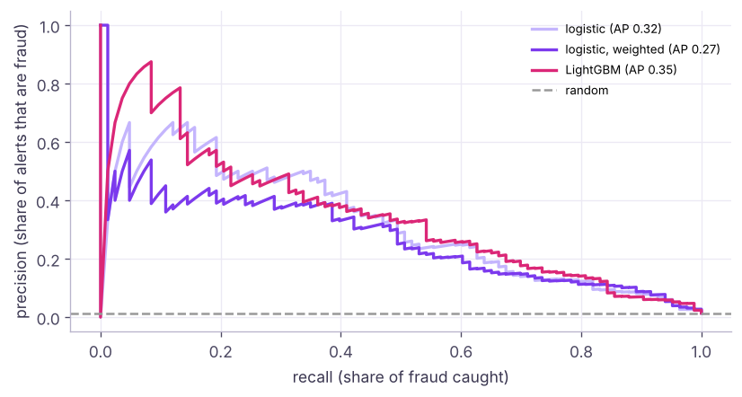
Precision-recall curves: the plain and weighted logistic models rank almost identically (weights shift probabilities, not the ranking); LightGBM is slightly better at most recall levels.
Expected cost
Python
fraud_loss, review_cost = 25000, 150# average fraud amount lost vs cost of reviewing one alert
ts = np.linspace(0.002, 0.6, 300)
cost = [((best_p < t) & (yte == 1)).sum() * fraud_loss + (best_p >= t).sum() * review_cost for t in ts]
i = int(np.argmin(cost)); none = yte.sum() * fraud_loss
print(f"cost-minimising threshold {ts[i]:.3f} (theory for calibrated probabilities: review cost ÷ fraud loss = {review_cost / fraud_loss:.3f}) | alerts {(best_p >= ts[i]).sum()} | total cost ₹{cost[i] / 1e5:.1f} lakh vs ₹{none / 1e5:.1f} lakh with no model ({1 - cost[i] / none:.0%} saved)")
Output
cost-minimising threshold 0.002 (theory for calibrated probabilities: review cost ÷ fraud loss = 0.006) | alerts 1480 | total cost ₹3.2 lakh vs ₹20.8 lakh with no model (84% saved)
When reviewing is cheap compared with a missed fraud, the best threshold is very low: flag everything with even a small chance of fraud, as long as the team has capacity. The capacity constraint above then decides.
When labels are scarce: anomaly detection
If confirmed fraud labels are few or arrive late, unsupervised anomaly detection flags unusual transactions.
Python
from sklearn.ensemble import IsolationForest
iso = IsolationForest(n_estimators=300, contamination=0.02, random_state=0).fit(Xtr)
anom = -iso.score_samples(Xte)
print(f"Isolation Forest (no labels used): ROC-AUC {roc_auc_score(yte, anom):.3f} | PR-AUC {average_precision_score(yte, anom):.3f}")
Output
Isolation Forest (no labels used): ROC-AUC 0.898 | PR-AUC 0.124
It is weaker than a supervised model but useful for cold starts, new fraud patterns, and as an extra feature. In production, fraud systems combine rules, supervised models, anomaly scores and graph features (shared devices, cards, addresses).
Report PR-AUC, recall at the operating precision or capacity, and expected cost.
Start with class weights or scale_pos_weight; try resampling inside the pipeline.
Choose the threshold from business constraints.
Recalibrate probabilities if you changed weights or resampled.
Monitor: base rates and fraud tactics change.
Summary
Key takeaways
With rare positives, accuracy is meaningless; use PR-AUC, recall/precision at the operating point and cost.
Class weights and scale_pos_weight make the loss care about the rare class; they shift probabilities more than rankings.
Undersampling, oversampling and SMOTE must happen inside the training folds (imblearn pipelines).
Threshold moving to fit capacity, precision targets or cost is usually the most effective lever.
Isolation Forest and other anomaly detectors help when labels are scarce.
Quick quiz6 questions · tap an answer to check it
1. Fraud is 1.4% of transactions. Which metric is most informative?
Answer: B. Focus on the rare positive class.
2. What does class_weight="balanced" do?
Answer: A. The rare class counts more in the loss.
3. When should SMOTE be applied?
Answer: A. Otherwise you leak test information.
4. The fraud team can review 100 alerts per day. How do you set the threshold?
Answer: A. Capacity-based thresholding.
5. Class weighting changes recall a lot but ROC-AUC hardly at all. Why?
Answer: A. Similar to moving the threshold.
6. When is Isolation Forest useful?
Answer: A. It scores how unusual a record is.
ExercisePractice
(1) Use BalancedRandomForestClassifier from imbalanced-learn and compare PR-AUC. (2) Calibrate the weighted logistic model with CalibratedClassifierCV and compare Brier scores. (3) Make a time-based split by adding a transaction date and check whether PR-AUC changes.
Show solution
Python
from imblearn.ensemble import BalancedRandomForestClassifier
from sklearn.calibration import CalibratedClassifierCV
from sklearn.metrics import brier_score_loss
brf = BalancedRandomForestClassifier(300, random_state=0, sampling_strategy="all", replacement=True, bootstrap=False).fit(Xtr, ytr)
print(average_precision_score(yte, brf.predict_proba(Xte)[:, 1]))
cal = CalibratedClassifierCV(make_pipeline(StandardScaler(), LogisticRegression(max_iter=2000, class_weight="balanced")), cv=5).fit(Xtr, ytr)
print(brier_score_loss(yte, p_w), brier_score_loss(yte, cal.predict_proba(Xte)[:, 1]))
Interview cornerQuestions you may be asked
Q: How do you handle imbalanced classes?
Use suitable metrics (PR-AUC, recall at precision), stratified validation, class weights or resampling inside the pipeline, strong models (boosting), and a business-driven threshold; collect more positive examples if possible.
Q: Is SMOTE always a good idea?
No. It can create unrealistic samples, it does not help tree ensembles much, and it distorts probabilities; class weights plus threshold tuning are often enough.
Q: Your fraud model has 99% accuracy. Is it good?
Not necessarily: with 1% fraud, predicting "no fraud" always gives 99%. Check recall, precision, PR-AUC and the cost at the chosen threshold.
Statistics & Machine Learning · Lesson 22
Clustering I: K-Means and RFM Customer Segmentation
Find groups without labels. Heuristic RFM segmentation (recency, frequency, monetary scores and named segments) as taught in class, then K-means clustering, scaling and log transforms, choosing k with the elbow method and silhouette score, profiling and naming clusters, and turning segments into marketing actions, on 4,500 retail transactions.
● ML class 6✦ scikit-learn 1.7+Intermediate⏱ 120 min
By the end of this lesson you can
Compute recency, frequency and monetary value per customer from transactions
Build heuristic RFM scores and named segments (Champions, At risk, Hibernating…)
Run K-means, explain its algorithm and its assumptions, and scale features properly
Choose k with the elbow method and silhouette scores, and profile the clusters
Translate segments into actions and measure them
Why segment customers?
Treating every customer the same wastes money: loyal customers get discounts they did not need, while slipping customers get nothing. Segmentation groups similar customers so each group gets the right message.
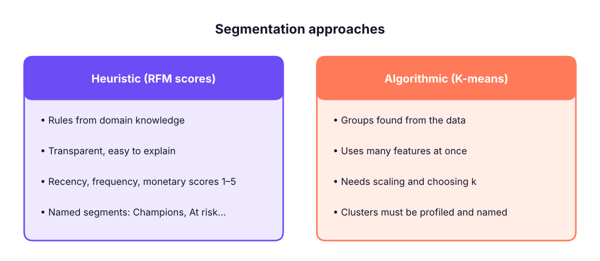
Two ways to segment: business rules (RFM) and algorithms (clustering).
Step 1: RFM table
Recency: days since the last purchase (lower is better). Frequency: number of purchases. Monetary: total spend.
customers recency frequency monetary revenue_%
segment
Champions 135 69.0 13.0 18414.0 62.4
Loyal 93 135.0 9.0 7844.0 22.0
Need attention 85 279.0 5.0 4236.0 6.6
Hibernating / lost 128 414.5 2.0 1836.5 4.6
At risk (were loyal) 14 235.5 9.0 7797.0 2.5
New / promising 45 80.0 3.0 2521.0 1.9
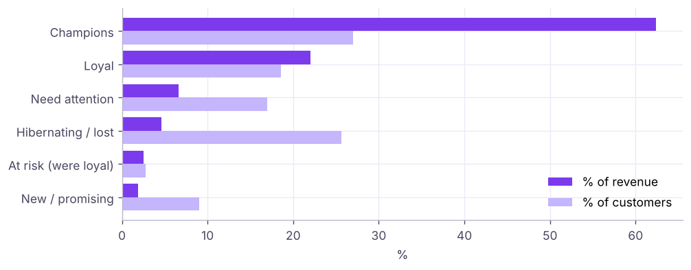
Revenue share vs customer share by RFM segment.
Segment
Typical action
Champions
Reward, early access, referrals; do not over-discount
Loyal
Upsell, loyalty points
New / promising
Onboarding, second-purchase offer
At risk (were loyal)
Win-back call or personalised offer now
Hibernating / lost
Low-cost reactivation; accept some loss
Need attention
Targeted reminders
RFM is transparent and works well, which is why the live class starts there. Its limits: fixed rules, only three variables, and quintile cut-offs that may not match natural groups.
Step 3: K-means clustering
K-means partitions data into k clusters so that each point belongs to the cluster with the nearest centroid (mean), minimising the within-cluster sum of squares (inertia).
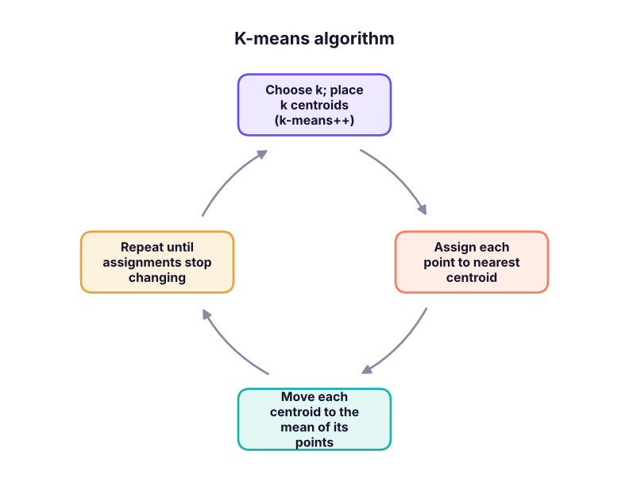
The K-means loop: assign points to the nearest centroid, move centroids to the mean of their points, repeat until nothing changes.
Prepare features: log and scale
Python
from sklearn.preprocessing import StandardScaler
from sklearn.cluster import KMeans
feat = pd.DataFrame({"log_recency": np.log1p(rfm.recency), "log_frequency": np.log1p(rfm.frequency), "log_monetary": np.log1p(rfm.monetary)})
print("skew before log:", rfm[["recency", "frequency", "monetary"]].skew().round(2).to_dict(), "| after:", feat.skew().round(2).to_dict())
Z = StandardScaler().fit_transform(feat)
K-means uses Euclidean distance, so (1) scale features or the largest one (monetary) dominates, and (2) log-transform skewed variables so a few big spenders do not form their own clusters.
Choosing k
Python
from sklearn.metrics import silhouette_score, davies_bouldin_score
rows = []
for k inrange(2, 9):
km = KMeans(n_clusters=k, n_init=20, random_state=0).fit(Z)
rows.append({"k": k, "inertia": round(km.inertia_, 1), "silhouette": round(silhouette_score(Z, km.labels_), 3), "davies_bouldin": round(davies_bouldin_score(Z, km.labels_), 3)})
kt = pd.DataFrame(rows); print(kt.to_string(index=False))
Elbow curve (inertia) and silhouette score by number of clusters.
Elbow method: inertia always falls as k grows; look for the bend where extra clusters stop helping much.
Silhouette score (−1 to 1): how close each point is to its own cluster compared with the next one; higher is better.
Davies-Bouldin (lower is better).
Business sense: the number of segments the team can actually act on (often 3–6).
Here the silhouette is highest at k = 2 (it simply splits active from lapsed customers), with no clear elbow afterwards. We choose k = 4: the scores are close, and four groups give the marketing team more useful distinctions. Statistics guide the choice; the business decides.
segment At risk (were loyal) Champions Hibernating / lost Loyal Need attention New / promising
cluster_name
High-value regulars 1 101 0 15 0 0
Lapsed low-value 0 0 125 0 15 0
Recent occasional buyers 0 4 0 14 16 45
Steady mid-value 13 30 3 64 54 0
Name clusters from their profiles (median recency, frequency, spend), not from the cluster number. The cross-tab shows how the data-driven clusters line up with the rule-based RFM segments.
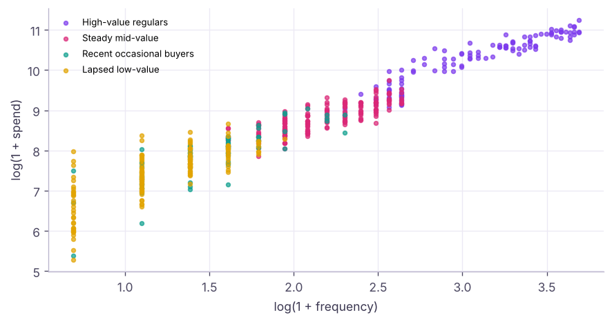
Customers by log frequency and log spend, coloured by K-means cluster (centroids marked).
K-means assumptions and limits
K-means assumes / needs
If not
Alternative
Roughly spherical, similar-size clusters
Elongated or uneven clusters split badly
Gaussian mixtures, DBSCAN (next lesson)
Numeric, scaled features
Categories distort distances
K-prototypes, Gower distance
k chosen in advance
Silhouette, business needs, hierarchical dendrogram
Sensitive to outliers and initialisation
Log/robust scaling, n_init, k-means++ (default)
From segments to action
Write a one-line profile and a goal for each segment (e.g. "At risk: bought often, silent for 4+ months → win back").
Design an offer or message per segment.
Test it: randomly hold out part of each segment as control (lesson 6) and measure incremental revenue.
Refresh the segmentation monthly and track how customers move between segments.
Summary
Key takeaways
RFM turns transactions into recency, frequency and monetary value; quintile scores and rules give transparent named segments.
K-means assigns points to the nearest of k centroids, minimising inertia; log-transform skewed variables and scale features first.
Choose k with the elbow, silhouette and Davies-Bouldin scores plus business sense; profile and name clusters by their medians.
K-means prefers spherical clusters and numeric data; use other methods for odd shapes or categorical data.
Segments are only valuable when they drive tested actions.
Quick quiz6 questions · tap an answer to check it
1. What does "recency" measure in RFM?
Answer: A. Lower recency = more recently active.
2. Why scale features before K-means?
Answer: A. Spend in rupees would dwarf frequency.
3. What does inertia measure?
Answer: A. It always decreases as k grows.
4. A silhouette score near 0 means…
Answer: A. Closer to 1 is better separation.
5. A segment "bought often but not for 5 months" is best called…
Answer: B. Action: win-back now.
6. How should you name clusters?
Answer: A. Names should describe behaviour.
ExercisePractice
(1) Add avg_order_value and tenure_days (days since first purchase) to the features and re-cluster: does the silhouette improve? (2) Compare K-means with k = 3 and k = 5 profiles: which is more actionable? (3) Compute RFM on the Superstore data for 2025 and list the top 10 Champions.
Q: How do you choose the number of clusters?
Elbow plot of inertia, silhouette and Davies-Bouldin scores, stability across random seeds, and above all whether the segments are distinct and actionable.
Q: What are the limitations of K-means?
k must be chosen; it assumes spherical, similar-sized clusters; it is sensitive to scaling, outliers and initialisation; it handles only numeric distances.
Q: Explain RFM segmentation.
Score customers on recency, frequency and monetary value (usually by quintiles), combine the scores, and map combinations to named segments with tailored actions.
Statistics & Machine Learning · Lesson 23
Clustering II and Dimensionality Reduction: Hierarchical, DBSCAN, Gaussian Mixtures, PCA, t-SNE and UMAP
Go beyond K-means. Agglomerative hierarchical clustering with dendrograms and linkage choices, density-based DBSCAN for irregular shapes and outliers, Gaussian mixture models with soft assignments, and dimensionality reduction with PCA (explained variance, loadings, compression), plus t-SNE and UMAP for visualisation, applied to video-game sales and HR data.
● ML track (added)✦ scikit-learn 1.7+Advanced⏱ 120 min
By the end of this lesson you can
Build and read a dendrogram and choose a linkage method
Use DBSCAN to find irregular clusters and noise points, and tune eps and min_samples
Fit Gaussian mixture models and use soft cluster probabilities and BIC
Apply PCA, read explained variance and loadings, and use PCA before modelling
Know when to use t-SNE or UMAP and their pitfalls
Hierarchical clustering
Agglomerative clustering starts with every point as its own cluster and repeatedly merges the two closest clusters. The full merge history is a tree, the dendrogram: cut it at a height to get clusters, with no need to fix k in advance.
Three clear groups appear: role-playing games sell about 40% of units in Japan, fighting and puzzle games about 27%, and the other genres are driven by North America and Europe with only 13–15% in Japan. A publisher could use this to plan regional launches and marketing budgets.
Linkage
Merges clusters with…
Behaviour
Ward
Smallest increase in within-cluster variance
Compact, similar-size clusters (default choice)
Complete
Smallest maximum pairwise distance
Compact clusters, sensitive to outliers
Average
Smallest average distance
Balanced
Single
Smallest minimum distance
Long "chains"; finds odd shapes but chains noise
Hierarchical clustering is ideal for small datasets (hundreds to a few thousand items) where the tree itself is informative: product taxonomies, store groupings, gene families. It is O(n²) in memory, so not for millions of rows.
DBSCAN: density-based clusters and noise
DBSCAN groups points that are densely packed (at least min_samples neighbours within distance eps) and labels isolated points as noise (−1). It finds clusters of any shape and does not need k.
K-means vs DBSCAN on non-spherical data with outliers: DBSCAN follows the shapes and marks outliers (grey).
Python
from sklearn.neighbors import NearestNeighbors
from sklearn.metrics import silhouette_score
d8 = np.sort(NearestNeighbors(n_neighbors=8).fit(Xm).kneighbors(Xm)[0][:, -1])
print("8th-neighbour distance percentiles (pick eps near the 'knee'):", np.percentile(d8, [50, 80, 90, 95]).round(3))
for eps in (0.08, 0.12, 0.15, 0.25):
lab = DBSCAN(eps=eps, min_samples=8).fit_predict(Xm)
print(f"eps {eps}: clusters {len(set(lab)) - (-1 in lab)} | noise points {(lab == -1).sum()}")
Tuning: set min_samples ≈ 2 × number of features (or more for noisy data); choose eps from the "knee" of the sorted k-nearest-neighbour distance plot. DBSCAN struggles when clusters have very different densities (HDBSCAN, available as sklearn.cluster.HDBSCAN, handles that).
A GMM assumes the data come from a mix of k Gaussian (bell-shaped) clusters, which may be elongated and of different sizes. Each point gets a probability of belonging to each cluster (soft clustering).
Python
from sklearn.mixture import GaussianMixture
hr = pd.read_csv("hr_employees.csv")
Xh = StandardScaler().fit_transform(np.c_[hr.age, np.log(hr.monthly_income), hr.years_at_company])
bics = {k: round(GaussianMixture(k, covariance_type="full", random_state=0).fit(Xh).bic(Xh), 1) for k inrange(1, 7)}
print("BIC by k (lower is better):", bics)
g = GaussianMixture(min(bics, key=bics.get), covariance_type="full", random_state=0).fit(Xh)
probs = g.predict_proba(Xh)
hr["gmm"] = probs.argmax(1); hr["certainty"] = probs.max(1).round(2)
print(hr.groupby("gmm").agg(n=("age", "size"), age=("age", "median"), income=("monthly_income", "median"), years=("years_at_company", "median"), attrition=("attrition", lambda s: round((s == "Yes").mean(), 3))))
print("share of employees assigned with < 70% certainty:", round((hr.certainty < 0.7).mean(), 3))
Output
BIC by k (lower is better): {1: 11991.6, 2: 11322.1, 3: 10937.7, 4: 11010.3, 5: 9212.8, 6: 9231.8}
n age income years attrition
gmm
0 436 35.5 65000.0 4.0 0.271
1 271 34.0 95833.0 1.0 0.273
2 328 34.0 51833.0 0.0 0.320
3 183 25.0 90833.0 5.0 0.246
4 282 38.0 119541.5 8.0 0.167
share of employees assigned with < 70% certainty: 0.075
GMMs choose k with BIC/AIC, give uncertainty for borderline points, and are also used for anomaly detection (low likelihood = unusual).
Dimensionality reduction: PCA
Principal component analysis finds new axes (principal components) that are uncorrelated linear combinations of the original features, ordered by how much variance they explain. Keeping the first few compresses the data with minimal information loss.
PCA finds the direction of greatest variance (PC1) and the next orthogonal direction (PC2).
Reading loadings: PC1 loads heavily on years at company and income (and partly age), so it is a "seniority" axis. Later components capture what is left (satisfaction, distance, rating), which are nearly uncorrelated with each other, so each needs its own component.
Python
from sklearn.datasets import load_digits
from sklearn.linear_model import LogisticRegression
from sklearn.pipeline import make_pipeline
from sklearn.model_selection import cross_val_score
digits = load_digits()
p = PCA().fit(digits.data); k95 = int(np.searchsorted(np.cumsum(p.explained_variance_ratio_), 0.95) + 1)
print(f"digits: {digits.data.shape[1]} pixel features → {k95} components keep 95% of the variance")
for n in (5, 15, k95, 64):
s = cross_val_score(make_pipeline(StandardScaler(), PCA(n), LogisticRegression(max_iter=3000)), digits.data, digits.target, cv=5).mean()
print(f" {n:2d} components → logistic regression accuracy {s:.3f}")
Linear only; captures variance, not class separation
Speeding up distance-based models
Fit PCA on training data only (inside the pipeline)
t-SNE and UMAP for visualisation
t-SNE and UMAP are non-linear methods that place similar points close together in 2-D. They make beautiful maps of embeddings, images and text.
Handwritten digits (64 features) projected to 2-D by PCA and by t-SNE. t-SNE separates the digit groups much more clearly.
Pitfalls: distances between far-apart groups and cluster sizes in t-SNE plots are not meaningful; results change with perplexity and random seed; do not cluster on t-SNE output. UMAP (pip install umap-learn) is faster and preserves more global structure. Both are mainly for looking, not for features in production models.
Choosing a method
Data / goal
Method
Numeric, roughly round clusters, large n
K-means (MiniBatchKMeans for very large)
Small n, want a hierarchy
Agglomerative + dendrogram
Odd shapes, outliers, unknown k
DBSCAN / HDBSCAN
Overlapping, elliptical clusters, need probabilities
Gaussian mixture
Mixed numeric + categorical
K-prototypes, Gower distance + hierarchical
Too many correlated features
PCA first
Visualise embeddings
UMAP, t-SNE
Summary
Key takeaways
Agglomerative clustering merges closest clusters; the dendrogram shows structure at every level; Ward linkage is the usual default.
DBSCAN finds dense regions of any shape and labels noise; tune eps with a k-distance plot.
Gaussian mixtures give soft, probabilistic clusters of different shapes; choose k with BIC.
PCA creates uncorrelated components ordered by explained variance; read loadings to name them; fit inside pipelines.
t-SNE and UMAP are for visualisation; distances and sizes in their plots can mislead.
Quick quiz6 questions · tap an answer to check it
1. What does a dendrogram show?
Answer: A. Cut it to choose clusters.
2. Which method labels outliers as noise?
Answer: B. Label −1.
3. What does a Gaussian mixture give that K-means does not?
Answer: A. Soft assignments.
4. PC1 explains 45% of the variance. What does that mean?
Answer: A. Components are ordered by variance explained.
5. Why scale features before PCA?
Answer: A. Variance depends on units.
6. Can you trust the distance between two far-apart clusters in a t-SNE plot?
Answer: B. Use it to look, not to measure.
ExercisePractice
(1) Cluster video-game platforms by regional mix with hierarchical clustering. (2) Run DBSCAN on standardised RFM features from the previous lesson: how many customers are noise? (3) Use PCA to reduce the telecom churn features to 3 components and compare logistic-regression AUC before and after.
Q: K-means vs hierarchical vs DBSCAN?
K-means: fast, needs k, round clusters. Hierarchical: no k upfront, a full tree, small data. DBSCAN: arbitrary shapes and noise detection, needs density parameters and struggles with varying densities.
Q: What is PCA and when would you use it?
A linear transformation to uncorrelated components ordered by variance; used to compress correlated features, remove multicollinearity, speed up models and visualise data.
Q: How do you interpret principal components?
Through their loadings: the weight of each original feature in the component, naming it after the features with the largest absolute weights.
Statistics & Machine Learning · Lesson 24
Time-Series Forecasting: Decomposition, Baselines, ETS, ARIMA and ML with Lag Features
Forecast demand properly. Components of a time series (trend, seasonality, noise), decomposition with STL, stationarity and autocorrelation (ADF, ACF/PACF), honest baselines (naive, seasonal naive, moving average), exponential smoothing (Holt-Winters), SARIMA, machine learning with lag and calendar features, backtesting with forecast metrics (MAE, RMSE, MAPE, WAPE), prediction intervals, and a guide to Prophet, statsforecast and foundation models.
● ML track (added) · Power BI forecasting✦ statsmodels 0.1x · LightGBM 4Advanced⏱ 130 min
By the end of this lesson you can
Decompose a series into trend, seasonality and remainder and test stationarity
Read ACF and PACF plots and difference a series
Build and evaluate naive, seasonal naive, Holt-Winters and SARIMA forecasts
Engineer lag, rolling and calendar features and forecast with gradient boosting
Backtest with a time-ordered holdout, compare models with WAPE/MAPE and report intervals
The data
Python
import pandas as pd, numpy as np, matplotlib.pyplot as plt, warnings
warnings.filterwarnings("ignore")
d = pd.read_csv("daily_sales.csv", parse_dates=["date"]).set_index("date").asfreq("D")
y = d.units_sold
print(y.shape, y.index.min().date(), "to", y.index.max().date(), "| missing days:", y.isna().sum())
print(y.resample("YE").sum().to_dict())
print("mean units by weekday:", y.groupby(y.index.day_name()).mean().round(0).to_dict())
Output
(1461,) 2022-01-01 to 2025-12-31 | missing days: 0
{Timestamp('2022-12-31 00:00:00'): 85031, Timestamp('2023-12-31 00:00:00'): 100536, Timestamp('2024-12-31 00:00:00'): 116798, Timestamp('2025-12-31 00:00:00'): 132920}
mean units by weekday: {'Friday': 289.0, 'Monday': 288.0, 'Saturday': 320.0, 'Sunday': 323.0, 'Thursday': 288.0, 'Tuesday': 289.0, 'Wednesday': 287.0}
Components of a time series
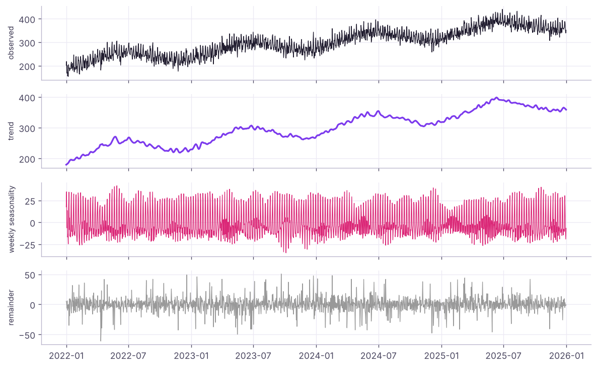
STL decomposition of daily units into trend, weekly seasonality and remainder.
strength of trend 0.95 | strength of weekly seasonality 0.64 (0 = none, 1 = very strong)
Stationarity and autocorrelation
Many classical models (ARIMA) need a stationary series: constant mean and variance over time. Trends and seasonality break that; differencing removes them.
Python
from statsmodels.tsa.stattools import adfuller
for name, s in [("original", y), ("first difference", y.diff()), ("first + weekly difference", y.diff().diff(7))]:
stat, p = adfuller(s.dropna())[:2]
print(f"{name:26s} ADF p-value {p:.4f} → {'stationary' if p < 0.05 else 'NOT stationary'}")
Output
original ADF p-value 0.4455 → NOT stationary
first difference ADF p-value 0.0000 → stationary
first + weekly difference ADF p-value 0.0000 → stationary
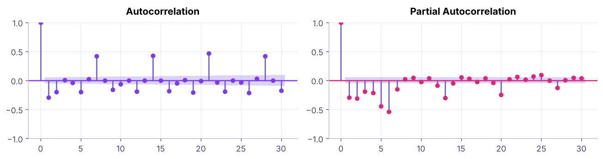
Autocorrelation (ACF) and partial autocorrelation (PACF) of the differenced series. Spikes at lags 7, 14, 21 reveal weekly seasonality.
ACF shows correlation with past values at each lag; PACF shows the direct effect of each lag after removing shorter ones. They guide the AR and MA orders of ARIMA models.
Train/test split in time
Python
h = 90# forecast horizon: the last 90 days
train, test = y.iloc[:-h], y.iloc[-h:]
print(f"train {train.index.min().date()}–{train.index.max().date()} ({len(train)} days) | test {test.index.min().date()}–{test.index.max().date()}")
defmetrics(actual, fc):
e = actual - fc
return {"MAE": round(float(e.abs().mean()), 1), "RMSE": round(float((e ** 2).mean() ** .5), 1), "MAPE_%": round(float(100 * (e.abs() / actual).mean()), 2),
"WAPE_%": round(float(100 * e.abs().sum() / actual.sum()), 2), "bias_%": round(float(100 * -e.sum() / actual.sum()), 2)} # bias > 0 = over-forecast
results, forecasts = {}, {}
Output
train 2022-01-01–2025-10-02 (1371 days) | test 2025-10-03–2025-12-31
Never shuffle time series: always train on the past and test on the future.
Metric
Use
MAE / RMSE
Error in units; RMSE punishes big misses
MAPE
Percentage error; breaks when actuals are near zero
WAPE
Total absolute error ÷ total actuals; robust, preferred in retail
Bias
Systematic over- or under-forecasting (stock-outs vs excess inventory)
Baselines
Python
forecasts["naive"] = pd.Series(train.iloc[-1], index=test.index)
forecasts["seasonal naive (last week)"] = pd.Series(np.tile(train.iloc[-7:].values, h // 7 + 1)[:h], index=test.index)
forecasts["moving average (28 days)"] = pd.Series(train.iloc[-28:].mean(), index=test.index)
for k, f inforecasts.items(): results[k] = metrics(test, f)
print(pd.DataFrame(results).T)
ARIMA(p, d, q) combines autoregression (p past values), differencing (d) and moving average of past errors (q). SARIMA adds seasonal terms (P, D, Q, s).
Python
from statsmodels.tsa.statespace.sarimax import SARIMAX
sar = SARIMAX(train, order=(1, 1, 1), seasonal_order=(1, 1, 1, 7)).fit(disp=False)
fc = sar.get_forecast(h); forecasts["SARIMA(1,1,1)(1,1,1,7)"] = fc.predicted_mean; ci = fc.conf_int(alpha=0.05)
results["SARIMA(1,1,1)(1,1,1,7)"] = metrics(test, forecasts["SARIMA(1,1,1)(1,1,1,7)"])
inside = ((test >= ci.iloc[:, 0]) & (test <= ci.iloc[:, 1])).mean()
print(f"AIC {sar.aic:.0f} | {results['SARIMA(1,1,1)(1,1,1,7)']} | 95% interval covers {inside:.0%} of test days")
Output
AIC 11298 | {'MAE': 16.9, 'RMSE': 20.2, 'MAPE_%': 4.82, 'WAPE_%': 4.69, 'bias_%': 4.06} | 95% interval covers 96% of test days
Use pmdarima.auto_arima or statsforecast.AutoARIMA to search orders automatically by AIC.
Machine learning with lag features
Turn forecasting into regression: predict today's value from lags (same day last week), rolling statistics and calendar features.
Python
import lightgbm as lgb
defmake_features(s):
f = pd.DataFrame(index=s.index)
f["dow"] = s.index.dayofweek; f["month"] = s.index.month; f["dayofyear"] = s.index.dayofyear; f["t"] = np.arange(len(s))
for lag in (7, 14, 21, 28, 364): f[f"lag_{lag}"] = s.shift(lag)
f["roll_mean_28_lag7"] = s.shift(7).rolling(28).mean(); f["roll_std_28_lag7"] = s.shift(7).rolling(28).std()
return f
F = make_features(y)
Xtr, ytr = F.loc[train.index].dropna(), train.loc[F.loc[train.index].dropna().index]
model = lgb.LGBMRegressor(n_estimators=600, learning_rate=0.03, num_leaves=15, min_child_samples=20, verbose=-1, random_state=0, linear_tree=True).fit(Xtr, ytr)
Lags are at least 7 days, so the model can forecast up to a week ahead without knowing the in-between values. For a 90-day horizon we forecast recursively: predict a week, feed predictions back as lags, repeat.
Python
hist = train.copy()
for day in test.index:
s = pd.concat([hist, pd.Series([np.nan], index=[day])])
hist.loc[day] = model.predict(make_features(s).iloc[[-1]])[0]
forecasts["LightGBM (lags, recursive)"] = hist.loc[test.index]; results["LightGBM (lags, recursive)"] = metrics(test, forecasts["LightGBM (lags, recursive)"])
print(pd.DataFrame(results).T.sort_values("WAPE_%"))
Holt-Winters wins clearly here (WAPE under 3%, almost no bias), while this LightGBM set-up does worse than the seasonal naive baseline. Two reasons: errors accumulate when 90 days are forecast recursively from the model's own predictions, and with a single, smooth series there is little for a tree model to learn that ETS does not already capture. ML models shine with many related series and external drivers (prices, promotions, weather, holidays). The lesson: always benchmark against simple models.
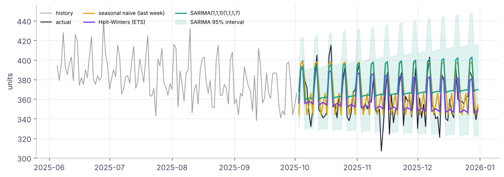
The last 120 days of training data, the 90-day test period and three forecasts.
Backtesting
One holdout can be lucky. Rolling-origin backtests repeat the exercise from several start dates.
Very fast AutoARIMA/AutoETS for thousands of series
Prophet
Trend + seasonality + holidays with intuitive settings
LightGBM / XGBoost with lags
Many related series, external drivers (price, promotions, weather)
Deep learning (N-BEATS, TFT) and foundation models (TimeGPT, Chronos, TimesFM)
Large collections of series, zero-shot forecasts
Excel / Power BI forecast
Quick ETS forecasts for business users
Practical tips: forecast at the level decisions are made (store × product × week), add known future drivers (holidays, promotions, prices), forecast intervals not just points, monitor bias, and combine forecasts (an average of ETS and ML often beats both).
Summary
Key takeaways
Decompose series into trend, seasonality and remainder (STL); difference to make them stationary (ADF test); read ACF/PACF.
Split by time; evaluate with MAE, RMSE, MAPE, WAPE and bias; always beat the seasonal naive baseline.
Holt-Winters (ETS) models level, trend and seasonality; SARIMA models autocorrelation and seasonal differences, with prediction intervals.
Gradient boosting with lag, rolling and calendar features is a strong approach, especially with many series and external drivers; forecast recursively for long horizons.
Backtest from several origins and choose by business metrics.
Quick quiz6 questions · tap an answer to check it
1. Which baseline must every daily retail forecast beat?
Answer: B. It captures weekly seasonality for free.
2. What does differencing do?
Answer: A. y_t − y_(t−1).
3. Why is WAPE often preferred to MAPE?
Answer: A. Total absolute error / total actuals.
4. In SARIMA(1,1,1)(1,1,1,7), what is 7?
Answer: A. s = 7.
5. Why shouldn't you shuffle data when validating forecasts?
Answer: A. Always validate forward in time.
6. A lag-7 feature allows a model to forecast how many days ahead directly?
Answer: A. Beyond that, forecast recursively or use direct models.
ExercisePractice
(1) Aggregate to weekly totals and forecast 12 weeks with Holt-Winters (seasonal period 52 needs 2+ years of data). (2) Add a Diwali/holiday flag feature to the LightGBM model. (3) Average the ETS and SARIMA forecasts: does the WAPE improve?
Show solution
Python
wk = y.resample("W-SUN").sum().iloc[1:-1]
ewk = ExponentialSmoothing(wk.iloc[:-12], trend="add", seasonal="add", seasonal_periods=52).fit().forecast(12)
print(metrics(wk.iloc[-12:], ewk))
combo = (forecasts["Holt-Winters (ETS)"] + forecasts["SARIMA(1,1,1)(1,1,1,7)"]) / 2; print(metrics(test, combo))
diwali = pd.to_datetime(["2022-10-24", "2023-11-12", "2024-11-01", "2025-10-20"])
F["festive"] = [int(any(abs((d - x).days) <= 3for x in diwali)) for d in F.index]
Interview cornerQuestions you may be asked
Q: How would you forecast sales for 5,000 products in 200 stores?
Hierarchical, automated approach: a global gradient-boosting model with lags, calendar, price and promotion features (or fast AutoETS per series), backtesting by store-product, reconciliation across levels, and monitoring of bias and accuracy.
Q: What is stationarity and why does it matter?
Constant statistical properties over time; ARIMA-type models assume it, so we difference or transform the series first.
Q: How do you evaluate a forecasting model?
Time-ordered holdout or rolling-origin backtests with MAE/WAPE and bias, comparison with a seasonal naive baseline, and checking prediction-interval coverage.
Statistics & Machine Learning · Lesson 25
NLP and Text Analytics: Cleaning, TF-IDF, Sentiment Classification, Topics and Embeddings
Turn customer reviews into insight. Text cleaning and tokenisation, stop words, stemming and lemmatisation, bag-of-words and TF-IDF with n-grams, a sentiment classifier with error analysis, aspect-level insight, topic modelling with NMF, document similarity, and how embeddings and LLMs change NLP, on 3,000 e-commerce reviews.
● ML track (added) · GenAI bridge✦ scikit-learn 1.7+ · 2026 practiceAdvanced⏱ 130 min
By the end of this lesson you can
Clean and tokenise text and decide when to remove stop words, stem or lemmatise
Represent documents with bag-of-words and TF-IDF (with n-grams) and read the vocabulary
Train, evaluate and interpret a sentiment classifier, including error analysis
Extract topics with NMF and aspect-level sentiment with simple rules
Explain word and sentence embeddings and when to use LLMs instead
The NLP pipeline
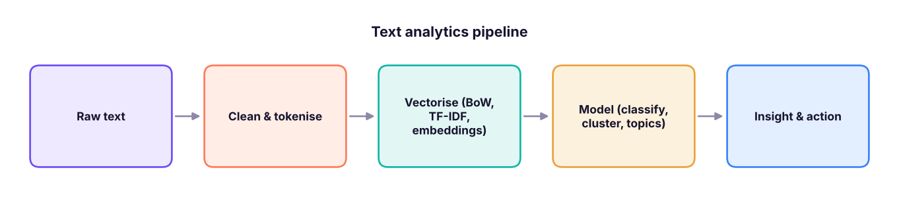
A classical text-analytics pipeline.
Python
import pandas as pd, numpy as np, re
pd.set_option("display.width", 160); pd.set_option("display.max_colwidth", 90)
rv = pd.read_csv("customer_reviews.csv", parse_dates=["date"])
print(rv.shape, rv.sentiment.value_counts(normalize=True).round(3).to_dict())
print(rv.groupby("product").rating.mean().round(2).sort_values().to_dict())
print(rv.sample(5, random_state=3)[["rating", "review_text"]].to_string(index=False))
rv["n_words"] = rv.review_text.str.split().str.len()
print("words per review:", rv.n_words.describe().round(1)[["mean", "50%", "max"]].to_dict(), "| by sentiment:", rv.groupby("sentiment").n_words.mean().round(1).to_dict())
Output
(3000, 8) {'positive': 0.53, 'negative': 0.321, 'neutral': 0.149}
{'Tablet': 3.27, 'Smartwatch': 3.29, 'Speaker': 3.3, 'Earbuds': 3.31, 'Smartphone': 3.33, 'Laptop': 3.36}
rating review_text
4 Superb product. Customer support solved my issue quickly, the app is totally smooth, charges really totally fast :)
5 Price is very very reasonable for these features though the buttons are loose, no issues so far
2 Worst purchase ever. Sound is tinny, not wroth it
5 Highly recommend. Calls are crystal clear!
5 Highly recommend. Build quality feels premium, price is very reasonable for these features, no issues so far.
words per review: {'mean': 12.9, '50%': 13.0, 'max': 34.0} | by sentiment: {'negative': 13.9, 'neutral': 9.2, 'positive': 13.3}
Cleaning and tokenising
Python
STOP = {"the", "a", "an", "is", "it", "and", "to", "of", "for", "in", "on", "was", "this", "that", "with", "my", "i", "very", "so", "are", "be", "at", "as", "after", "all"}
NEGATIONS = {"not", "no", "never", "don't", "can't", "isn't", "wasn't"}
FIX = {"batery": "battery", "qualty": "quality", "delivry": "delivery", "realy": "really", "scren": "screen", "wroth": "worth", "bekaar": "useless", "badiya": "good"}
defclean(text, remove_stop=True):
t = text.lower()
t = re.sub(r"[:;]-?[()]", " ", t) # emoticons
t = re.sub(r"[^a-z' ]+", " ", t) # keep letters and apostrophes
tokens = [FIX.get(w, w) for w int.split()]
if remove_stop: tokens = [w for w in tokens if w notin STOP or w in NEGATIONS]
return" ".join(tokens)
ex = rv.review_text.iloc[7]
print("raw: ", ex); print("clean:", clean(ex))
rv["clean"] = rv.review_text.map(clean)
Output
raw: Battery backup is totally superb but sound is tinny. Average product for daily use
clean: battery backup totally superb but sound tinny average product daily use
Step
Purpose
Caution
Lower-casing
"Battery" = "battery"
Loses emphasis ("GREAT")
Remove punctuation, numbers, URLs
Reduce noise
Prices and model numbers may matter
Spelling / slang normalisation
Merge variants ("batery", Hinglish "badiya")
Needs a dictionary
Stop-word removal
Drop frequent function words
Never drop negations ("not") for sentiment
Stemming (Porter, Snowball)
"charging", "charged" → "charg"
Crude, can merge different words
Lemmatisation (spaCy)
"better" → "good", "batteries" → "battery"
Slower, needs a language model
Libraries: spaCy (fast tokenisation, lemmas, entities), NLTK (classic teaching toolkit), regex; for Indian languages, IndicNLP and multilingual models.
Bag-of-words and TF-IDF
Bag-of-words counts each word per document, ignoring order. TF-IDF down-weights words that appear in many documents (like "product") and up-weights distinctive ones:
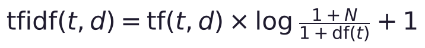
Python
from sklearn.feature_extraction.text import CountVectorizer, TfidfVectorizer
docs = ["battery drains fast", "battery lasts all day", "screen is not great", "great screen and great battery"]
cv = CountVectorizer(); bow = cv.fit_transform(docs)
print(pd.DataFrame(bow.toarray(), columns=cv.get_feature_names_out(), index=[f"doc{i}"for i inrange(4)]))
tf = TfidfVectorizer(); tfm = tf.fit_transform(docs)
print(pd.DataFrame(tfm.toarray().round(2), columns=tf.get_feature_names_out(), index=[f"doc{i}"for i inrange(4)]).loc[:, ["battery", "great", "not", "drains"]])
bi = CountVectorizer(ngram_range=(1, 2)).fit(["screen is not great"]); print("with bigrams:", bi.get_feature_names_out().tolist())
Output
all and battery day drains fast great is lasts not screen
doc0 0 0 1 0 1 1 0 0 0 0 0
doc1 1 0 1 1 0 0 0 0 1 0 0
doc2 0 0 0 0 0 0 1 1 0 1 1
doc3 0 1 1 0 0 0 2 0 0 0 1
battery great not drains
doc0 0.41 0.00 0.00 0.64
doc1 0.35 0.00 0.00 0.00
doc2 0.00 0.44 0.56 0.00
doc3 0.30 0.74 0.00 0.00
with bigrams: ['great', 'is', 'is not', 'not', 'not great', 'screen', 'screen is']
Bigrams such as "not great" keep some word order, which matters for sentiment.
Sentiment classifier
Python
from sklearn.model_selection import train_test_split
from sklearn.pipeline import make_pipeline
from sklearn.linear_model import LogisticRegression
from sklearn.metrics import classification_report, confusion_matrix, accuracy_score
Xtr, Xte, ytr, yte = train_test_split(rv.clean, rv.sentiment, test_size=0.25, stratify=rv.sentiment, random_state=0)
for name, vec in [("unigrams", TfidfVectorizer(min_df=2)), ("uni + bigrams", TfidfVectorizer(ngram_range=(1, 2), min_df=2, sublinear_tf=True))]:
m = make_pipeline(vec, LogisticRegression(max_iter=3000, C=5)).fit(Xtr, ytr)
print(f"{name:14s} accuracy {accuracy_score(yte, m.predict(Xte)):.3f} | vocabulary {len(m[0].vocabulary_):,}")
clf = m
print(classification_report(yte, clf.predict(Xte), digits=3))
labels = ["negative", "neutral", "positive"]
print(pd.DataFrame(confusion_matrix(yte, clf.predict(Xte), labels=labels), index=[f"true {l}"for l in labels], columns=[f"pred {l}"for l in labels]))
vocab = np.array(clf[0].get_feature_names_out())
for i, c inenumerate(clf[-1].classes_):
top = np.argsort(-clf[-1].coef_[i])[:8]; print(f"{c:9s} ←", vocab[top].tolist())
45 errors
text rating true pred confidence
Happy with the purchase. Calls are crystal super clear, arrived a day early, price is very reasonable for these features 3 neutral positive 1.00
Bahut badiya. Bass is rich, replacement was smooth 2 negative positive 1.00
Worst purchase ever. Too much bloatware, battery drains too fast! 3 neutral negative 0.99
Loved it! setup took two minutes, great value for money, sound is really clear and loud 3 neutral positive 0.99
Bahut badiya. The app is super smooth, replacement was smooth 3 neutral positive 0.99
Superb product. Bass is rich!! 2 negative positive 0.99
Reading errors is the most useful step in NLP. Typical causes here: noisy labels (a 1-star rating on a positive text), mixed reviews ("good screen but weak battery") and genuinely neutral wording. Fixes include better labels, aspect-level models, or an LLM for difficult cases.
Aspect-level insight
Overall sentiment hides what customers like or dislike. A simple keyword approach already gives actionable results:
Python
ASPECTS = {"battery": r"batter|charg", "screen": r"screen|display|pixel|touch", "sound": r"sound|bass|speaker|mic", "build": r"build|hinge|button|finish|plastic",
"delivery": r"deliver|courier|box|packag|arriv", "service": r"support|service|refund|replacement|care", "price": r"price|money|rupee|expensive|worth", "software": r"app|update|bloatware|setup"}
low = rv.review_text.str.lower()
rows = []
for a, pat inASPECTS.items():
m = low.str.contains(pat, regex=True)
rows.append({"aspect": a, "mentions": int(m.sum()), "share_negative_%": round(100 * (rv.sentiment[m] == "negative").mean(), 1), "avg_rating": round(rv.rating[m].mean(), 2)})
asp = pd.DataFrame(rows).sort_values("share_negative_%", ascending=False); print(asp.to_string(index=False))
print(rv.assign(battery=low.str.contains(ASPECTS["battery"])).query("battery").groupby("product").rating.mean().round(2).sort_values().head(3).to_dict())
Production systems use aspect-based sentiment analysis models or LLM prompts ("list each product aspect mentioned and its sentiment as JSON").
Topic modelling
Topic models discover groups of words that co-occur, without labels. NMF on TF-IDF is fast and gives readable topics (LDA on counts is the classic alternative; BERTopic uses embeddings).
topic 0: battery, day, superb, screen, lasts, clear, smooth
topic 1: support, support solved, solved issue, issue quickly, solved, issue, customer support
topic 2: centre, service centre, service, centre staff, staff, helpful, waiting days
topic 3: weeks, high volume, speaker, high, crackles high, crackles, volume
topic 4: quality, feels, build, premium, build quality, quality feels, feels premium
topic 5: value, value money, money, great value, great, packaging, safe
topic 0 1 2 3 4 5
reviews 1015.00 197.00 230.00 915.00 393.00 250.00
avg_rating 4.29 3.91 3.17 1.97 3.14 4.18
Name each topic from its top words (for example "battery and charging", "delivery and packaging") and track topic volume and rating over time.
Similarity search
Python
from sklearn.metrics.pairwise import cosine_similarity
from sklearn.decomposition import TruncatedSVD
lsa = make_pipeline(TfidfVectorizer(ngram_range=(1, 2), min_df=2, stop_words="english"), TruncatedSVD(100, random_state=0)).fit(rv.review_text)
E = lsa.transform(rv.review_text)
for query in ["the battery runs out quickly and charging takes forever", "phone heats up and power does not last"]:
sims = cosine_similarity(lsa.transform([query]), E)[0]; best = np.argsort(-sims)[:3]
print("query:", query); [print(f" {sims[i]:.2f} {rv.review_text.iloc[i]}") for i in best]
Output
query: the battery runs out quickly and charging takes forever
0.76 Customer support solved my issue quickly but charging is painfully really slow.
0.74 Very disappointed. Charging is painfully slow, screen is totally dull but customer support solved my issue quickly
0.69 Charging is painfully slow
query: phone heats up and power does not last
1.00 Nothing special, does the job
1.00 Nothing special, does the job.
1.00 Nothing special, does the job.
Latent semantic analysis (TF-IDF + SVD) finds the charging complaints for the first query. The second query fails badly: "heats" and "power" never appear in the reviews and "last" is a different token from "lasts", so LSA matches the only shared word, "does". Word-count methods cannot know that "power does not last" means the battery drains. Modern embeddings do this far better.
Embeddings and LLMs
Approach
Idea
Use
Word2Vec, GloVe, fastText (2013–2016)
Each word gets a dense vector; similar words are close
Features, similarity
Transformers (BERT, 2018 →)
Contextual vectors: "bank" differs in "river bank" and "bank loan"
# Sentence embeddings (pip install sentence-transformers) – runs locallyfrom sentence_transformers import SentenceTransformer
model = SentenceTransformer("all-MiniLM-L6-v2")
emb = model.encode(rv.review_text.tolist(), normalize_embeddings=True) # 3,000 × 384 matrix# then: LogisticRegression on emb, KMeans on emb, or cosine search as above
Python
# Zero-shot classification with an LLM (see the GenAI track for API set-up and cost control)
prompt = """Classify the review's sentiment as positive, negative or neutral and list aspects mentioned.
Return JSON: {"sentiment": ..., "aspects": [{"aspect": ..., "sentiment": ...}]}
Review: "Good screen but the battery barely lasts half a day." """
When to use what: TF-IDF + logistic regression is cheap, fast, explainable and often within a few points of large models on simple tasks. Embeddings help with semantic similarity and small labelled sets. LLMs handle nuanced, multi-aspect or multilingual text with few or no labels, at higher cost and latency; validate them on a labelled sample just like any model.
Summary
Key takeaways
Clean text deliberately: lower-case, normalise spelling and slang, keep negations; stem or lemmatise when useful.
Bag-of-words counts words; TF-IDF weights distinctive words; bigrams capture short phrases like "not great".
A TF-IDF + logistic regression classifier is a strong, explainable baseline; error analysis reveals noisy labels and mixed reviews.
Aspect keywords and NMF topics turn reviews into product actions.
Embeddings and LLMs capture meaning beyond exact words; benchmark them against the classical baseline.
Quick quiz6 questions · tap an answer to check it
1. Why should "not" be kept when removing stop words for sentiment?
Answer: A. Negations carry sentiment.
2. What does IDF do in TF-IDF?
Answer: A. Common words get low weight.
3. What do bigrams add?
Answer: A. ngram_range=(1, 2).
4. Which method finds topics without labels?
Answer: B. Unsupervised.
5. What is a sentence embedding?
Answer: A. Used for semantic search and RAG.
6. When might TF-IDF + logistic regression be the better choice than an LLM?
Answer: A. Always benchmark.
ExercisePractice
(1) Add a feature for exclamation marks and review length and test whether accuracy changes. (2) Track the monthly share of negative battery reviews. (3) Try ComplementNB and LinearSVC and compare macro F1. (4) Write an LLM prompt for aspect-based sentiment and test it on 10 reviews (GenAI track).
Show solution
Python
from scipy.sparse import hstack
from sklearn.svm import LinearSVC
from sklearn.naive_bayes import ComplementNB
from sklearn.metrics import f1_score
monthly = rv.assign(m=rv.date.dt.to_period("M"), batt=low.str.contains(ASPECTS["battery"])).query("batt").groupby("m").sentiment.apply(lambda s: (s == "negative").mean()); print(monthly.round(2))
for est in (ComplementNB(), LinearSVC(C=0.5)):
mm = make_pipeline(TfidfVectorizer(ngram_range=(1, 2), min_df=2), est).fit(Xtr, ytr); print(type(est).__name__, f1_score(yte, mm.predict(Xte), average="macro"))
Interview cornerQuestions you may be asked
Q: How would you build a sentiment model for customer reviews?
Define labels (stars or manual), clean text keeping negations, start with TF-IDF + logistic regression, evaluate with macro F1 and a confusion matrix, analyse errors, then try embeddings or a fine-tuned transformer/LLM if needed, and monitor drift.
Q: TF-IDF vs embeddings?
TF-IDF is sparse, exact-word based and interpretable; embeddings are dense and capture meaning, synonyms and context, at the cost of interpretability and compute.
Q: How do you find what customers complain about most?
Aspect extraction (keywords, NER, or LLM prompts) combined with sentiment per aspect, plus topic modelling to discover unexpected themes, tracked over time.
Statistics & Machine Learning · Lesson 26
Neural Networks and Deep Learning: From a Neuron to Transformers
Understand the models behind modern AI. Neurons, weights and activation functions, forward pass and backpropagation, a two-layer network written from scratch in NumPy, multilayer perceptrons in scikit-learn on images and tabular data, training practice (learning rate, batches, epochs, early stopping, dropout), and a map of CNNs, RNNs, transformers and LLMs with PyTorch and Keras code.
● ML track (added) · GenAI bridge✦ scikit-learn 1.7+ · PyTorch 2.x · Keras 3Advanced⏱ 130 min
By the end of this lesson you can
Explain a neuron, layers, activation functions and the forward pass
Explain loss, gradients and backpropagation, and train a small network from scratch
Train and tune MLPs with scikit-learn and compare them with classical models
Apply practical training techniques: scaling, learning rate, batching, early stopping, regularisation
Describe CNNs, RNNs and transformers and where each is used
A neuron
An artificial neuron computes a weighted sum of its inputs plus a bias, then applies an activation function:
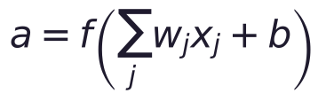
With the sigmoid activation, one neuron is logistic regression. Stacking neurons in layers lets the network learn non-linear patterns.
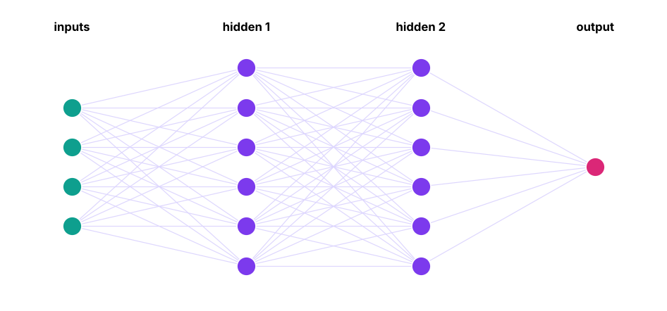
A multilayer perceptron: inputs, two hidden layers and an output. Every connection has a weight learned from data.
Activation functions
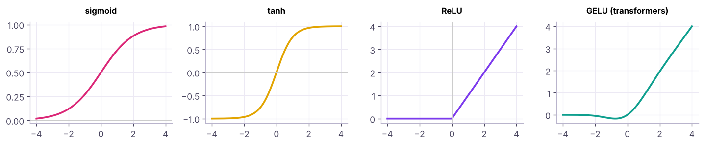
Common activation functions. ReLU is the default for hidden layers; sigmoid and softmax are used for outputs.
Activation
Where
Why
ReLU (max(0, z))
Hidden layers
Simple, fast, avoids vanishing gradients
GELU, SiLU
Hidden layers of transformers
Smooth variants of ReLU
Sigmoid
Binary output
Probability between 0 and 1
Softmax
Multiclass output
Probabilities that sum to 1
None (linear)
Regression output
Any real value
Without non-linear activations, any stack of layers collapses into a single linear model.
How networks learn: backpropagation
Forward pass: compute predictions layer by layer.
Loss: measure the error (cross-entropy for classification, MSE for regression).
Backward pass: use the chain rule to compute the gradient of the loss with respect to every weight (backpropagation).
Update: gradient descent step on every weight (lesson 11), usually with the Adam optimiser on mini-batches.
Neural networks win on unstructured data (images, text, audio). On small tabular data, logistic regression and gradient boosting usually match or beat them with less tuning.
Training practice
Technique
Purpose
Scale inputs
Stable, fast optimisation
Learning rate (and schedules)
The single most important setting
Mini-batches (32–512)
Efficient GPU use, regularising noise
Epochs + early stopping
Stop when validation loss stops improving
Dropout
Randomly switch off neurons in training: reduces overfitting
Flip/crop images, paraphrase text: more data for free
Transfer learning
Start from a pre-trained model and fine-tune: the default today
Training vs validation loss: when validation loss starts rising the network is overfitting; early stopping keeps the best epoch.
Deep-learning architectures
The main architecture families and their typical data.
Transformers (Vaswani et al., 2017, "Attention Is All You Need") let every token look at every other token through self-attention, train in parallel on GPUs and scale to billions of parameters. Pre-trained on huge text corpora to predict the next token, then instruction-tuned and aligned with human feedback, they became large language models (GenAI track).
PyTorch and Keras
Python
# PyTorch (pip install torch): the research and industry standardimport torch, torch.nn as nn
model = nn.Sequential(nn.Linear(64, 128), nn.ReLU(), nn.Dropout(0.2), nn.Linear(128, 10))
opt = torch.optim.AdamW(model.parameters(), lr=1e-3, weight_decay=1e-4)
loss_fn = nn.CrossEntropyLoss()
for epoch inrange(20):
for xb, yb in train_loader: # mini-batchesopt.zero_grad()
loss = loss_fn(model(xb), yb)
loss.backward() # backpropagation (autograd)opt.step() # Adam update
Python
# Keras 3 (pip install keras): high-level API on TensorFlow, JAX or PyTorchimport keras
model = keras.Sequential([keras.layers.Dense(128, activation="relu"), keras.layers.Dropout(0.2), keras.layers.Dense(10, activation="softmax")])
model.compile(optimizer="adam", loss="sparse_categorical_crossentropy", metrics=["accuracy"])
model.fit(X_train, y_train, validation_split=0.2, epochs=50, callbacks=[keras.callbacks.EarlyStopping(patience=5, restore_best_weights=True)])
Python
# Transfer learning with Hugging Face (pip install transformers): fine-tune a pre-trained model for sentimentfrom transformers import pipeline
clf = pipeline("sentiment-analysis", model="distilbert-base-uncased-finetuned-sst-2-english")
clf(["Battery barely lasts half a day", "Display is bright and sharp"])
Free GPUs for practice: Google Colab and Kaggle notebooks.
Summary
Key takeaways
A neuron = weighted sum + activation; layers of neurons with non-linear activations learn complex functions.
Training = forward pass, loss, backpropagation (chain rule), gradient-descent updates (Adam) over epochs and mini-batches.
Use ReLU/GELU in hidden layers, sigmoid/softmax outputs for classification; scale inputs; regularise with early stopping, dropout and weight decay.
Neural networks excel on images, text and audio; on small tabular data, gradient boosting and logistic regression are strong competitors.
CNNs for images, transformers for sequences and language (LLMs); PyTorch, Keras and Hugging Face are the main tools; transfer learning is the default.
Quick quiz6 questions · tap an answer to check it
1. What happens without non-linear activation functions?
Answer: A. Non-linearity is what gives depth its power.
2. What does backpropagation compute?
Answer: A. Gradient descent then updates the weights.
3. Which output activation for a 10-class problem?
Answer: B. Probabilities that sum to 1.
4. Validation loss starts rising while training loss keeps falling. What is happening?
Answer: A. Early stopping keeps the best epoch.
5. Which architecture is the basis of LLMs?
Answer: C. Self-attention over tokens.
6. For a 2,000-row tabular churn dataset, which is usually a strong first choice?
Answer: A. Deep learning shines on unstructured data.
ExercisePractice
(1) Change the hidden layer size of the NumPy network to 4 and 64: how do loss and boundary change? (2) Train an MLPRegressor on house prices and compare MAE with gradient boosting. (3) In Colab, train the PyTorch model above on the digits data.
Show solution
Python
from sklearn.neural_network import MLPRegressor
from sklearn.ensemble import HistGradientBoostingRegressor
from sklearn.metrics import mean_absolute_error
h = pd.read_csv("house_prices.csv").dropna(subset=["area_sqft"]); h = h[h.price_lakh.between(5, 300)]
Xh = pd.get_dummies(h.drop(columns=["house_id", "price_lakh"]), drop_first=True).astype(float)
a, b, c, d = train_test_split(Xh, h.price_lakh, test_size=0.2, random_state=0)
mlp_r = make_pipeline(StandardScaler(), MLPRegressor((64, 32), alpha=1e-3, max_iter=3000, early_stopping=True, random_state=0)).fit(a, c)
print(mean_absolute_error(d, mlp_r.predict(b)), mean_absolute_error(d, HistGradientBoostingRegressor().fit(a, c).predict(b)))
Interview cornerQuestions you may be asked
Q: Explain how a neural network learns.
It makes predictions with its current weights, measures the error with a loss function, computes how each weight affected the error through backpropagation, and adjusts the weights slightly in the direction that reduces the error, repeating over many batches and epochs.
Q: What is the vanishing gradient problem?
In deep networks with sigmoid/tanh, gradients shrink as they pass backward through layers, so early layers learn very slowly; ReLU, residual connections and normalisation fix it.
Q: What is transfer learning?
Reusing a model pre-trained on a large dataset as the starting point for a new task, fine-tuning some or all layers with much less data.
Statistics & Machine Learning · Lesson 27
Explainable AI and MLOps: SHAP, Fairness, Deployment, Monitoring and Responsible ML
Make models trustworthy and useful in production. Global and local explanations (permutation importance, partial dependence, SHAP), fairness checks across groups, packaging a pipeline, serving predictions with FastAPI, batch scoring, experiment tracking with MLflow, monitoring data drift and performance, model cards, and the regulations and responsible-AI practices that apply in India and globally.
● ML track (added)✦ SHAP 0.4x · FastAPI · MLflow 3 · 2026 practiceAdvanced⏱ 130 min
By the end of this lesson you can
Explain a model globally with permutation importance and partial dependence
Explain individual predictions with SHAP values and communicate them
Check performance and error rates across groups for fairness
Package, serve and batch-score a model, and track experiments
Monitor drift and performance after deployment and document models with model cards
Why explainability?
Stakeholders ask "why did the model say this?". Regulators require explanations for credit and insurance decisions; data scientists need explanations to debug leakage and bias.
Python
import pandas as pd, numpy as np, warnings
warnings.filterwarnings("ignore")
from sklearn.model_selection import train_test_split
from sklearn.ensemble import HistGradientBoostingClassifier
from sklearn.metrics import roc_auc_score
tc = pd.read_csv("telecom_churn.csv")
X = pd.get_dummies(tc.drop(columns=["customer_id", "churn", "total_charges"]), drop_first=True).astype(float); y = (tc.churn == "Yes").astype(int)
Xtr, Xte, ytr, yte = train_test_split(X, y, test_size=0.3, stratify=y, random_state=1)
model = HistGradientBoostingClassifier(max_iter=200, learning_rate=0.05, max_leaf_nodes=15, min_samples_leaf=40, random_state=0).fit(Xtr, ytr)
print(f"test AUC {roc_auc_score(yte, model.predict_proba(Xte)[:, 1]):.3f} | features: {list(X.columns)}")
Shuffle one column in the test set and measure how much the score drops: model-agnostic and honest about held-out performance. Correlated features share credit, so treat their importances together.
Global: partial dependence
Partial dependence: average predicted churn probability as one feature changes, holding others as observed. Thin lines (ICE) show individual customers.
Churn falls steeply in the first two years of tenure, rises with monthly charges and with each extra support call: consistent with the EDA, which builds trust in the model.
Local: SHAP values
SHAP (SHapley Additive exPlanations) splits each prediction into contributions from each feature, based on Shapley values from cooperative game theory:
SHAP values shape: (200, 11) | base value (average prediction): 0.245
mean |SHAP| (global importance): {'tenure_months': 0.1417, 'contract_Two year': 0.0715, 'contract_One year': 0.0702, 'support_calls': 0.0555, 'monthly_charges': 0.0552, 'internet_service_Fiber': 0.012}
SHAP summary (beeswarm): each dot is a customer; position = effect on churn probability, colour = feature value (pink high, purple low).
Explaining one customer
Python
probs = model.predict_proba(sample)[:, 1]; i = int(np.argmax(probs))
row = pd.DataFrame({"value": sample.iloc[i], "shap": sv.values[i]}).sort_values("shap", key=abs, ascending=False)
print(f"customer {tc.loc[sample.index[i], 'customer_id']}: P(churn) = {probs[i]:.2f} = base {sv.base_values[i]:.2f} + contributions:")
print(row.head(6).round(3))
defreason(f, v):
name = f.replace("_", " ")
if X[f].isin([0, 1]).all() and"_"in f and f notin ("senior_citizen",): returnf"not on '{f.split('_', 1)[1]}' {f.split('_')[0]}"if v == 0elsef"{f.split('_', 1)[1]} {f.split('_')[0]}"returnf"{name} = {v:g}"
reasons = [reason(f, v) for f, v in row[row.shap > 0].value.head(3).items()]
print("Top reasons for the retention agent:", "; ".join(reasons))
Output
customer T00216: P(churn) = 0.90 = base 0.25 + contributions:
value shap
tenure_months 4.00 0.261
support_calls 5.00 0.188
contract_Two year 0.00 0.097
monthly_charges 76.23 0.064
contract_One year 0.00 0.050
payment_method_Card 0.00 -0.010
Top reasons for the retention agent: tenure months = 4; support calls = 5; not on 'Two year' contract
Waterfall plot for the highest-risk customer: how each feature moves the prediction from the average to the final probability.
shap.TreeExplainer is much faster for tree models (XGBoost, LightGBM, random forests); shap.LinearExplainer for linear models. Explanations describe the model, not causal effects in the real world.
Fairness checks
A model can be accurate overall and still treat groups differently. Check metrics by group for sensitive attributes (gender, age, region, language).
Python
from sklearn.metrics import recall_score, precision_score
t = 0.4; pred = model.predict_proba(Xte)[:, 1] >= t
grp = np.where(Xte.senior_citizen == 1, "senior", "non-senior")
rows = []
for g in ["non-senior", "senior"]:
m = grp == g
rows.append({"group": g, "n": int(m.sum()), "actual churn": round(yte[m].mean(), 3), "flagged rate": round(pred[m].mean(), 3), "recall": round(recall_score(yte[m], pred[m]), 3), "precision": round(precision_score(yte[m], pred[m]), 3), "AUC": round(roc_auc_score(yte[m], model.predict_proba(Xte[m])[:, 1]), 3)})
print(pd.DataFrame(rows).to_string(index=False))
Output
group n actual churn flagged rate recall precision AUC
non-senior 758 0.245 0.243 0.538 0.543 0.806
senior 142 0.324 0.254 0.565 0.722 0.783
Fairness notion
Asks
Note
Demographic parity
Same positive (flag) rate across groups?
Ignores real differences in base rates
Equal opportunity
Same recall (true-positive rate)?
Common for benefits such as retention offers
Equalised odds
Same TPR and FPR?
Stricter
Calibration within groups
Does 30% mean 30% in every group?
Important for risk scores
The definitions can conflict; choose with domain experts and legal advice, document the choice, and remove proxies for protected attributes where required. Tools: Fairlearn, AIF360.
Run it for real with uvicorn app:app --reload, containerise with Docker, and deploy to a cloud service (AWS SageMaker, Azure ML, Google Vertex AI, Cloud Run, Render). Many business models do not need an API at all: a nightly batch job that writes scores to a database table feeding the CRM or a Power BI dashboard is simpler and cheaper.
Tools: Evidently, WhyLabs, Arize, cloud-native monitors; schedule retraining or trigger it when drift or decay crosses thresholds.
Responsible AI and regulation
Privacy: India's Digital Personal Data Protection Act 2023 (and its 2025 rules), GDPR in Europe: lawful purpose, consent, data minimisation and the right to erasure.
Credit and lending: RBI guidelines on digital lending expect transparency on decisions; lenders must be able to explain adverse decisions.
EU AI Act (phased in from 2025–2027): risk tiers; high-risk systems (credit scoring, hiring) need risk management, documentation, human oversight and logging.
Practice: model cards and datasheets, human review for high-impact decisions, bias testing before launch, red-teaming GenAI systems, and an incident process.
Python
import shutil; shutil.rmtree("artifacts")
Summary
Key takeaways
Global explanations: permutation importance (held-out) and partial dependence; local explanations: SHAP values that sum from the base value to the prediction.
Check metrics by group (recall, precision, calibration) and choose a fairness definition with domain experts.
Production means a versioned pipeline, model card, experiment tracking, serving (batch or API with input validation) and monitoring.
Monitor input drift (PSI/KS), prediction drift, performance and business KPIs; retrain on a schedule or on triggers.
Follow privacy and AI regulations (DPDP Act, RBI, EU AI Act) and keep humans in the loop for high-impact decisions.
Quick quiz6 questions · tap an answer to check it
1. What does permutation importance measure?
Answer: A. Model-agnostic.
2. SHAP values for one prediction add up to…
Answer: A. Additive explanations.
3. Which fairness notion asks for equal recall across groups?
Answer: B. Equal true-positive rates.
4. A PSI of 0.4 on monthly charges means…
Answer: A.
0.25 is a large shift.
5. When is a nightly batch job better than a real-time API?
Answer: A. Simpler and cheaper.
6. What belongs in a model card?
Answer: A. Documentation for users and auditors.
ExercisePractice
(1) Use shap.TreeExplainer on an XGBoost churn model and compare top features with permutation importance. (2) Check recall by internet_service at your threshold. (3) Write the FastAPI app as a file, run it with uvicorn, and call it with requests. (4) Simulate drift in tenure_months and compute PSI.
Show solution
Python
import xgboost as xgb
xm = xgb.XGBClassifier(n_estimators=300, learning_rate=0.05, max_depth=3).fit(Xtr, ytr)
ts = shap.TreeExplainer(xm)(Xte); print(pd.Series(np.abs(ts.values).mean(0), index=X.columns).sort_values(ascending=False).head())
for col in ["internet_service_Fiber", "internet_service_No internet"]:
m = Xte[col] == 1; print(col, recall_score(yte[m], pred[m]))
shifted = Xte.tenure_months * 0.7; print(psi(Xtr.tenure_months, shifted))
Interview cornerQuestions you may be asked
Q: How do you explain a black-box model to business users?
Show global drivers (permutation importance, partial dependence) in plain language, give per-customer top reasons from SHAP, validate that they match domain knowledge, and state clearly that they describe the model, not causation.
Q: What can go wrong after a model is deployed?
Data drift, concept drift (relationships change), pipeline bugs, feedback loops, degraded performance for some groups, and business processes ignoring the scores; monitoring and A/B holdouts catch these.
Q: How do you check a model for bias?
Compare performance and error rates across groups, check calibration per group, look for proxy features, involve domain and legal experts, and mitigate (reweighting, thresholds, removing proxies) with documentation.
Statistics & Machine Learning · Lesson 28
ML Capstone: End-to-End Churn Prediction and Retention Strategy
Put the whole ML track together. Frame the churn problem, build leak-free features, compare baselines and models with cross-validation, tune the winner, choose a profit-maximising threshold under a budget, explain predictions, design segment-level retention actions with an A/B test, and write the model card, deployment plan and executive summary for your portfolio.
● ML capstone✦ scikit-learn 1.7+ · LightGBM 4 · SHAPAdvanced⏱ 180 min
By the end of this lesson you can
Frame a churn problem with a decision, metric, baseline and constraints
Build a reproducible pipeline with engineered features and compare models with cross-validation
Tune and evaluate the final model on an untouched test set
Choose the operating threshold from campaign economics and capacity
Explain, document and plan deployment and measurement of the model
1. Frame the problem
Brief. A telecom operator loses about a quarter of its customers every year. The retention team has a monthly budget to contact 500 customers with an offer worth ₹300 (cost ₹300 per contacted customer, accepted or not). A saved customer is worth about ₹4,000 of future margin. Historically, 35% of churners who receive the offer stay. Which customers should get the offer?
Item
Decision
Decision
Rank customers each month; contact the top N within budget
Target
churn = Yes (left within the observation window)
Unit
Customer
Metric
Expected campaign profit; also ROC-AUC and recall in the top N
Baseline
Current rule: month-to-month customers with 3+ support calls
Constraints
≤ 500 contacts; explainable reasons for agents; no use of sensitive attributes for targeting
Capstone workflow.
2. Data and features
Python
import pandas as pd, numpy as np, warnings
warnings.filterwarnings("ignore")
pd.set_option("display.width", 160); pd.set_option("display.max_columns", 20)
tc = pd.read_csv("telecom_churn.csv")
y = (tc.churn == "Yes").astype(int)
print(tc.shape, f"churn rate {y.mean():.3f}")
defadd_features(df):
out = df.copy()
out["is_new"] = (out.tenure_months <= 6).astype(int)
out["charge_per_tenure_month"] = out.total_charges / (out.tenure_months + 1)
out["price_change_proxy"] = out.monthly_charges - out.charge_per_tenure_month # charges now vs lifetime average
out["high_support"] = (out.support_calls >= 3).astype(int)
out["m2m_and_new"] = ((out.contract == "Month-to-month") & (out.tenure_months <= 12)).astype(int)
returnout.drop(columns=["customer_id", "churn"])
X = add_features(tc)
print(X.columns.tolist())
All features are known before the churn event (tenure, plan, charges, recent support calls), so there is no leakage. senior_citizen is kept for fairness checks but excluded from targeting features (a business and ethics choice).
Python
from sklearn.model_selection import train_test_split
X_model = X.drop(columns=["senior_citizen"])
Xtr, Xte, ytr, yte, idx_tr, idx_te = train_test_split(X_model, y, tc.index, test_size=0.25, stratify=y, random_state=2026)
print(f"train {len(Xtr)} | test {len(Xte)} (locked away until the end)")
Output
train 2250 | test 750 (locked away until the end)
3. Baselines and candidate models
Python
from sklearn.compose import ColumnTransformer
from sklearn.preprocessing import StandardScaler, OneHotEncoder
from sklearn.pipeline import Pipeline
from sklearn.linear_model import LogisticRegression
from sklearn.ensemble import RandomForestClassifier, HistGradientBoostingClassifier
from sklearn.dummy import DummyClassifier
from sklearn.model_selection import StratifiedKFold, cross_validate
import lightgbm as lgb
num = [c for c in X_model.columns if X_model[c].dtype != object andstr(X_model[c].dtype) != "str"]
cat = [c for c in X_model.columns if c notin num]
pre = ColumnTransformer([("num", StandardScaler(), num), ("cat", OneHotEncoder(handle_unknown="ignore"), cat)])
cv = StratifiedKFold(5, shuffle=True, random_state=0)
candidates = {
"dummy (base rate)": DummyClassifier(strategy="prior"),
"logistic regression": LogisticRegression(max_iter=3000, C=0.5),
"random forest": RandomForestClassifier(500, min_samples_leaf=20, max_features=0.5, random_state=0, n_jobs=1),
"HistGradientBoosting": HistGradientBoostingClassifier(learning_rate=0.05, max_iter=200, max_leaf_nodes=15, min_samples_leaf=40, random_state=0),
"LightGBM": lgb.LGBMClassifier(n_estimators=300, learning_rate=0.03, num_leaves=15, min_child_samples=40, subsample=0.8, subsample_freq=1, colsample_bytree=0.8, verbose=-1, random_state=0, n_jobs=1),
}
rows = []
for name, est incandidates.items():
r = cross_validate(Pipeline([("pre", pre), ("model", est)]), Xtr, ytr, cv=cv, scoring=["roc_auc", "average_precision", "neg_log_loss"])
rows.append({"model": name, "ROC-AUC": r["test_roc_auc"].mean(), "± sd": r["test_roc_auc"].std(), "PR-AUC": r["test_average_precision"].mean(), "log loss": -r["test_neg_log_loss"].mean()})
board = pd.DataFrame(rows).round(3).sort_values("ROC-AUC", ascending=False); print(board.to_string(index=False))
rule = ((Xtr.contract == "Month-to-month") & (Xtr.support_calls >= 3)).astype(int)
from sklearn.metrics import recall_score, precision_score
print(f"business rule on train: flags {rule.mean():.1%} | recall {recall_score(ytr, rule):.3f} | precision {precision_score(ytr, rule):.3f}")
Output
model ROC-AUC ± sd PR-AUC log loss
logistic regression 0.815 0.036 0.624 0.440
random forest 0.803 0.033 0.590 0.456
LightGBM 0.796 0.031 0.576 0.469
HistGradientBoosting 0.793 0.031 0.571 0.476
dummy (base rate) 0.500 0.000 0.257 0.570
business rule on train: flags 8.5% | recall 0.171 | precision 0.516
4. Tune the leading models
Python
from sklearn.model_selection import GridSearchCV, RandomizedSearchCV
from scipy.stats import loguniform, randint, uniform
lr_search = GridSearchCV(Pipeline([("pre", pre), ("model", LogisticRegression(max_iter=3000))]), {"model__C": np.logspace(-2, 1, 8)}, cv=cv, scoring="roc_auc").fit(Xtr, ytr)
gb_search = RandomizedSearchCV(Pipeline([("pre", pre), ("model", lgb.LGBMClassifier(verbose=-1, random_state=0, subsample_freq=1, n_jobs=1))]),
{"model__n_estimators": randint(100, 600), "model__learning_rate": loguniform(0.01, 0.1), "model__num_leaves": randint(4, 32), "model__min_child_samples": randint(20, 120),
"model__subsample": uniform(0.6, 0.4), "model__colsample_bytree": uniform(0.5, 0.5), "model__reg_lambda": loguniform(0.01, 10)},
n_iter=20, cv=cv, scoring="roc_auc", random_state=0, n_jobs=1).fit(Xtr, ytr)
print(f"logistic best C {lr_search.best_params_['model__C']:.3g} | CV AUC {lr_search.best_score_:.3f}")
print(f"LightGBM best CV AUC {gb_search.best_score_:.3f} | params { {k.split('__')[1]: (round(float(v), 3) if isinstance(v, float) else v) for k, v in gb_search.best_params_.items()} }")
Output
logistic best C 0.193 | CV AUC 0.816
LightGBM best CV AUC 0.812 | params {'colsample_bytree': 0.659, 'learning_rate': 0.046, 'min_child_samples': 71, 'n_estimators': 180, 'num_leaves': 4, 'reg_lambda': 3.343, 'subsample': 0.706}
Both are close. Prefer the simpler, more explainable model unless the complex one is clearly better: we pick the tuned logistic regression if its CV AUC is within 0.005 of LightGBM, otherwise LightGBM.
Python
from sklearn.metrics import roc_auc_score, average_precision_score
final = lr_search.best_estimator_ if lr_search.best_score_ >= gb_search.best_score_ - 0.005else gb_search.best_estimator_
final_name = "logistic regression"if final is lr_search.best_estimator_ else"LightGBM"
p_test = final.predict_proba(Xte)[:, 1]
print(f"chosen: {final_name} | TEST ROC-AUC {roc_auc_score(yte, p_test):.3f} | PR-AUC {average_precision_score(yte, p_test):.3f} | base rate {yte.mean():.3f}")
Output
chosen: logistic regression | TEST ROC-AUC 0.793 | PR-AUC 0.579 | base rate 0.257
The test set was used once, after all choices were made, so this is an honest estimate.
5. Choose how many customers to contact
Expected profit for contacting customer i with churn probability pᵢ:
So contacting pays off only when pᵢ > 300 / (0.35 × 4,000) ≈ 0.21, provided the probabilities are well calibrated.
Python
from sklearn.calibration import calibration_curve
fr, mp = calibration_curve(yte, p_test, n_bins=8, strategy="quantile")
print("calibration (predicted → observed):", [f"{a:.2f}→{b:.2f}"for a, b inzip(mp, fr)])
value, accept, cost = 4000, 0.35, 300
order = np.argsort(-p_test); ys = yte.to_numpy()[order]; ps = p_test[order]
scale = 500 / 750# the test set is 750 of 3,000 customers: scale the 500 budget
res = []
for n in [25, 50, 75, 100, 125, 150, 200, 250, 300]:
tp = ys[:n].sum(); profit = tp * accept * value - n * cost
res.append({"contacts (test)": n, "≈ contacts (all)": int(n / 0.25), "churners reached": int(tp), "precision": round(tp / n, 3), "recall": round(tp / ys.sum(), 3), "profit ₹ (test)": int(profit)})
rt = pd.DataFrame(res); print(rt.to_string(index=False))
best = rt.loc[rt["profit ₹ (test)"].idxmax()]
print(f"most profitable: contact the top {int(best['contacts (test)'])} of 750 test customers (≈ {int(best['≈ contacts (all)'])} of 3,000), cut-off probability ≈ {ps[int(best['contacts (test)']) - 1]:.2f}")
rand_tp = yte.mean() * 125; print(f"random 125 contacts would reach ≈ {rand_tp:.0f} churners; profit ≈ ₹{int(rand_tp * accept * value - 125 * cost):,}")
With the budget of 500 contacts per 3,000 customers (≈ 125 in the test set), the model reaches 75 churners against about 32 for random targeting (₹67,500 expected profit against about ₹7,500). Profit keeps rising up to about 300 test contacts (≈ 1,200 customers, cut-off probability ≈ 0.25, close to the theoretical 0.21), so the team has a case for a larger budget.
Contact rates and recall should be broadly in line with each group's churn rate. Here senior customers are contacted more often (21% vs 16%), which their higher churn rate partly explains, but their recall is also much higher (0.57 vs 0.35). The gap should be reviewed with the business before launch, for example by checking whether non-senior churners are being missed.
7. Measure with an experiment
The model predicts who will churn, not who can be saved. Prove the value with a randomised test:
Score all customers; take the top 600.
Randomly assign 500 to treatment (offer) and 100 to holdout (no offer).
After 60 days compare churn: treatment vs holdout, using a two-proportion test (ML lesson 6).
Incremental saves × ₹4,000 − cost = true campaign ROI. Next step: uplift modelling, which predicts who responds to the offer.
Deployment: a monthly batch job (Python + scheduler or Airflow) reads the latest customer table from the warehouse, scores it with the saved pipeline, writes customer_id, p_churn, reason, action, model_version to a table, which feeds the CRM and a Power BI dashboard tracking campaign results.
9. Executive summary
Key takeaways
Problem: about 26% of customers churn. The retention budget covers 500 contacts a month.
Model: a churn-risk model with ROC-AUC around 0.8 on unseen customers, explainable by tenure, contract type, support calls and charges.
Targeting: contacting the top-ranked 500 reaches roughly twice as many churners as random selection, with a positive expected return per contact.
Actions: service recovery for frequent complainers, an annual-plan upgrade for new month-to-month customers, and fibre quality checks.
Next: run the 500 vs 100 holdout experiment for 60 days, then scale the budget if the incremental ROI holds.
Portfolio checklist
README with problem, data, approach, results (numbers), business recommendation and how to run.
Saved pipeline, model card, and a chart of profit vs number of contacts.
A two-minute video or slide deck walking through the decision.
Summary
Key takeaways
Start from the decision and economics, not the algorithm; define target, unit, metric, baseline and constraints.
Build leak-free features in a pipeline; compare baselines and models with cross-validation; tune; test once.
Prefer simpler models when performance is similar; check calibration before using probabilities in profit maths.
Choose the operating point from expected profit and capacity; attach reasons and tailored actions.
Measure real impact with a randomised holdout, document with a model card, and plan monitoring and retraining.
Quick quiz6 questions · tap an answer to check it
1. What decision does the churn model support?
Answer: A. Always tie the model to a decision.
2. Why use a randomised holdout after deployment?
Answer: A. Measure uplift, not just accuracy.
3. Contact cost ₹300, value ₹4,000, acceptance 35%. Above which churn probability does a contact pay off (if calibrated)?
Answer: B. 300 / (0.35 × 4,000).
4. Two models have CV AUC 0.812 and 0.815. Which do you choose?
Answer: A. Small differences are within noise.
5. Why exclude senior_citizen from targeting features but keep it for monitoring?
Answer: A. Fairness by design and by audit.
6. When should the test set be used?
Answer: A. Otherwise the estimate is optimistic.
ExerciseExtend the capstone
(1) Replace the probability ranking with an expected-profit ranking that also uses each customer's monthly charges as their value. (2) Add SHAP reasons for each targeted customer (lesson 27). (3) Simulate the holdout experiment assuming the offer cuts churn by 35% among treated churners and test significance. (4) Write the README for GitHub.
Show solution
Python
val = tc.loc[Xte.index, "monthly_charges"].to_numpy() * 24# ≈ 2 years of revenue
exp_profit = p_test * accept * val - cost
top = np.argsort(-exp_profit)[:125]; print(int(exp_profit[top].sum()), yte.to_numpy()[top].sum())
rng = np.random.default_rng(1); churn_t = rng.random(500) < 0.55 * 0.65; churn_c = rng.random(100) < 0.55from statsmodels.stats.proportion import proportions_ztest
print(churn_t.mean(), churn_c.mean(), proportions_ztest([churn_t.sum(), churn_c.sum()], [500, 100]))
Interview cornerQuestions you may be asked
Q: Walk me through an end-to-end ML project.
Problem framing and economics, data and leak-free features, EDA, baselines, cross-validated model comparison and tuning, one-time test evaluation, threshold selection from business value, explanation and fairness checks, deployment as a batch or API, experiment to measure impact, and monitoring with retraining.
Q: Your model has AUC 0.80. Is that good?
It depends on the decision: compare with the baseline rule, look at precision/recall in the top N the business can act on, and translate it into expected profit; AUC alone does not say.
Q: How do you know the retention campaign worked?
Randomly hold out some high-risk customers from the offer and compare churn between treated and holdout groups; the difference (with a confidence interval) is the causal effect.